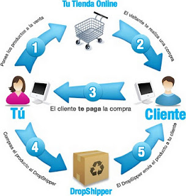
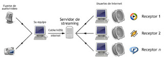

Mon, 26 Mar 2012 10:36:38 PDT
Valor Agregado y Tus Clientes Volverán Una y Otra Vez
Valor Agregado y Tus Clientes Volverán Una y Otra Vez
En posts anteriores hemos hablado de la enorme importancia de implementar una estrategia de valor agregado en tu negocio y de cómo esta puede representar la diferencia entre medianos ingresos o grandes utilidades.
¿Porqué? Pues muy sencillo. A todos nos gusta recibir algo "extra" por nuestro dinero. Nos encanta que nuestras expectativas sean superadas.
Así pues, imagina por ejemplo, si tienes pensado invertir $100 pesos en X producto y al momento de hacer tu compra, resulta que obtienes además algún beneficio adicional, rapidez y una sonrisa. Eso se llama valor agregado, y solo entonces:
quedarás más que satisfecho
sentirás que tu dinero vale más
estarás más abierto a comprar en el mismo lugar la siguiente vez
no tendrás ninguna reserva en recomendar dicho negocio a tus conocidos
Así pues los beneficios de brindar valor agregado son muchos y harán que tus clientes vuelvan una y otra vez a tu negocio.
Hoy te comparto una lista de tips e ideas para brindar valor agregado. Recuerda sin embargo que seguramente tendrás que invertir algunos pesos extras en la implementación de esta estrategia que deberán retornar con los beneficios respectivos, de tal manera que en la ecuación, siempre salgas ganando.
Imagen de tu local. Los clientes prefieren comprar en lugares que se ven bien, agradables a la vista y limpios. La imágen de tu empresa es determinante.
Imagen de tus colaboradores. La gente valora la buena presentación de quién le atiende, la pulcritud y el buen trato
Supervisar el servicio. Muchos clientes valoran enormemente el solo hecho de que un supervisor se acerque a preguntarles si se les está atendiendo bien. Es un detalle sencillo pero que agrega enorme valor a nuestro negocio
Obsequios a los niños. Si tu negocio tiene que ver con niños o si es frecuentado por señoras acompañadas por sus hijos, siempre es conveniente brindar un obsequio a los pequeños, aún cuando ellos no sean el cliente principal. Esto llama la atención y hace más agradable la relación con tu cliente. Los caramelos o globos son ideales para este fin
Rapidez en el servicio. El mejor valor agregado que puedes ofrecer es la atención pronta y esmerada. De hecho la velocidad para obtener lo que deseamos suele ser un factor decisivo a la hora de comprar. Ver: servicio a domicilio.
Llamada post venta. Otra acción ideal para ventas de autos, casas, maquinaria o aparatos de línea blanca, por ejemplo, es la llamada al cliente unos días después de la venta. El solo hecho de preguntar si todo está bien y arriesgarnos aún a algún reclamo transmite al cliente un enorme sentido de apreciación por su dinero.
La palabra mágica. Si algo valoramos todos es que nos agradezcan nuestra visita, nuestra compra, nuestra preferencia, nuestra espera y nuestra recomendación. Decir "gracias" puede hacer la diferencia.
Ejemplos de Implementación de Acciones de Valor Agregado
Negocios de comida. Por el consumo, entregar un caramelo junto con la cuenta o algún postre.
Taller mecánico. Al brindar servicios o reparaciones, entrega los autos lavados.
Gasolineras. Por consumo de combustible: limpieza de vidrios, revisión de aire en los neumáticos.
Venta de computadoras. Ofrece la primera limpieza de mantenimiento gratis al año y un mes de asesoría telefónica sin costo.
Clínica médica. Ofrece a tus clientes una guía gratuita para mejorar su salud en general por aparte del tratamiento específico que estés brindando.
Dentista. Puedes entregar a tus clientes (especialmente niños) la muela extraída en un empaque especial (para el raton de los dientes).
Venta de pisos. Un brochure con ideas y combinaciones ideales para la decoración de su casa.
El taxista. Que pone música agradable. Cuyo taxi huele bien y que se baja a abrir la puerta a sus clientes.
Restaurantes. Contar con música en vivo, área especial con juegos para niños.
Ferreterías. Ofrecer instalación gratis en la compra de ciertos productos.
Tiendas de curiosidades. Ofrecer empaque de regalo sin costo adicional.
Cómo Comenzar
Los primeros pasos para la implementación tienen que ver con analizar los procesos específicos de tu negocio para determinar los puntos clave donde se puede aplicar una estrategia de valor agregado. Luego, corresponde hacer un presupuesto que nos permita determinar cuánto invertir en dicha estrategia y una proyección de los beneficios a obtener a corto, mediano y largo plazo.
Finalmente recuerda, hay una gran diferencia entre ofrecer valor agregado y dar algo como compensación a un mal servicio. Si brindas a tu cliente algo que supere sus expectativas entonces lograrás satisfacción y agrado. Por el contrario, si tu servicio es deficiente es más conveniente enfocar todos los esfuerzos en mejorarlo en lugar de pretender "disfrazarlo" con obsequios pues el efecto final podría ser negativo.
Más ideas para mejorar tu negocio:
Cómo mejorar tu negocio en 30 días
53 Factores que pueden matar un negocio
Cómo lograr que tu negocio venda más que tus competidores
10 Consejos para triplicar tus ventas
Cómo rescatar un negocio que va mal
Cómo reducir tus costos con efectividad
En posts anteriores hemos hablado de la enorme importancia de implementar una
estrategia de valor agregado en tu negocio y de cómo esta puede representar la diferencia entre medianos ingresos o grandes utilidades.
¿Porqué? Pues muy sencillo. A todos nos gusta recibir algo "extra" por nuestro dinero. Nos encanta que nuestras expectativas sean superadas.
Así pues, imagina por ejemplo, si tienes pensado invertir $100 pesos en X producto y al momento de hacer tu compra, resulta que obtienes además algún beneficio adicional, rapidez y una sonrisa. Eso se llama valor agregado, y solo entonces:
- quedarás más que satisfecho
- sentirás que tu dinero vale más
- estarás más abierto a comprar en el mismo lugar la siguiente vez
- no tendrás ninguna reserva en recomendar dicho negocio a tus conocidos
Así pues los
beneficios de brindar valor agregado son muchos y
harán que tus clientes vuelvan una y otra vez a tu negocio.
Hoy te comparto una lista de
tips e ideas para brindar valor agregado. Recuerda sin embargo que seguramente tendrás que invertir algunos pesos extras en la implementación de esta estrategia que deberán retornar con los beneficios respectivos, de tal manera que en la ecuación, siempre salgas ganando.
-
Imagen de tu local. Los clientes prefieren comprar en lugares que se ven bien, agradables a la vista y limpios. La imágen de tu empresa es determinante.
-
Imagen de tus colaboradores. La gente valora la buena presentación de quién le atiende, la pulcritud y el buen trato
-
Supervisar el servicio. Muchos clientes valoran enormemente el solo hecho de que un supervisor se acerque a preguntarles si se les está atendiendo bien. Es un detalle sencillo pero que agrega enorme valor a nuestro negocio
-
Obsequios a los niños. Si tu negocio tiene que ver con niños o si es frecuentado por señoras acompañadas por sus hijos, siempre es conveniente brindar un obsequio a los pequeños, aún cuando ellos no sean el cliente principal. Esto llama la atención y hace más agradable la relación con tu cliente. Los caramelos o globos son ideales para este fin
-
Rapidez en el servicio. El mejor valor agregado que puedes ofrecer es la atención pronta y esmerada. De hecho la velocidad para obtener lo que deseamos suele ser un factor decisivo a la hora de comprar. Ver: servicio a domicilio.
-
Llamada post venta. Otra acción ideal para ventas de autos, casas, maquinaria o aparatos de línea blanca, por ejemplo, es la llamada al cliente unos días después de la venta. El solo hecho de preguntar si todo está bien y arriesgarnos aún a algún reclamo transmite al cliente un enorme sentido de apreciación por su dinero.
-
La palabra mágica. Si algo valoramos todos es que nos agradezcan nuestra visita, nuestra compra, nuestra preferencia, nuestra espera y nuestra recomendación. Decir "gracias" puede hacer la diferencia.
Ejemplos de Implementación de Acciones de Valor Agregado
- Negocios de comida. Por el consumo, entregar un caramelo junto con la cuenta o algún postre.
- Taller mecánico. Al brindar servicios o reparaciones, entrega los autos lavados.
- Gasolineras. Por consumo de combustible: limpieza de vidrios, revisión de aire en los neumáticos.
- Venta de computadoras. Ofrece la primera limpieza de mantenimiento gratis al año y un mes de asesoría telefónica sin costo.
- Clínica médica. Ofrece a tus clientes una guía gratuita para mejorar su salud en general por aparte del tratamiento específico que estés brindando.
- Dentista. Puedes entregar a tus clientes (especialmente niños) la muela extraída en un empaque especial (para el raton de los dientes).
- Venta de pisos. Un brochure con ideas y combinaciones ideales para la decoración de su casa.
- El taxista. Que pone música agradable. Cuyo taxi huele bien y que se baja a abrir la puerta a sus clientes.
- Restaurantes. Contar con música en vivo, área especial con juegos para niños.
- Ferreterías. Ofrecer instalación gratis en la compra de ciertos productos.
- Tiendas de curiosidades. Ofrecer empaque de regalo sin costo adicional.
Cómo Comenzar
Los primeros pasos para la implementación tienen que ver con
analizar los procesos específicos de tu negocio para determinar los puntos clave donde se puede aplicar una
estrategia de valor agregado. Luego, corresponde hacer un presupuesto que nos permita determinar cuánto invertir en dicha estrategia y una proyección de los beneficios a obtener a corto, mediano y largo plazo.
Finalmente recuerda, hay una gran diferencia entre
ofrecer valor agregado y dar algo como compensación a un mal servicio. Si brindas a tu cliente algo que supere sus expectativas entonces lograrás satisfacción y agrado. Por el contrario, si tu servicio es deficiente es más conveniente enfocar todos los esfuerzos en mejorarlo en lugar de pretender "disfrazarlo" con obsequios pues el efecto final podría ser negativo.
Más
ideas para mejorar tu negocio:
- Cómo mejorar tu negocio en 30 días
- 53 Factores que pueden matar un negocio
- Cómo lograr que tu negocio venda más que tus competidores
- 10 Consejos para triplicar tus ventas
- Cómo rescatar un negocio que va mal
- Cómo reducir tus costos con efectividad
Wed, 14 Mar 2012 09:38:07 PDT
Consejos para Emprender una Empresa
Consejos para Emprender una Empresa
En un mundo como en el que vivimos en el que muchas personas optan por emprender como salida profesional, se hace necesario tener en cuenta algunos consejos para emprender una empresa que ayudarán a tener el éxito un poco más cerca.
No necesariamente tienes que "descubrir el agua azucarada" pero sí poner mucha atención y estar dispuesto a aprender y mejorar día con día.
El siguiente es un compendio de conceptos que ponen en práctica los emprendedores más exitosos del mundo y que tu puedes disfrutar sin costo, gracias a la magia del Internet:
Hay que ofrecer un servicio adaptado al cliente. Puesto que un cliente contento es un cliente que siempre vuelve, es imprescindible que lo que el emprendedor le ofrezca sea justo lo que esté buscando. Por tanto, adaptaremos nuestra oferta a sus necesidades
Analizar bien el entorno en el cual nos moveremos. Es imprescindible hacer un estudio previo de todas aquellas empresas que ofrecen el mismo producto o servicio que nosotros y que nos pueden ofrecer competencia por proximidad
Analizar al resto de las empresas competidoras. Estudiar sus precios, qué ofrecen y cómo lo hacen. Entonces, nosotros aportaremos la diferencia de calidad con el resto. Estudiar estrategias agresivas de ventas, innovar dentro de nuestras posibilidades. Debemos marcar la diferencia con el resto de emprendedores
Una buena reserva financiera. Nos hará falta en los momentos en los que lo estemos pasando mal y necesitemos hacer frente a los pagos. Ahorrar siempre es bueno.
No hacer gastos innecesarios. En los primeros meses, gastar solamente en lo imprescindible para empezar. Lo que gastemos hoy, lo podemos necesitar mañana.
Estudiar bien el momento mas adecuado para empezar a emprender. No es lo mismo vender en una época del año que en otra, dependiendo del producto del que se trate.
Negociar con los proveedores. El éxito de nuestra empresa radica en que generemos ganancias y para ello, la materia prima ha de ser barata. Necesitaremos buscar el proveedor que nos ofrezca el mejor precio y negociaremos con varios a la vez, si hiciera falta. Un consejo es exigir que cumplan los plazos de entrega, mediante contrato, a ser posible y acordar indemnizaciones o rebajas en caso de incumplimiento.
Otro punto importante al momento de emprender una empresa es la definición y el montaje de la idea. Soñar, visionar y planificar son elementos que deben trabajar en conjunto y por tanto es conveniente considerar otros sabios consejos:
Una idea bien realizada es una buena idea. Esto quiere decir que ideas, aparentemente absurdas, pueden tener un final feliz siempre que se rodeen de la infraestructura necesaria, es decir, publicidad, envoltorio, imagen de marca, un soporte sólido en forma de estudio de mercado. Algo nuevo e innovador puede convertirse en un éxito rotundo o en un fracaso si no se siguen estos consejos.
Tormenta de ideas. Necesitamos una buena colección de ellas y establecer una comparativa entre todas. Para ello, nos vamos a tomar el tiempo que necesitemos, mientras más recopilemos más ideas obtendremos, ya que nos sentiremos más inspirados. Una vez hecha la comparativa, analizar las que han quedado descartadas para saber que les falta para llegar a ser las adecuadas.
Probablemente, la primera idea nunca es la buena. Ya que viene cargada de desconocimiento acerca del mercado en el cual nos vamos a mover. Somos aún unos principiantes y necesitamos curtirnos un poco más.
Fijarnos en lo que hacen los emprendedores exitosos. Muchos de ellos han tenido éxito copiando y perfeccionando algo ya existente. Aportar nuestro punto de vista puede mejorar un producto y atraer nuevos clientes. Así mismo, podemos fijarnos en la forma de trabajar que tienen, su manera de publicitarlo, de ofertarlo y lo que es más importante, su mentalidad a la hora de competir.
Nuestros mejores consejeros, somos nosotros mismos. Nosotros somos los que mejor nos conocemos y sabemos mejor que nadie lo que queremos hacer en la vida. No debemos dejarnos llevar por los consejos de los demás que no conocen nuestras circunstancias personales ni nuestras metas. A veces, los que nos rodean nos pueden desanimar a aventurarnos en algo que, simplemente, desconocen. Si muchos hombres y mujeres de éxito hubieran hecho caso a su familia, probablemente, hubieran fracasado.
Así pues, te recomiendo leer esta lista detenidamente. Imprimirla si es posible y leerla con frecuencia para que puedas mantener el rumbo correcto en tu negocio. Mientras tanto, te invito aseguirnos en twitter como @xwin.
Más consejos de negocios
11 Consejos para evitar el endeudamiento
¿Vender barato o vender caro? he allí el dilema
Consejos para hacer tu negocio más productivo
5 Tips para administrar mejor tu negocio
12 Consejos de seguridad para tu empresa
30 Tips para aumentar tus ventas
En un mundo como en el que vivimos en el que muchas personas optan por emprender como salida profesional, se hace necesario tener en cuenta algunos consejos para emprender una empresa que ayudarán a tener el éxito un poco más cerca.
No necesariamente tienes que "descubrir el agua azucarada" pero sí poner mucha atención y estar dispuesto a aprender y mejorar día con día.
El siguiente es un compendio de conceptos que ponen en práctica los
emprendedores más exitosos del mundo y que tu puedes disfrutar sin costo, gracias a la magia del Internet:
- Hay que ofrecer un servicio adaptado al cliente. Puesto que un cliente contento es un cliente que siempre vuelve, es imprescindible que lo que el emprendedor le ofrezca sea justo lo que esté buscando. Por tanto, adaptaremos nuestra oferta a sus necesidades
- Analizar bien el entorno en el cual nos moveremos. Es imprescindible hacer un estudio previo de todas aquellas empresas que ofrecen el mismo producto o servicio que nosotros y que nos pueden ofrecer competencia por proximidad
- Analizar al resto de las empresas competidoras. Estudiar sus precios, qué ofrecen y cómo lo hacen. Entonces, nosotros aportaremos la diferencia de calidad con el resto. Estudiar estrategias agresivas de ventas, innovar dentro de nuestras posibilidades. Debemos marcar la diferencia con el resto de emprendedores
- Una buena reserva financiera. Nos hará falta en los momentos en los que lo estemos pasando mal y necesitemos hacer frente a los pagos. Ahorrar siempre es bueno.
- No hacer gastos innecesarios. En los primeros meses, gastar solamente en lo imprescindible para empezar. Lo que gastemos hoy, lo podemos necesitar mañana.
- Estudiar bien el momento mas adecuado para empezar a emprender. No es lo mismo vender en una época del año que en otra, dependiendo del producto del que se trate.
-
Negociar con los proveedores. El éxito de nuestra empresa radica en que generemos ganancias y para ello, la materia prima ha de ser barata. Necesitaremos buscar el proveedor que nos ofrezca el mejor precio y negociaremos con varios a la vez, si hiciera falta. Un consejo es exigir que cumplan los plazos de entrega, mediante contrato, a ser posible y acordar indemnizaciones o rebajas en caso de incumplimiento.
Otro punto importante al momento de
emprender una empresa es la definición y el montaje de la idea. Soñar, visionar y planificar son elementos que deben trabajar en conjunto y por tanto es conveniente considerar otros sabios consejos:
-
Una idea bien realizada es una buena idea. Esto quiere decir que ideas, aparentemente absurdas, pueden tener un final feliz siempre que se rodeen de la infraestructura necesaria, es decir, publicidad, envoltorio, imagen de marca, un soporte sólido en forma de estudio de mercado. Algo nuevo e innovador puede convertirse en un éxito rotundo o en un fracaso si no se siguen estos consejos.
-
Tormenta de ideas. Necesitamos una buena colección de ellas y establecer una comparativa entre todas. Para ello, nos vamos a tomar el tiempo que necesitemos, mientras más recopilemos más ideas obtendremos, ya que nos sentiremos más inspirados. Una vez hecha la comparativa, analizar las que han quedado descartadas para saber que les falta para llegar a ser las adecuadas.
- Probablemente, la primera idea nunca es la buena. Ya que viene cargada de desconocimiento acerca del mercado en el cual nos vamos a mover. Somos aún unos principiantes y necesitamos curtirnos un poco más.
- Fijarnos en lo que hacen los emprendedores exitosos. Muchos de ellos han tenido éxito copiando y perfeccionando algo ya existente. Aportar nuestro punto de vista puede mejorar un producto y atraer nuevos clientes. Así mismo, podemos fijarnos en la forma de trabajar que tienen, su manera de publicitarlo, de ofertarlo y lo que es más importante, su mentalidad a la hora de competir.
- Nuestros mejores consejeros, somos nosotros mismos. Nosotros somos los que mejor nos conocemos y sabemos mejor que nadie lo que queremos hacer en la vida. No debemos dejarnos llevar por los consejos de los demás que no conocen nuestras circunstancias personales ni nuestras metas. A veces, los que nos rodean nos pueden desanimar a aventurarnos en algo que, simplemente, desconocen. Si muchos hombres y mujeres de éxito hubieran hecho caso a su familia, probablemente, hubieran fracasado.
Así pues, te recomiendo leer esta lista detenidamente. Imprimirla si es posible y leerla con frecuencia para que puedas
mantener el rumbo correcto en tu negocio. Mientras tanto, te invito aseguirnos en twitter como @xwin.
Más
consejos de negocios
- 11 Consejos para evitar el endeudamiento
- ¿Vender barato o vender caro? he allí el dilema
- Consejos para hacer tu negocio más productivo
- 5 Tips para administrar mejor tu negocio
- 12 Consejos de seguridad para tu empresa
- 30 Tips para aumentar tus ventas
Wed, 14 Mar 2012 09:48:22 PDT
48 Microemprendimientos Rentables
48 Microemprendimientos Rentables
En materia de negocios hay miles de propuestas interesantes.
Pero si lo que buscas es encontrar un microemprendimiento rentable, que sea ese negocio de poca inversión pero alto potencial de desarrollo, sencillo de montar y que te genere ingresos suficientes para complementar tu presupuesto familiar, entonces estas ideas te serán de gran atractivo.
Discoteca móvil para fiestas caseras
Clínica de maquillaje y arreglo personal
Decoración de bodas
Pintura de casas
Limpieza de vidrios para oficinas y edificios
Mantenimiento de computadoras a domicilio
SPA para mascotas
Lavado de automóviles
Bicicletas publicitarias
Ventas de comida típica o regional
Carreta de perros calientes (hotdog)
Servicios funerarios para mascotas
Fabricación y venta de velas aromáticas
Aceitera para servicio menor de automóviles
Polarizado de automóviles
Cerrajería
Empresas de reciclaje de aluminio, plástico o periódico
Secretaria virtual desde el hogar
Venta e instalación de alarmas para el hogar y el automóvil
Repostería y pastelería por encargo
Diseño de páginas web
Empresa de email marketing o correo masivo
Confección de uniformes para colegios e industriales
Limpieza de piscinas
Limpieza de casas y edificios
Pintura de cuadros regionales
Fabricación de juegos infantiles en madera
Creación de juegos de mesa
Fabricación de peluches
Tutorías escolares
Fabricación de figuras escolares en foamy
Montaje de pequeños espectáculos para centros comerciales
Crear un blog y ganar dinero vendiendo publicidad con Adsense
Importación y venta de accesorios para Blackberry
Negocio de Bisutería
Reparación de electrodomésticos
Conversión de videos VHS a DVD
Servicio de cuidado de niños
Clases de baile
Servicios de mandados
Elaboración de dulces caseros
Diseño de blancos y almohadas
Paseo de perros
Clínica de manicure y uñas acrílicas
Cursos de cómo hablar en público
Elaboración de cortinas por pedido
Juguería y meriendas
Negocio de tatuajes y piercing
Además, puedes considerar estas otras ideas de negocio que hemos publicado con anterioridad y que con una buena dosis de creatividad y trabajo fácilmente se pueden convertir en microemprendimientos rentables:
10 Formas de hacer dinero en tu tiempo libre
Ideas de productos para fabricar en casa y ganar dinero
30 Buenas ideas de negocios
Negocios para ganar dinero los fines de semana
Cómo incursionar en el negocio de los vídeo juegos
Opciones para ganar ¿dinero rápido?
Ideas para ganar dinero escribiendo
Recuerda que algunos elementos importantes para que tu emprendimiento crezca y se convierta en una empresa formal es la buena administración de los recursos financieros, humanos y como siempre lo recalco, las ventas. Así que anímate y comienza hoy a planificar tu negocio.
En materia de negocios hay miles de propuestas interesantes.
Pero si lo que buscas es encontrar un
microemprendimiento rentable, que sea ese
negocio de poca inversión pero alto potencial de desarrollo, sencillo de montar y que te genere ingresos suficientes para complementar tu presupuesto familiar, entonces estas ideas te serán de gran atractivo.
- Discoteca móvil para fiestas caseras
- Clínica de maquillaje y arreglo personal
- Decoración de bodas
- Pintura de casas
- Limpieza de vidrios para oficinas y edificios
- Mantenimiento de computadoras a domicilio
- SPA para mascotas
- Lavado de automóviles
- Bicicletas publicitarias
- Ventas de comida típica o regional
- Carreta de perros calientes (hotdog)
- Servicios funerarios para mascotas
- Fabricación y venta de velas aromáticas
- Aceitera para servicio menor de automóviles
- Polarizado de automóviles
- Cerrajería
- Empresas de reciclaje de aluminio, plástico o periódico
- Secretaria virtual desde el hogar
- Venta e instalación de alarmas para el hogar y el automóvil
- Repostería y pastelería por encargo
- Diseño de páginas web
- Empresa de email marketing o correo masivo
- Confección de uniformes para colegios e industriales
- Limpieza de piscinas
- Limpieza de casas y edificios
- Pintura de cuadros regionales
- Fabricación de juegos infantiles en madera
- Creación de juegos de mesa
- Fabricación de peluches
- Tutorías escolares
- Fabricación de figuras escolares en foamy
- Montaje de pequeños espectáculos para centros comerciales
- Crear un blog y ganar dinero vendiendo publicidad con Adsense
- Importación y venta de accesorios para Blackberry
- Negocio de Bisutería
- Reparación de electrodomésticos
- Conversión de videos VHS a DVD
- Servicio de cuidado de niños
- Clases de baile
- Servicios de mandados
- Elaboración de dulces caseros
- Diseño de blancos y almohadas
- Paseo de perros
- Clínica de manicure y uñas acrílicas
- Cursos de cómo hablar en público
- Elaboración de cortinas por pedido
- Juguería y meriendas
- Negocio de tatuajes y piercing
Además, puedes considerar estas otras
ideas de negocio que hemos publicado con anterioridad y que con una buena dosis de creatividad y trabajo fácilmente se pueden convertir en microemprendimientos rentables:
- 10 Formas de hacer dinero en tu tiempo libre
- Ideas de productos para fabricar en casa y ganar dinero
- 30 Buenas ideas de negocios
- Negocios para ganar dinero los fines de semana
- Cómo incursionar en el negocio de los vídeo juegos
- Opciones para ganar ¿dinero rápido?
- Ideas para ganar dinero escribiendo
Recuerda que algunos elementos importantes para que
tu emprendimiento crezca y se convierta en una empresa formal es la buena administración de los recursos financieros, humanos y como siempre lo recalco, las ventas. Así que anímate y comienza hoy a
planificar tu negocio.
Sat, 25 Feb 2012 22:23:49 PST
10 Cosas que Nadie te Dice Cuando Inicias un Negocio y Que Necesitas Saber
10 Cosas que Nadie te Dice Cuando Inicias un Negocio y Que Necesitas Saber
Mientras escribía el título de esta entrada, pensaba en lo importante y necesario que es hablar las cosas claramente cuando comenzamos un negocio.
Y aunque suene cómico, se me ocurrió que este tema debería contener la "cruda realidad" acerca de emprender. Así que he intentado plasmar en estas líneas 10 cosas que nadie te dice cuando inicias un negocio y definitivamente necesitas saber.
Por decirlo de otra forma, estas son 10 cosas que yo hubiera deseado que alguien me dijera antes de emprender mi primer negocio y que estoy seguro me hubieran ahorrado dinero y muchos dolores de cabeza. 1. Un negocio requiere tiempo. Si esas pensando montar una empresa para trabajar menos, estás muy equivocado(a). Un negocio propio requiere mucha inversión de tiempo, especialmente al inicio y probablemente durante muchos meses o años, tengas que trabajar el doble de lo que crees.2. Deberás trabajar más que antes. Similar al punto anterior, muchas personas renuncian abruptamente a su empleo porque están cansados de las largas jornadas e interminables horas de trabajo. Pues déjame contarte que tu empresa no será diferente. De hecho, probablemente tengas que trabajar más días y más horas en tu oficina que antes si realmente quieres que tu empresa se levante y crezca.3. Se acabarán los problemas. Este tal vez sea el mito más grande en este tema. Pensar que con tu empresa ya no tendrás problemas o que no será necesario soportar a gente latosa es algo ilusorio. Construir una empresa requiere de hecho mucha habilidad para RESOLVER problemas. Tendrás que tratar con clientes, proveedores, empleados, socios, accionistas, etc. Y necesitaras ser el líder capaz de resolver con ellos todas las situaciones del día a día.4. Ganarás mucho dinero. Esto puede ser cierto y en efecto esta es una de las más importantes razones por las que emprendemos un negocio. Sin embargo, lo que muchos emprendedores ignoran u omiten, es el hecho de que el dinero llega en proporción al trabajo inteligente. Se puede ganar mucha plata con tu empresa, pero en la medida que estés dispuesto a innovar, crear, mejorar lo que hacen otros, ser el mejor en tu ramo y convertirte en todo un estratega.5. Tendrás una gran compañía en pocos meses. Esta es otra falacia común. Creer que con solo hacer alguna inversión, contratar a algunos colaboradores y anunciarte en Internet, llegarán los pedidos y los cientos de clientes interesados en tu producto o servicio es totalmente falso. Construir una empresa es el producto de integrar inteligentemente los distintos factores de los que hablamos en este post y ello requiere mucha dedicación, visión e incansable trabajo.6. Puedes lograrlo tu solo y no necesitas a nadie más. Eso lo he visto únicamente en las películas cuando Rambo acababa con todos sus enemigos en cuestión de minutos. En la vida real, trabajar solo puede ser un suicidio profesional. Debes saber que para conducir un negocio hacia el éxito se requiere de distintos conocimientos y habilidades. Si puedes rodearte de gente inteligente que te brinde buenos consejos y te ayude a solucionar problemas y planificar el rumbo, entonces tendrás más posibilidades de salir victorioso que si pretendes hacerlo todo a tu modo y estilo, sin consultar a nadie.7. Basta con ser bueno en lo que haces. Esto puede ser un detonante del éxito al inicio. Hacer bien las cosas es algo positivo. Sin embargo, muchas compañías han fracasado ante la falta de innovación. Toda empresa necesita evolucionar, aprender y mejorar cada día lo que hace. Especialmente en la era de la información, pretender que lo que sabes hoy seguirá siendo bueno por los próximos 5 años es un engaño. Con toda seguridad para cuando llegue ese tiempo, habrá más competencia, nuevos productos, más tecnología y culturas diferentes de consumo. Así que si quieres crecer, debes estar dispuesto a innovar y mejorar siempre lo que haces. Los Japoneses le llaman a esto: Kaizen.8. Trabaja duro y olvídate de los números. Si algo seguramente acaba con muchas compañías con buen potencial es el descuido #1 de los emprendedores y es olvidarse de los números. Si quieres ser un buen empresario, debes dar mucha prioridad a las cuentas de tu negocio. Si no eres un experto, deberás asesorarte por alguien más pero sin evadir tu responsabilidad de tomar decisiones a la luz de los números. Debes saber siempre cuánto inviertes, cuánto gastas, cuanto facturas y cuál es tu utilidad. Debes manejar presupuestos y tener un rubro de re-inversión. Recuerda, trabajar duro y ser bueno en lo que haces, no sustituye en ninguna manera a conocer los números y tomar decisiones acertadas.9. "Mi producto se vende solo". Si claro! Déjalo en tus bodegas y espera a que tus clientes lleguen a buscarte para comparar. Debes saber que toda empresa, sin importar el tamaño, debe tener una estrategia de ventas y mercadeo. No hablo de invertir millones, pero este principio aplica aún cuando tu empresa seas solamente tú!. Debes vender, vender y vender. Si no sabes hacerlo, contrata a alguien que haga las ventas o recibe un curso. Pero no existe otra forma sobre este planeta que permita el crecimiento de una organización que no tenga que ver con las ventas.10. Lo legal es lo de menos. Yo pensaría que lo legal es como el oxígeno para tu negocio. Muchas personas cometen el grave error de desestimar la parte legal de una compañía. Cumplir con los trámites formales, hacienda, registro tributario, licencias sanitarias, etc. Te permitirá librarte del estrés de las auditorías o de que en algún momento te veas expuesto(a) a problemas que pueden fácilmente acabar con las utilidades de un semestre por concepto de multas y pagos al gobierno. Y desde luego, aún para esto existen asesorías y personas que te pueden orientar y aconsejar. La clave está en estar conscientes de la importancia de la legalización de tu negocio.CONCLUSIÓN
Como lo mencioné al inicio del post, tal vez estos puntos te parezcan duros y directos y lo menos que quisiera es desanimarte. Al contrario, el espíritu de este post como el de 1000 Ideas de Negocios es animar, equipar y orientar a los emprendedores para construir empresas, que sean sólidas, que puedan crecer y brindarte la libertad financiera que anhelas. Y la única forma de iniciar con buen pie es hablando de estas cosas que nadie te dice cuando inicias un negocio.
Y puedo decirte con toda seguridad que una empresa fundamentada en principios consistentes, te brindará enormes satisfacciones profesionales y económicas a largo plazo.
Como siempre, mis mejores deseos de éxito en todo lo que emprendas.
Siguenos en twiter como: @xwin
Más ideas para emprender:
4 Preguntas que debes responder antes de emprender
Consejos prácticos para hacer un estudio de mercado
12 Consejos para contratar el personal adecuado para tu empresa
Cómo comenzar tu negocio en línea
53 Factores que pueden matar un negocio
Más ideas de negocios en el FORO
Mientras escribía el título de esta entrada, pensaba en lo importante y necesario que es hablar las cosas claramente cuando
comenzamos un negocio.
Y aunque suene cómico, se me ocurrió que este tema debería contener la "cruda realidad" acerca de emprender. Así que he intentado plasmar en estas líneas
10 cosas que nadie te dice cuando inicias un negocio y definitivamente necesitas saber.
Por decirlo de otra forma, estas son 10 cosas que yo hubiera deseado que alguien me dijera
antes de emprender mi primer negocio y que estoy seguro me hubieran ahorrado dinero y muchos dolores de cabeza.
1. Un negocio requiere tiempo. Si esas pensando montar una empresa para trabajar menos, estás muy equivocado(a). Un negocio propio requiere mucha inversión de tiempo, especialmente al inicio y probablemente durante muchos meses o años, tengas que trabajar el doble de lo que crees.
2. Deberás trabajar más que antes. Similar al punto anterior, muchas personas renuncian abruptamente a su empleo porque están cansados de las largas jornadas e interminables horas de trabajo. Pues déjame contarte que tu empresa no será diferente. De hecho, probablemente tengas que trabajar más días y más horas en tu oficina que antes si realmente quieres que tu empresa se levante y crezca.
3. Se acabarán los problemas. Este tal vez sea el mito más grande en este tema. Pensar que con tu empresa ya no tendrás problemas o que no será necesario soportar a gente latosa es algo ilusorio. Construir una empresa requiere de hecho mucha habilidad para RESOLVER problemas. Tendrás que tratar con clientes, proveedores, empleados, socios, accionistas, etc. Y necesitaras ser el líder capaz de resolver con ellos todas las situaciones del día a día.
4. Ganarás mucho dinero. Esto puede ser cierto y en efecto esta es una de las más importantes razones por las que emprendemos un negocio. Sin embargo, lo que muchos emprendedores ignoran u omiten, es el hecho de que el dinero llega en proporción al trabajo inteligente. Se puede ganar mucha plata con tu empresa, pero en la medida que estés dispuesto a innovar, crear, mejorar lo que hacen otros, ser el mejor en tu ramo y convertirte en todo un estratega.
5. Tendrás una gran compañía en pocos meses. Esta es otra falacia común. Creer que con solo hacer alguna inversión, contratar a algunos colaboradores y anunciarte en Internet, llegarán los pedidos y los cientos de clientes interesados en tu producto o servicio es totalmente falso. Construir una empresa es el producto de integrar inteligentemente los distintos factores de los que hablamos en este post y ello requiere mucha dedicación, visión e incansable trabajo.
6. Puedes lograrlo tu solo y no necesitas a nadie más. Eso lo he visto únicamente en las películas cuando Rambo acababa con todos sus enemigos en cuestión de minutos. En la vida real, trabajar solo puede ser un suicidio profesional. Debes saber que para conducir un negocio hacia el éxito se requiere de distintos conocimientos y habilidades. Si puedes rodearte de gente inteligente que te brinde buenos consejos y te ayude a solucionar problemas y planificar el rumbo, entonces tendrás más posibilidades de salir victorioso que si pretendes hacerlo todo a tu modo y estilo, sin consultar a nadie.
7. Basta con ser bueno en lo que haces. Esto puede ser un detonante del éxito al inicio. Hacer bien las cosas es algo positivo. Sin embargo, muchas compañías han fracasado ante la falta de innovación. Toda empresa necesita evolucionar, aprender y mejorar cada día lo que hace. Especialmente en la era de la información, pretender que lo que sabes hoy seguirá siendo bueno por los próximos 5 años es un engaño. Con toda seguridad para cuando llegue ese tiempo, habrá más competencia, nuevos productos, más tecnología y culturas diferentes de consumo. Así que si quieres crecer, debes estar dispuesto a innovar y mejorar siempre lo que haces. Los Japoneses le llaman a esto: Kaizen.
8. Trabaja duro y olvídate de los números. Si algo seguramente acaba con muchas compañías con buen potencial es el descuido #1 de los emprendedores y es olvidarse de los números. Si quieres ser un buen empresario, debes dar mucha prioridad a las cuentas de tu negocio. Si no eres un experto, deberás asesorarte por alguien más pero sin evadir tu responsabilidad de tomar decisiones a la luz de los números. Debes saber siempre cuánto inviertes, cuánto gastas, cuanto facturas y cuál es tu utilidad. Debes manejar presupuestos y tener un rubro de re-inversión. Recuerda, trabajar duro y ser bueno en lo que haces, no sustituye en ninguna manera a conocer los números y tomar decisiones acertadas.
9. "Mi producto se vende solo". Si claro! Déjalo en tus bodegas y espera a que tus clientes lleguen a buscarte para comparar. Debes saber que toda empresa, sin importar el tamaño, debe tener una estrategia de ventas y mercadeo. No hablo de invertir millones, pero este principio aplica aún cuando tu empresa seas solamente tú!. Debes vender, vender y vender. Si no sabes hacerlo, contrata a alguien que haga las ventas o recibe un curso. Pero no existe otra forma sobre este planeta que permita el crecimiento de una organización que no tenga que ver con las ventas.
10. Lo legal es lo de menos. Yo pensaría que lo legal es como el oxígeno para tu negocio. Muchas personas cometen el grave error de desestimar la parte legal de una compañía. Cumplir con los trámites formales, hacienda, registro tributario, licencias sanitarias, etc. Te permitirá librarte del estrés de las auditorías o de que en algún momento te veas expuesto(a) a problemas que pueden fácilmente acabar con las utilidades de un semestre por concepto de multas y pagos al gobierno. Y desde luego, aún para esto existen asesorías y personas que te pueden orientar y aconsejar. La clave está en estar conscientes de la importancia de la legalización de tu negocio.
CONCLUSIÓN
Como lo mencioné al inicio del post, tal vez estos puntos te parezcan duros y directos y lo menos que quisiera es desanimarte. Al contrario, el espíritu de este post como el de 1000 Ideas de Negocios es animar, equipar y orientar a los emprendedores para construir empresas, que sean sólidas, que puedan crecer y brindarte la libertad financiera que anhelas. Y la única forma de iniciar con buen pie es hablando de estas cosas que nadie te dice cuando inicias un negocio.
Y puedo decirte con toda seguridad que una empresa fundamentada en principios consistentes, te brindará enormes satisfacciones profesionales y económicas a largo plazo.
Como siempre, mis mejores deseos de éxito en todo lo que emprendas.
Siguenos en twiter como: @xwin
Más ideas para emprender:
- 4 Preguntas que debes responder antes de emprender
- Consejos prácticos para hacer un estudio de mercado
- 12 Consejos para contratar el personal adecuado para tu empresa
- Cómo comenzar tu negocio en línea
- 53 Factores que pueden matar un negocio
- Más ideas de negocios en el FORO
Tue, 21 Feb 2012 21:15:46 PST
Especialízate en Marketing y Finanzas
Especialízate en Marketing y Finanzas
Un emprendedor se define, según Wikipedia como esa persona dispuesta a enfrentar y resolver acciones difíciles. Es ese individuo que con el fin de construir una empresa, está dispuesto a correr ciertos riesgos económicos y financieros.
Esa persona tiene la capacidad de echar a andar un plan que le permita montar su empresa, sostener a su familia y lograr, a largo plazo su libertad financiera.Emprender es Sinónimo de Aprender
Así pues, diremos que para poder tener éxito como emprendedor, necesitas mantener siempre una actitud de aprendiz. Todos los grandes empresarios de hecho han sido siempre hombres y mujeres autodidactas que siempre estaban leyendo, aprendiendo, capacitándose y aprovechando al máximo la información obtenida.
Hoy en día las cosas no son muy diferentes excepto por el hecho de que el Internet nos ha acercado la información de una manera increíblemente fácil y práctica, lo cual lo convierte en la mayor herramienta de aprendizaje del siglo. Recibir un curso online es hoy en día algo sumamente sencillo y económico. Y todo emprendedor debería hacerlo!
Pero si quieres ir aún más allá y deseas especializarte como profesional, permíteme contarte que hay opciones interesantes de formación como las que nos presenta el Instituto Europeo de Posgrado IEP que te permite sacar un on line master o maestría en línea en Marketing y Finanzas.
Esta clase de formación online para empresas representa una oportunidad única para altos ejecutivos, emprendedores y directivos de empresas que deseen completar su carrera y adquirir los conocimientos que les permitan llevar al éxito sus empresas.
Ampliando la información, puedo comentarte que nuestro patrocinador, El IEP imparte cursos de posgrado en conjunto con la Escuela de Negocios de la Universidad CEU San Pablo en Madrid.
Si deseas mayor información al respecto este es el sitio del Instituto Europeo de Posgrado EIP.
Así pues, el reto es seguir aprendiendo y si tenemos las herramientas tan valiosas como estas, porqué no aprovecharlas al máximo. Éxitos para ti!
Un emprendedor se define, según Wikipedia como esa persona dispuesta a enfrentar y resolver acciones difíciles. Es ese individuo que con el fin de
construir una empresa, está dispuesto a correr ciertos riesgos económicos y financieros.
Esa persona tiene la capacidad de echar a andar un
plan que le permita montar su empresa, sostener a su familia y lograr, a largo plazo su libertad financiera.

Emprender es Sinónimo de Aprender
Así pues, diremos que para poder tener éxito como emprendedor, necesitas mantener siempre una actitud de aprendiz. Todos los grandes empresarios de hecho han sido siempre hombres y mujeres autodidactas que siempre estaban leyendo, aprendiendo, capacitándose y aprovechando al máximo la información obtenida.
Hoy en día las cosas no son muy diferentes excepto por el hecho de que el Internet nos ha acercado la información de una manera increíblemente fácil y práctica, lo cual lo convierte en la mayor herramienta de aprendizaje del siglo. Recibir un curso online es hoy en día algo sumamente sencillo y económico. Y todo emprendedor debería hacerlo!
Pero si quieres ir aún más allá y deseas especializarte como profesional, permíteme contarte que hay opciones interesantes de formación como las que nos presenta el Instituto Europeo de Posgrado IEP que te permite sacar un on line master o maestría en línea en Marketing y Finanzas.
Esta clase de formación online para empresas representa una oportunidad única para altos ejecutivos, emprendedores y directivos de empresas que deseen completar su carrera y adquirir los conocimientos que les permitan llevar al éxito sus empresas.
Ampliando la información, puedo comentarte que nuestro patrocinador, El IEP imparte cursos de posgrado en conjunto con la Escuela de Negocios de la Universidad CEU San Pablo en Madrid.
Si deseas mayor información al respecto este es el sitio del Instituto Europeo de Posgrado EIP.
Así pues, el reto es seguir aprendiendo y si tenemos las herramientas tan valiosas como estas, porqué no aprovecharlas al máximo. Éxitos para ti!
Sat, 11 Feb 2012 15:45:27 PST
Cómo Hacer Dinero Blogueando
Cómo Hacer Dinero Blogueando
El blogging es en la actualidad una de las formas de hacer negocios más dinámicas y versátiles con la cual podemos contar en la web.
Millones de persones en todo el mundo le han sacado suficiente provecho al tráfico que reciben en su sitio web, y de esta manera han aprendido lo necesario en lo relativo a como transformar todo esto en beneficios y rentabilidad.
Si bien es cierto que la gran mayoría de los blogueros terminan frustrados cuando al invertir muchas horas de trabajo no ven resultado alguno, también es cierto, que existen muchos otros que han dado los pasos necesarios para ser exitosos y le ha sacando un gran provecho a esta fórmula de negocios.
Ahora bien, ¿Cómo hacer dinero blogueando? No te voy a dar falsas ilusiones diciendo que este es el “Santo Grial” sobre cómo ganar mucho dinero en la web. No me gustan los cuentos chinos, ni mucho menos hacer historietas, la realidad es que eso no es necesario.
Te voy a dar las recomendaciones más efectivas para que comiences a generar dinero con un blog –sin tener que realizar más inversión que el aprendizaje.
Si no estás familiarizado con el tema de los blogs, te recomiendo comenzar por acá: aprendiendo sobre cómo crear un blog y ganar dinero con él. Luego, sigue estos consejos:Ponle el ojo al mercado de afiliación: Aquí puedes focalizar gran parte de tus ingresos mediante el marketing o mercadeo de afiliación. Puedes investigar un poco sobre ello y verás cómo estos sistemas solo colocando algunos anuncios puedes generar muy buenas comisiones que te ayudaran a tener dinero y moverte a otro nivel, sin inversión.Considera Google Adsense: La gente sigue confiando en Google Adsense y piensa que este es la meca para ganar dinero con tu sitio web –puede que sí o que no. Y aunque es un sistemas bastante efectivo, si diversificas la manera en como monetizar tu blogs puedes darte cuenta que también hay otras opciones en el mercado.Enfócate en producir contenido de alta calidad: Producir contenido de alta calidad es esencial para que puedas obtener el máximo de beneficios en todo lo que buscas. Construye enlaces permanentes sin cesar: Otro elemento importante es la construcción de enlaces –o vínculos—permanentes pero de gran calidad. Esto mejorará considerablemente el tráfico y la relevancia de tu blog. Obséquiale algo a tu audiencia: Las personas por lo general reciben un tráfico más o menos decente pero no se convierte en dinero porque su taza de rebote es muy alta. Para reducirla, es necesario que tengas en mente algunos trucos para mantener a la gente pegada a tu sitio y a tu contenido al menos unos cuantos minutos. Para esto puedes crear videos tutoriales, permitir descargas, regalar libros electrónicos o cualquier otro beneficio que tus visitantes valoresn y que sea útil para ellos. 5 Ventajas De Promocionar Tu Negocio A Través De Un Blog
Si por el contrario, solamente te atrae la idea de utilizar un blog para promocionar tu negocio, entonces hay muchas formas en cómo podemos hacerlo. No obstante, tener a mano la fórmula perfecta que nos ayude a captar nuevos consumidores y que a su vez, esto impacte en un incremento de nuestras ventas es el punto clave que debemos considerar.
De lo que básicamente se trata todo esto es que podamos precisar de una serie de elementos de mercadeo que nos permitan lanzar una estrategia correcta de blogging –no basada al azar— sino bien sustentada sobre la aplicación de las mejores prácticas para ello.
Algunas de las principales ventajas que se desprenden de promocionar nuestro negocio a través de un blog o una red blogs apuntando a un mismo objetivo.
Reducción de costos de operación: Los costos de operación son un factor elemental en todo lo que tiene que ver con el manejo de un negocio. La promoción de productos y servicios a través de la web es muy efectiva y sobre todo la reducción en costos es altamente considerable.
Mayor alcance: En lo que respecta al alcance de la misma, la penetración de Internet en los mercados hispanos es bastante buena y va en franco crecimiento. Esto indica que el alcance es bastante decente y mas ahora que los usuarios pueden acceder a tus contenidos incluso desde la telefonía móvil.
Disponibilidad: Un servicio que ofrezcas a través de la web puede estar disponible en cualquier lugar del mundo –las 24 horas del día. Inclusive, puedes tener personas que están consumiendo tu publicidad en otros idiomas y tomando decisiones sobre la base de las ofertas que has hecho –y todo esto mientras duermes o te tomas un café con tus amigos. Además de esto, luego que has puesto a la venta productos y servicios, todo el proceso de venta –y la operatividad de las transacciones—se realiza completamente en línea y todo resulta ser verdaderamente impresionante.
Bajo riesgo: Si bajan los costos operación también bajan los riesgos. El factor dinero es el mas temen los hombres de negocio y puedes incluso hacer planes, experimentar con nuevas cosas y estoy seguro que vas a obtener grandes beneficios.
Alto impacto: Cuando tu promocionas un producto o servicio a través de la web tu producto tiene un muy alto impacto y tendrás la oportunidad de sacarle el máximo de provecho a una serie de aspectos que son muy positivos para el crecimiento de tu empresa.
Así pues, tienes en tu mano otra importante y poderosa herramienta para ganar dinero y hacer crecer tus negocios. Si deseas adentrarte aún más en el mundo del blogging, te recomiendo mi visitar Tu Primer Blog.
Más ideas de negocios:
$7000 dólares mensuales, caso John Chow
Marketing en Facebook para promocionar tu negocio
Promoción de servicios profesionales, 9 consejos
10 Ideas para transformar tu vehículo en un negocio
Gana dinero con un Blog
Mujeres emprendedoras y sus fortalezas
Frases que NO escucha, la gente de éxito
El blogging es en la actualidad una de las formas de hacer negocios más dinámicas y versátiles con la cual podemos contar en la web.
Millones de persones en todo el mundo le han sacado suficiente provecho al tráfico que reciben en su sitio web, y de esta manera han aprendido lo necesario en lo relativo a como transformar todo esto en beneficios y rentabilidad.
Si bien es cierto que la gran mayoría de los blogueros terminan frustrados cuando al invertir muchas horas de trabajo no ven resultado alguno, también es cierto, que existen muchos otros que han dado los pasos necesarios para ser exitosos y le ha sacando un gran provecho a esta fórmula de negocios.
Ahora bien, ¿Cómo hacer dinero blogueando? No te voy a dar falsas ilusiones diciendo que este es el “Santo Grial” sobre cómo ganar mucho dinero en la web. No me gustan los cuentos chinos, ni mucho menos hacer historietas, la realidad es que eso no es necesario.
Te voy a dar las recomendaciones más efectivas para que comiences a generar dinero con un blog –sin tener que realizar más inversión que el aprendizaje.
Si no estás familiarizado con el tema de los blogs, te recomiendo comenzar por acá: aprendiendo sobre cómo crear un blog y ganar dinero con él. Luego, sigue estos consejos:
Ponle el ojo al mercado de afiliación: Aquí puedes focalizar gran parte de tus ingresos mediante el marketing o mercadeo de afiliación. Puedes investigar un poco sobre ello y verás cómo estos sistemas solo colocando algunos anuncios puedes generar muy buenas comisiones que te ayudaran a tener dinero y moverte a otro nivel, sin inversión.
Considera Google Adsense: La gente sigue confiando en Google Adsense y piensa que este es la meca para ganar dinero con tu sitio web –puede que sí o que no. Y aunque es un sistemas bastante efectivo, si diversificas la manera en como monetizar tu blogs puedes darte cuenta que también hay otras opciones en el mercado.
Enfócate en producir contenido de alta calidad: Producir contenido de alta calidad es esencial para que puedas obtener el máximo de beneficios en todo lo que buscas.
Construye enlaces permanentes sin cesar: Otro elemento importante es la construcción de enlaces –o vínculos—permanentes pero de gran calidad. Esto mejorará considerablemente el tráfico y la relevancia de tu blog.
Obséquiale algo a tu audiencia: Las personas por lo general reciben un tráfico más o menos decente pero no se convierte en dinero porque su taza de rebote es muy alta. Para reducirla, es necesario que tengas en mente algunos trucos para mantener a la gente pegada a tu sitio y a tu contenido al menos unos cuantos minutos. Para esto puedes crear videos tutoriales, permitir descargas, regalar libros electrónicos o cualquier otro beneficio que tus visitantes valoresn y que sea útil para ellos.
5 Ventajas De Promocionar Tu Negocio A Través De Un Blog
Si por el contrario, solamente te atrae la idea de utilizar un blog para promocionar tu negocio, entonces hay muchas formas en cómo podemos hacerlo. No obstante, tener a mano la fórmula perfecta que nos ayude a captar nuevos consumidores y que a su vez, esto impacte en un incremento de nuestras ventas es el punto clave que debemos considerar.
De lo que básicamente se trata todo esto es que podamos precisar de una serie de elementos de mercadeo que nos permitan lanzar una estrategia correcta de blogging –no basada al azar— sino bien sustentada sobre la aplicación de las mejores prácticas para ello.
Algunas de las principales ventajas que se desprenden de promocionar nuestro negocio a través de un blog o una red blogs apuntando a un mismo objetivo.
- Reducción de costos de operación: Los costos de operación son un factor elemental en todo lo que tiene que ver con el manejo de un negocio. La promoción de productos y servicios a través de la web es muy efectiva y sobre todo la reducción en costos es altamente considerable.
- Mayor alcance: En lo que respecta al alcance de la misma, la penetración de Internet en los mercados hispanos es bastante buena y va en franco crecimiento. Esto indica que el alcance es bastante decente y mas ahora que los usuarios pueden acceder a tus contenidos incluso desde la telefonía móvil.
- Disponibilidad: Un servicio que ofrezcas a través de la web puede estar disponible en cualquier lugar del mundo –las 24 horas del día. Inclusive, puedes tener personas que están consumiendo tu publicidad en otros idiomas y tomando decisiones sobre la base de las ofertas que has hecho –y todo esto mientras duermes o te tomas un café con tus amigos. Además de esto, luego que has puesto a la venta productos y servicios, todo el proceso de venta –y la operatividad de las transacciones—se realiza completamente en línea y todo resulta ser verdaderamente impresionante.
- Bajo riesgo: Si bajan los costos operación también bajan los riesgos. El factor dinero es el mas temen los hombres de negocio y puedes incluso hacer planes, experimentar con nuevas cosas y estoy seguro que vas a obtener grandes beneficios.
- Alto impacto: Cuando tu promocionas un producto o servicio a través de la web tu producto tiene un muy alto impacto y tendrás la oportunidad de sacarle el máximo de provecho a una serie de aspectos que son muy positivos para el crecimiento de tu empresa.
Así pues, tienes en tu mano otra importante y poderosa herramienta para ganar dinero y hacer crecer tus negocios. Si deseas adentrarte aún más en el mundo del blogging, te recomiendo mi visitar Tu Primer Blog.
Más ideas de negocios:
- $7000 dólares mensuales, caso John Chow
- Marketing en Facebook para promocionar tu negocio
- Promoción de servicios profesionales, 9 consejos
- 10 Ideas para transformar tu vehículo en un negocio
- Gana dinero con un Blog
- Mujeres emprendedoras y sus fortalezas
- Frases que NO escucha, la gente de éxito
Wed, 01 Feb 2012 18:57:12 PST
El Lucrativo Negocio de la Belleza, 35 Ideas para Emprender
El Lucrativo Negocio de la Belleza, 35 Ideas para Emprender
Para nadie es un secreto que la belleza es un lucrativo negocio que mueve billones de dólares al año. Y que a diferencia de otros negocios, ha sobrevivido a las crisis económicas.
Y como no habría de serlo si todo el mundo quiere lucir mejor y verse más joven, casi sin escatimar el precio. Así que hoy te comparto 35 ideas para emprender en este rentable negocio.
La gama de productos y servicios es muy amplia y eso es bueno pues te permitirá encontrar alguna alternativa a la altura de tus propósitos, conocimientos y capacidad de inversión:
Depilación con cera u otros métodos innovadores
Tratamientos para el acné y eliminación de cicatrices
Negocio de tatuajes y body piercing
Clínica de reducción de peso
Clínica cosmética que engloba varios servicios
Masajes relajantes
Masajes reductivos
Venta y distribución productos para reducción de peso
Clínica nutricionista
Estética y sala de belleza con los servicios usuales
Salón de belleza ejecutivo
Aplicación de uñas acrílicas
Aplicación de pestañas postizas
Maquillista profesional para bodas
Venta de perfumería
Elaboración y venta de productos de maquillaje
Venta de productos rejuvenecedores y anti-arrugas
Venta de cosméticos por catálogo
Elaboración y venta de pelucas
Cursos de maquillaje
Depilación permanente
Depilación de cejas
Cirugías plásticas menores
Cirugías correctivas mayores
Aplicación de botox para eliminación de líneas de expresión
Distribuidor mayorista de productos cosméticos
Manicure y pedicure estético y clínico
Fabricación y venta de jabones aromáticos y de escencias
Asesor de imagen y estilo
Tienda de accesorios cosméticos por Internet
Gimansio y SPA
Peluquería
Distribución de fajas reductoras
Colocación de implantes de busto y gluteos
Clínica de medicina estética y odontología
Para planear adecuadamente el montaje de tu negocio te recomiendo seguir las siguientes sugerencias:
Prepara un estudio de mercado para conoce a tus potenciales clientes en el sector.
Si rentas un local, asegúrate que sea un lugar visible, transitado y que la renta sea moderada y acorde a tu presupuesto. Leer 10 razones por las cuales no necesitas un local comercial.
Determina el equipo que necesitarás y establécelo en tu presupuesto para cotizar y conseguir los mejores precios.
Busca a los mejores proveedores tanto en calidad como en precio y facilidades de pago.
Fundamenta tu negocio en un excelente servicio al cliente, recuerda que sobre todo en este segmento de negocios, la gente suele ser muy exigente.
Desarrolla una imagen muy juvenil y moderna para tu negocio a fin de hacerlo atractivo para tus potenciales clientes.
Si es posible, combina algunos de estos servicios con entrega a domicilio y expande así tu mercado.
Puedes hacer clic en el siguiente enlace si quieres saber en detalle cómo preparar un plan de negocio y tener éxito.Nota: Es importante que para algunos tipos de negocios como las cirugías plásticas, colocación de implantes y similares se requiere desde luego una certificación médica profesional. No es conveniente que intentes realizar ningún procedimiento sin la licencia médica respectiva.
Otras ideas para emprender:
10 Ideas novedosas: soluciones a personas con discapacidad
25 Oportunidades de negocio en educación
50 Ideas para emprender
7 Ideas de negocios relacionadas con servicios funerarios
40 Ideas de negocio relacionadas con medicina y salud
Negocios al estilo Japonés
Para nadie es un secreto que la belleza es un lucrativo negocio que mueve billones de dólares al año. Y que a diferencia de otros negocios, ha sobrevivido a las crisis económicas.
Y como no habría de serlo si todo el mundo quiere lucir mejor y verse más joven, casi sin escatimar el precio. Así que hoy te comparto
35 ideas para emprender en este
rentable negocio.
La gama de productos y servicios es muy amplia y eso es bueno pues te permitirá encontrar alguna alternativa a la altura de tus propósitos, conocimientos y capacidad de inversión:
- Depilación con cera u otros métodos innovadores
- Tratamientos para el acné y eliminación de cicatrices
- Negocio de tatuajes y body piercing
- Clínica de reducción de peso
- Clínica cosmética que engloba varios servicios
- Masajes relajantes
- Masajes reductivos
- Venta y distribución productos para reducción de peso
- Clínica nutricionista
- Estética y sala de belleza con los servicios usuales
- Salón de belleza ejecutivo
- Aplicación de uñas acrílicas
- Aplicación de pestañas postizas
- Maquillista profesional para bodas
- Venta de perfumería
- Elaboración y venta de productos de maquillaje
- Venta de productos rejuvenecedores y anti-arrugas
- Venta de cosméticos por catálogo
- Elaboración y venta de pelucas
- Cursos de maquillaje
- Depilación permanente
- Depilación de cejas
- Cirugías plásticas menores
- Cirugías correctivas mayores
- Aplicación de botox para eliminación de líneas de expresión
- Distribuidor mayorista de productos cosméticos
- Manicure y pedicure estético y clínico
- Fabricación y venta de jabones aromáticos y de escencias
- Asesor de imagen y estilo
- Tienda de accesorios cosméticos por Internet
- Gimansio y SPA
- Peluquería
- Distribución de fajas reductoras
- Colocación de implantes de busto y gluteos
- Clínica de medicina estética y odontología
Para planear adecuadamente el montaje de tu negocio te recomiendo seguir las siguientes sugerencias:
- Prepara un estudio de mercado para conoce a tus potenciales clientes en el sector.
- Si rentas un local, asegúrate que sea un lugar visible, transitado y que la renta sea moderada y acorde a tu presupuesto. Leer 10 razones por las cuales no necesitas un local comercial.
- Determina el equipo que necesitarás y establécelo en tu presupuesto para cotizar y conseguir los mejores precios.
- Busca a los mejores proveedores tanto en calidad como en precio y facilidades de pago.
- Fundamenta tu negocio en un excelente servicio al cliente, recuerda que sobre todo en este segmento de negocios, la gente suele ser muy exigente.
- Desarrolla una imagen muy juvenil y moderna para tu negocio a fin de hacerlo atractivo para tus potenciales clientes.
- Si es posible, combina algunos de estos servicios con entrega a domicilio y expande así tu mercado.
Puedes hacer clic en el siguiente enlace si quieres saber en detalle cómo preparar un plan de negocio y tener éxito.
Nota: Es importante que para algunos tipos de negocios como las cirugías plásticas, colocación de implantes y similares se requiere desde luego una certificación médica profesional. No es conveniente que intentes realizar ningún procedimiento sin la licencia médica respectiva.
Otras ideas para emprender:
- 10 Ideas novedosas: soluciones a personas con discapacidad
- 25 Oportunidades de negocio en educación
- 50 Ideas para emprender
- 7 Ideas de negocios relacionadas con servicios funerarios
- 40 Ideas de negocio relacionadas con medicina y salud
- Negocios al estilo Japonés
Thu, 26 Jan 2012 06:41:04 PST
Hablar Otro Idioma es Buen Negocio
Hablar Otro Idioma es Buen Negocio
Hoy en día, ser bueno no es suficiente. La globalización demanda cada día más ventajas competitivas en las empresas y una de ellas es la comunicación bilingüe.Así pues, si hablas otro idioma, ello representa una gran oportunidad para hacer negocios.
Hoy te comparto algunas ideas interesantes que puedes emprender utilizando tu mayor fortaleza que es el conocimiento de un segundo idioma.
Según la Asociación Americana de Traductores (ATA), el negocio de las traducciones mueve más de 20 millones de dólares por año, lo cual nos sugiere que este es un lucrativo negocio.¿Por qué se necesita comunicarse en otros idiomas?
Para poder ofrecer sus productos y servicios a otros países y expandir así sus negocios, toda empresa necesita tarde o temprano implementar como parte de su estrategia, distintos mecanismos que incluyan la posibilidad de comunicarse efectivamente con socios, empleados, clientes y proveedores en otros idiomas.
Así pues, no tener la posibilidad de comunicarse en idiomas foráneos termina siendo para muchos, la limitante que les impide llegar más allá e incrementar sus utilidades. De ahí que hay varios negocios que se pueden crear a partir de la posibilidad de hablar otro idioma:
Capacitaciones sobre terminología técnica. Ideal para formación de profesionales en vocabulario y tecnicismos específicos a su rama. Por ejemplo, esto es ideal para pilotos aviadores, sobrecargos y controladores aéreos así como para personal de aeropuertos y agencias de viajes.
Servicios de traducción simultánea para eventos. Este es un servicio ideal para conferencias, seminarios, entrevistas y cursos donde los participantes son de distintas nacionalidades. Puedes ofrecer tus servicios de traductores empresas por hora. Una variante de este es la traducción posterior al discurso, lo cual se puede trabajar con mayor detenimiento y perfección.
Servicios de traducción de documentos. En este caso, necesitas disponer de una computadora personal, una impresora y algún servicio auxiliar de traducción para conceptos técnicos. Regularmente estos servicios se cotizan por palabra y son ideales para traducción de manuales, documentos legales, publicaciones, correspondencia, software, etc.
Cursos de idiomas. Ya sea que impartas cursos personalizados o que trabajes con grupos de alumnos, o equipos corporativos, los cursos de idiomas como el inglés, español, francés e italiano suelen tener mucha demanda. Es usual clasificarlos por niveles y si la compañía lo demanda pueden ser impartidos on-site, intensivos y/o con alguna orientación específica de negocios o lenguaje financiero.
Cursos especializados. Estos son una variante del punto anterior con la diferencia de que pueden ser adaptados a necesidades más específicas como por ejemplo cursos de conversación telefónica para call centers, cursos de redacción para secretarias o bien sobre temas legales.
Tutorías de Preparación para Certificaciones. Hoy en día, las universidades y muchas empresas suelen exigir a sus estudiantes o colaboradores certificaciones específicas en idiomas como el TOEFL o CAE en Inglés para lo cual es ideal un buen curso de preparación previa a los exámenes de certificación. Estos cursos suelen impartirse a personas con niveles altos de conocimiento pero que desean perfeccionar sus habilidades lingüísticas.
Y si deseas reunir todos estos servicios mencionados en un solo catálogo y contratar a otras personas como colaboradores, entonces tienes lo que sería una agencia de traducciones. Claro que el secreto del éxito para la misma es el profesionalismo, la buena pronunciación, el sentido natural del idioma y un amplio vocabulario cultural.
Hoy en día, ser bueno no es suficiente. La globalización demanda cada día más ventajas competitivas en las empresas y una de ellas es la comunicación bilingüe.
Así pues, si hablas otro idioma, ello representa una gran oportunidad para hacer negocios.
Hoy te comparto algunas ideas interesantes que puedes
emprender utilizando tu mayor fortaleza que es el conocimiento de un segundo idioma.
Según la Asociación Americana de Traductores (ATA), el negocio de las traducciones mueve más de 20 millones de dólares por año, lo cual nos sugiere que este es un lucrativo negocio.
¿Por qué se necesita comunicarse en otros idiomas?
Para poder ofrecer sus productos y servicios a otros países y expandir así sus negocios, toda empresa necesita tarde o temprano implementar como parte de su estrategia, distintos mecanismos que incluyan la posibilidad de comunicarse efectivamente con socios, empleados, clientes y proveedores en otros idiomas.
Así pues, no tener la posibilidad de comunicarse en idiomas foráneos termina siendo para muchos, la limitante que les impide llegar más allá e incrementar sus utilidades. De ahí que hay varios negocios que se pueden crear a partir de la posibilidad de hablar otro idioma:
-
Capacitaciones sobre terminología técnica. Ideal para formación de profesionales en vocabulario y tecnicismos específicos a su rama. Por ejemplo, esto es ideal para pilotos aviadores, sobrecargos y controladores aéreos así como para personal de aeropuertos y agencias de viajes.
-
Servicios de traducción simultánea para eventos. Este es un servicio ideal para conferencias, seminarios, entrevistas y cursos donde los participantes son de distintas nacionalidades. Puedes ofrecer tus servicios de traductores empresas por hora. Una variante de este es la traducción posterior al discurso, lo cual se puede trabajar con mayor detenimiento y perfección.
-
Servicios de traducción de documentos. En este caso, necesitas disponer de una computadora personal, una impresora y algún servicio auxiliar de traducción para conceptos técnicos. Regularmente estos servicios se cotizan por palabra y son ideales para traducción de manuales, documentos legales, publicaciones, correspondencia, software, etc.
-
Cursos de idiomas. Ya sea que impartas cursos personalizados o que trabajes con grupos de alumnos, o equipos corporativos, los cursos de idiomas como el inglés, español, francés e italiano suelen tener mucha demanda. Es usual clasificarlos por niveles y si la compañía lo demanda pueden ser impartidos on-site, intensivos y/o con alguna orientación específica de negocios o lenguaje financiero.
-
Cursos especializados. Estos son una variante del punto anterior con la diferencia de que pueden ser adaptados a necesidades más específicas como por ejemplo cursos de conversación telefónica para call centers, cursos de redacción para secretarias o bien sobre temas legales.
-
Tutorías de Preparación para Certificaciones. Hoy en día, las universidades y muchas empresas suelen exigir a sus estudiantes o colaboradores certificaciones específicas en idiomas como el TOEFL o CAE en Inglés para lo cual es ideal un buen curso de preparación previa a los exámenes de certificación. Estos cursos suelen impartirse a personas con niveles altos de conocimiento pero que desean perfeccionar sus habilidades lingüísticas.
Y si deseas reunir todos estos servicios mencionados en un solo catálogo y contratar a otras personas como colaboradores, entonces tienes lo que sería una agencia de traducciones. Claro que el secreto del éxito para la misma es el profesionalismo, la buena pronunciación, el sentido natural del idioma y un amplio vocabulario cultural.
Thu, 19 Jan 2012 21:09:58 PST
Cyber Emprendedores: ¿Cómo Iniciar Un Negocio 100% Online?
Cyber Emprendedores: ¿Cómo Iniciar Un Negocio 100% Online?
“Vivimos un tiempo en que no necesitamos infraestructura, una linda secretaria y una moderna central telefónica. Los negocios 100% en línea son una realidad, pero los bajos costos para operarlos, son una realidad mucho más agradable aun.”Emprender es un proceso que requiere de poner en marcha el conocimiento que tenemos sobre un tipo de negocio, de un mercado, de nuestros competidores y de cómo podemos combinar una serie de aspectos relevantes a fin de tener participación y ofrecer buenos productos y servicios.
No obstante, la creatividad en todo esto es un factor fundamental porque el solo hecho de convertirnos en nuestros propios jefes, implica unos pocos beneficios –al principio—y mucha responsabilidad. Sin embargo, con el tiempo podrás disfrutar de unos amplios beneficios y sacarle un basto provecho a todo tu esfuerzo. A continuación me gustaría darte algunas pinceladas sobre los pasos que debes de dar para comenzar un negocio completamente a través de la web.
Enfócate en un segmento: Nunca es bueno abarcar mucho y sobre todo cuando no tenemos un buen fundamento de que lo que hemos comenzado ya estará funcionando en forma eficiente y efectiva. Es importante que determínenos –de todas las opciones que tenemos— a que nos queremos dedicar realmente y cómo podemos crear un negocio desde cero que nos permita ir paso a paso actuando en forma concreta. Si queremos montar una tienda virtual podemos determinar algunos objetivos generales, tareas especificas y quienes serian los responsables de llevarla a cabo. No obstante, tener un estudio a mano de los pasos que deben de darse es la decisión más sabia que debes tomar antes que todo comience.
Empiece en forma sistemática: Cuando vayas a comenzar tu negocio en línea necesitas ir dando unos pasos determinados de acuerdo a lo que hayas establecido y lo más importante es ser sistemático con todo ello. Además de esto, si algo te está dando buenos resultados lo correcto es continuar con los modelos de éxito que se van dando en tu propio negocio y de esta manera vas a obtener los resultados que buscas.
Planificación: Muchas personas fracasan y desaniman cuando están comenzando un negocio porque carecen de un plan y es muy probable que en lo que respecta a tener en cuenta todo lo necesario para ello, es muy importante que puedas mantener todo lo relativo a tu negocio bajo control. Se requiere de un plan pero sobre todo de suficiente orden par que las cosas puedan funcionar de forma perfecta.
Nunca dejes de aprender: Hay muchas cosas que siempre debemos de conocer sobre el negocio en el que estamos incursionando pero también sobre una serie de aspectos y elementos que son fundamentales para que todas las cosas puedan trabajar en perfecta armonía y que todo pueda funcionar bien. Si detienes el conocimiento tu negocio se verá afectado en forma muy prematura. Mientras más sabes sobre los negocios en línea, la forma en cómo generar más dinero y como volverte más competitivo, mucho más rápido tendrás la posibilidad de obtener los resultados que andas buscando.
Protege tu inversión: En la medida que eres capaz de proteger tu inversión, eliminas los riesgos y salvaguardas tu negocio en internet. Es vital que siempre –como principiante— busques asesoría de manera que puedas dar pasos concretos y que todo funcione en forma adecuada.
Más sobre los negocios online:
El secreto de los negocios por Internet
La genialidad detrás de Facebook
8 Ideas de negocios en Internet
Gana dinero creando directorios temáticos web
El negocio de las oficinas virtuales
Plan de negocios para agencia inmobiliaria
“Vivimos un tiempo en que no necesitamos infraestructura, una linda secretaria y una moderna central telefónica. Los negocios 100% en línea son una realidad, pero los bajos costos para operarlos, son una realidad mucho más agradable aun.”
Emprender es un proceso que requiere de poner en marcha el conocimiento que tenemos sobre un tipo de negocio, de un mercado, de nuestros competidores y de cómo podemos combinar una serie de aspectos relevantes a fin de tener participación y ofrecer buenos productos y servicios.
No obstante, la creatividad en todo esto es un factor fundamental porque el solo hecho de convertirnos en nuestros propios jefes, implica unos pocos beneficios –al principio—y mucha responsabilidad. Sin embargo, con el tiempo podrás disfrutar de unos amplios beneficios y sacarle un basto provecho a todo tu esfuerzo. A continuación me gustaría darte algunas pinceladas sobre los pasos que debes de dar para comenzar un negocio completamente a través de la web.
-
Enfócate en un segmento: Nunca es bueno abarcar mucho y sobre todo cuando no tenemos un buen fundamento de que lo que hemos comenzado ya estará funcionando en forma eficiente y efectiva. Es importante que determínenos –de todas las opciones que tenemos— a que nos queremos dedicar realmente y cómo podemos crear un negocio desde cero que nos permita ir paso a paso actuando en forma concreta. Si queremos montar una tienda virtual podemos determinar algunos objetivos generales, tareas especificas y quienes serian los responsables de llevarla a cabo. No obstante, tener un estudio a mano de los pasos que deben de darse es la decisión más sabia que debes tomar antes que todo comience.
-
Empiece en forma sistemática: Cuando vayas a comenzar tu negocio en línea necesitas ir dando unos pasos determinados de acuerdo a lo que hayas establecido y lo más importante es ser sistemático con todo ello. Además de esto, si algo te está dando buenos resultados lo correcto es continuar con los modelos de éxito que se van dando en tu propio negocio y de esta manera vas a obtener los resultados que buscas.
-
Planificación: Muchas personas fracasan y desaniman cuando están comenzando un negocio porque carecen de un plan y es muy probable que en lo que respecta a tener en cuenta todo lo necesario para ello, es muy importante que puedas mantener todo lo relativo a tu negocio bajo control. Se requiere de un plan pero sobre todo de suficiente orden par que las cosas puedan funcionar de forma perfecta.
-
Nunca dejes de aprender: Hay muchas cosas que siempre debemos de conocer sobre el negocio en el que estamos incursionando pero también sobre una serie de aspectos y elementos que son fundamentales para que todas las cosas puedan trabajar en perfecta armonía y que todo pueda funcionar bien. Si detienes el conocimiento tu negocio se verá afectado en forma muy prematura. Mientras más sabes sobre los negocios en línea, la forma en cómo generar más dinero y como volverte más competitivo, mucho más rápido tendrás la posibilidad de obtener los resultados que andas buscando.
-
Protege tu inversión: En la medida que eres capaz de proteger tu inversión, eliminas los riesgos y salvaguardas tu negocio en internet. Es vital que siempre –como principiante— busques asesoría de manera que puedas dar pasos concretos y que todo funcione en forma adecuada.
Más sobre los negocios online:
- El secreto de los negocios por Internet
- La genialidad detrás de Facebook
- 8 Ideas de negocios en Internet
- Gana dinero creando directorios temáticos web
- El negocio de las oficinas virtuales
- Plan de negocios para agencia inmobiliaria
Tue, 10 Jan 2012 20:58:47 PST
El Camino Hacia la Riqueza
El Camino Hacia la Riqueza
Durante muchos años en mi vida, llegué a rechazar la idea de ser rico. Por mucha razones, sociales, religiosas y hasta por una buena dosis de orgullo, el camino hacia la riqueza no era parte de mi agenda.
Los psicologos dicen que la negación solo es un mecanismo de defensa ante algo que no puedes vencer, o lograr...
Afortunadamente, después de un tiempo ciertos eventos hicieron cambiar mis paradigmas acerca de la riqueza y llegué a comprender que sí se puede ser rico y que la riqueza, construida en base a trabajo inteligente y sin vanidad puede brindar enormes satisfacciones.Ser rico puede hacer una gran diferencia en tu vida, tu familia y en la sociedad en general. De hecho se puede ayudar a más personas siendo rico.
Ahora, este tema siempre nos lleva a considerar varias preguntas:
¿Cómo ser rico?
¿Como encontrar ese ansiado camino hacia la riqueza cuando tienes muchas deudas y compromisos por cumplir?
¿Cómo llegar a la libertad financiera si tienes un empleo y apenas dispones de tiempo para construir algo propio?
¿Cómo alcanzar la riqueza si apenas puedes llegar a fin de mes?
En ese sentido, uno de nuestros patrocinadores ha publicado su testimonio personal condensado en lo que el llama: "una guía sincera para hacerse rico". Este es un libro que describe en detalle cómo un hombre de clase media, con una vida promedio y pocos recursos, logró abrirse camino, fundar varias empresas y convertirse en millonario. Y como el mismo lo describe, siendo su principal arma, la fé de creer que se puede.
Lo que me gusta de este libro "Seré Rico y Punto" es que NO supone irresponsablemente una forma "mágica" o rápida de hacerse rico. Por el contrario, es una guía para aprovechar al máximo tus propios recursos personales, financieros e intelectuales para transformarlos en tu escalera hacia la riqueza.
Desde luego, y hago énfasis en ello, no se puede ser rico de un día para otro y menos sin trabajar. Lo que si hace una diferencia es lo que haces y cómo lo haces. Por algo, gente como Robert Kiyosaki y Donald Trump hablan constantemente de diferenciar entre trabajo duro... y trabajo inteligente.
En el libro, se tocan algunos temas como:
Porqué los judíos tienen tanto dinero
Porqué los pobres son pobres
Formas sencillas para comenzar a hacer dinero
La psicología de los millonarios
Como encontrar aquello que te hará rico
Así pues, para encontrar el camino hacia la riqueza, primeramente debemos comenzar por cambiar nuestra forma de pensar y nuestros paradigmas acerca del dinero y de esto seguiremos hablando en próximos artículos.
Mientras tanto aquí puedes ver más sobre el libro "Seré Rico y Punto".Post patrocinado.
Durante muchos años en mi vida, llegué a rechazar la idea de ser rico. Por mucha razones, sociales, religiosas y hasta por una buena dosis de orgullo, el camino hacia la riqueza no era parte de mi agenda.
Los psicologos dicen que la negación solo es un mecanismo de defensa ante algo que no puedes vencer, o lograr...
Afortunadamente, después de un tiempo ciertos eventos hicieron cambiar mis paradigmas acerca de la riqueza y llegué a comprender que sí se puede ser rico y que la riqueza, construida en base a trabajo inteligente y sin vanidad puede brindar enormes satisfacciones.
Ser rico puede hacer una gran diferencia en tu vida, tu familia y en la sociedad en general. De hecho se puede ayudar a más personas siendo rico.
Ahora, este tema siempre nos lleva a considerar varias preguntas:
- ¿Cómo ser rico?
- ¿Como encontrar ese ansiado camino hacia la riqueza cuando tienes muchas deudas y compromisos por cumplir?
- ¿Cómo llegar a la libertad financiera si tienes un empleo y apenas dispones de tiempo para construir algo propio?
- ¿Cómo alcanzar la riqueza si apenas puedes llegar a fin de mes?
En ese sentido, uno de nuestros patrocinadores ha publicado su testimonio personal condensado en lo que el llama: "una guía sincera para hacerse rico". Este es un libro que describe en detalle cómo un hombre de clase media, con una vida promedio y pocos recursos, logró abrirse camino, fundar varias empresas y convertirse en millonario. Y como el mismo lo describe, siendo su principal arma, la fé de creer que se puede.
Lo que me gusta de este libro "Seré Rico y Punto" es que NO supone irresponsablemente una forma "mágica" o rápida de hacerse rico. Por el contrario, es una guía para aprovechar al máximo tus propios recursos personales, financieros e intelectuales para transformarlos en tu escalera hacia la riqueza.
Desde luego, y hago énfasis en ello, no se puede ser rico de un día para otro y menos sin trabajar. Lo que si hace una diferencia es lo que haces y cómo lo haces. Por algo, gente como Robert Kiyosaki y Donald Trump hablan constantemente de diferenciar entre trabajo duro... y trabajo inteligente.
En el libro, se tocan algunos temas como:
- Porqué los judíos tienen tanto dinero
- Porqué los pobres son pobres
- Formas sencillas para comenzar a hacer dinero
- La psicología de los millonarios
- Como encontrar aquello que te hará rico
Así pues, para encontrar el camino hacia la riqueza, primeramente debemos comenzar por cambiar nuestra forma de pensar y nuestros paradigmas acerca del dinero y de esto seguiremos hablando en próximos artículos.
Mientras tanto aquí puedes ver más sobre el libro "Seré Rico y Punto".
Post patrocinado.
Fri, 30 Dec 2011 21:58:19 PST
Drop Shipping, Dinero en Internet
Drop Shipping, Dinero en Internet
Si eres de los que han soñado con ganar dinero en Internet sin hacer una gran inversión, probablemente el Drop Shipping sea tu opción.
Hoy hablaremos de cómo funciona este interesante modelo de negocios que te permite iniciar tu propia empresa online desde casa.¿Qué es el drop shipping?
Básicamente es un sistema que te permite vender productos por Internet a través de tu propia tienda on-line o bien a través de una tienda de terceros, sin la necesidad de tener una bodega con inventario de productos ya que el despacho corre por cuenta de un proveedor mayorista (dropshipper).
Significa que no tendrás que preocuparte por el almacenamiento de los productos, de sus costos ni del empaque y envíos.¿Cómo funciona el drop shipping?
El modelo drop shipping se compone de tres elementos: el cliente, el proveedor (dropshipper) y tú como revendedor intermediario.
El sistema de distribución funciona así:
Tú vendes los productos a través de tu tienda virtual o un sitio de subastas como Ebay o Mercado Libre.
El cliente al navega por tu tienda online y decide comprar tus productos.
Una vez que recibes el pago, contactas al proveedor mayorista para adquirir el producto que has vendido desde luego a un precio menor.
La diferencia entre el precio final al cliente y el precio del dropshipper es tu ganancia.
Haces el pedido a tu proveedor suministrando el nombre y dirección de tu comprador y este se encargará del envío del producto en tu nombre.
¿Cuáles son las ventajas del drop shipping?
Para los emprendedores, este modelo tiene algunas de las ventajas importantes entre las que podemos resaltar:
Mínima inversión inicial. Fundamentalmente solo necesitarás invertir en la plataforma web para montar tu tienda online. Si lo haces a través de una tienda de subastas, la inversión se reduce prácticamente a el tiempo que dediques a operar el negocio.
No tienes costos en inventarios ni bodegas. Como lo mencionamos anteriormente, estos van por cuenta de tu proveedor.
Inventario ilimitado de productos para vender. El hecho de no manejar stocks te da la libertad de ofrecer una amplia gamma de productos en tu tienda.
Buenas ganancias. Los riesgos de perdidas son mínimos ya que si haces una venta, primero recibes el pago de tu cliente y luego pagas a tu proveedor quedándote automáticamente tu ganancia en la mano.
No te ocupas de empaques ni envíos. Tu prioridad en el negocio se enfoca en vender y de lo demás se encarga tu proveedor.
Mercado global ilimitado. Puedes vender tus productos prácticamente a cualquier país del mundo.
Negocio abierto 24 horas. Puedes operar desde tu casa o desde cualquier lugar y la hora que te plazca. Además tu tienda permanece disponible todo el tiempo.
¿Qué desventajas puede tener el dropshipping?
Como en todo negocio, probablemente haya algunas debilidades del sistema que haya que considerar, aunque te aseguro que son mínimas y la clave para poder manejarlas es una buena comunicación con tu proveedor mayorista:
Eventuales demoras en la entrega de los productos.
Reclamos de garantías y devoluciones por parte de los clientes. Aquí es importante tener claro que aunque esta labor corresponde a su proveedor ante el cliente el responsable sigues siendo tu.
Desconocimiento sobre las características de los productos que vende. No tener un adecuado conocimiento de los productos puede afectar sus ventas si usted no resuelve acertadamente las inquietudes del cliente.
Como puedes ver, el drop shipping es un sistemas muy innovador y que puede representar excelentes ingresos si el montaje y la operación es adecuada. Muchas personas venden en Ebay exitosamente a través de este sistema y desde luego, como todo negocio online se requiere mucha responsabilidad y cuidar muy bien los detalles para poder brindar un excelente servicio al cliente.
En un próximo post profundizaré aún mejor sobre los detalles del montaje y aspectos operativos de la tienda.
Más ideas de negocios online:
8 Ideas de negocios en Internet
La genialidad detrás de facebook
Cómo invertir en la bolsa de valores onine
El secreto de los negocios en Internet
Crea una página web para tu negocio en 15 minutos
Cómo promocionar tu negocio en Internet
Si eres de los que han soñado con ganar dinero en Internet sin hacer una gran inversión, probablemente el Drop Shipping sea tu opción.
Hoy hablaremos de cómo funciona este interesante
modelo de negocios que te permite
iniciar tu propia empresa online desde casa.
¿Qué es el drop shipping?
Básicamente es un sistema que te permite vender productos por Internet a través de tu propia tienda on-line o bien a través de una tienda de terceros, sin la necesidad de tener una bodega con inventario de productos ya que el despacho corre por cuenta de un proveedor mayorista (dropshipper).
Significa que no tendrás que preocuparte por el almacenamiento de los productos, de sus costos ni del empaque y envíos.
¿Cómo funciona el drop shipping?
El modelo drop shipping se compone de tres elementos: el cliente, el proveedor (dropshipper) y tú como revendedor intermediario.

El sistema de distribución funciona así:
- Tú vendes los productos a través de tu tienda virtual o un sitio de subastas como Ebay o Mercado Libre.
- El cliente al navega por tu tienda online y decide comprar tus productos.
- Una vez que recibes el pago, contactas al proveedor mayorista para adquirir el producto que has vendido desde luego a un precio menor.
- La diferencia entre el precio final al cliente y el precio del dropshipper es tu ganancia.
- Haces el pedido a tu proveedor suministrando el nombre y dirección de tu comprador y este se encargará del envío del producto en tu nombre.
¿Cuáles son las ventajas del drop shipping?
Para los emprendedores, este modelo tiene algunas de las ventajas importantes entre las que podemos resaltar:
-
Mínima inversión inicial. Fundamentalmente solo necesitarás invertir en la plataforma web para montar tu tienda online. Si lo haces a través de una tienda de subastas, la inversión se reduce prácticamente a el tiempo que dediques a operar el negocio.
- No tienes costos en inventarios ni bodegas. Como lo mencionamos anteriormente, estos van por cuenta de tu proveedor.
- Inventario ilimitado de productos para vender. El hecho de no manejar stocks te da la libertad de ofrecer una amplia gamma de productos en tu tienda.
-
Buenas ganancias. Los riesgos de perdidas son mínimos ya que si haces una venta, primero recibes el pago de tu cliente y luego pagas a tu proveedor quedándote automáticamente tu ganancia en la mano.
- No te ocupas de empaques ni envíos. Tu prioridad en el negocio se enfoca en vender y de lo demás se encarga tu proveedor.
- Mercado global ilimitado. Puedes vender tus productos prácticamente a cualquier país del mundo.
- Negocio abierto 24 horas. Puedes operar desde tu casa o desde cualquier lugar y la hora que te plazca. Además tu tienda permanece disponible todo el tiempo.
¿Qué desventajas puede tener el dropshipping?
Como en todo negocio, probablemente haya algunas debilidades del sistema que haya que considerar, aunque te aseguro que son mínimas y la clave para poder manejarlas es una buena comunicación con tu proveedor mayorista:
- Eventuales demoras en la entrega de los productos.
- Reclamos de garantías y devoluciones por parte de los clientes. Aquí es importante tener claro que aunque esta labor corresponde a su proveedor ante el cliente el responsable sigues siendo tu.
- Desconocimiento sobre las características de los productos que vende. No tener un adecuado conocimiento de los productos puede afectar sus ventas si usted no resuelve acertadamente las inquietudes del cliente.
Como puedes ver, el drop shipping es un sistemas muy innovador y que puede representar excelentes ingresos si el montaje y la operación es adecuada. Muchas personas venden en Ebay exitosamente a través de este sistema y desde luego, como todo negocio online se requiere mucha responsabilidad y cuidar muy bien los detalles para poder brindar un excelente servicio al cliente.
En un próximo post profundizaré aún mejor sobre los detalles del montaje y aspectos operativos de la tienda.
Más ideas de negocios online:
- 8 Ideas de negocios en Internet
- La genialidad detrás de facebook
- Cómo invertir en la bolsa de valores onine
- El secreto de los negocios en Internet
- Crea una página web para tu negocio en 15 minutos
- Cómo promocionar tu negocio en Internet
Fri, 16 Dec 2011 19:48:21 PST
Cómo Reducir los Costos en tu Empresa con Efectividad
Cómo Reducir los Costos en tu Empresa con Efectividad
“Cada centavo en el bolsillo de alguien más, es un centavo menos en el tuyo.” (desconocido)Esta frase expresa de forma elegante lo importante de reducir los costos en tu empresa y hacerlo de forma regular a través de una adecuada supervisión.
Kaizen es una palabra de origen Japonés que define la cultura de que todo lo que hacemos se puede mejorar. Y cuando hablamos de ahorrar y mejorar la eficiencia de nuestras finanzas, este es un concepto que vale la pena adoptar.
Y es que los altos costos junto a los gastos desmedidos son una de las principales razones por las cuales un negocio puede sucumbir financieramente. Y aunque soy partidario de promover estas reducciones, también considero que el equilibrio correcto en esta práctica es aquel donde puedes ganar algunos buenos pesos sin sacrificar el crecimiento natural de tu empresa.
Así pues, hoy te comparto algunos consejos para reducir los costos en tu negocio con efectividad:
Eficientar el consumo telefónico en general haciendo uso de planes corporativos.
Mejorar los procesos de transporte y logística para disminuir el consumo de combustibles y mantenimientos de vehículos.
Cumplir en tiempo con los compromisos de pago por préstamos y tarjetas de crédito para eliminar costos por moras e intereses.
Considerar mejores estrategias fiscales para reducir legalmente pagos de impuestos.
Busca las mejores ventajas con tus proveedores al momento de comprar.
Reducir el tiempo ocioso de tus equipos.
Utilizar menos impresiones en papel y más medios electrónicos como correo electrónico e Internet.
Realizar una evaluación profunda y general de todos los procesos importantes de la compañía y hacerlos más eficiente para ganar en productividad.
Invertir en capacitación adecuada del personal pues esto a la larga representa un mejor aprovechamiento de los recursos de la compañía.
Cuidar a tus mejores clientes. Conseguir nuevos clientes siempre será más costoso que conservar a los actuales.
Reducir los viáticos por viajes o reducir los viajes a solo aquellos que sean estrictamente necesarios pues regularmente implican altos costos por transporte, hoteles y comidas.
La reducción de costos debe ser un proceso, planificado y ejecutado por la gerencia de forma integral pues muchas veces en el afán de “recortar gastos” (que es muy distinto) se cae en el error de aplicar medidas drásticas que a la larga pueden implicar el efecto contrario.
Desde luego hay muchos aspectos que se pueden agregar a la lista para reducir costos. ¿Cuáles te han funcionado a ti?
Otros recursos para mejorar tu negocio:
Foro de 1000 ideas de negocios
¿Vender barato o vender caro? He allí el dilema
12 Consejos para la seguridad en tu empresa
Negocios de servicios para iniciar con poco dinero
11 Consejos para evitar el endeudamiento
Cómo invertir en la bolsa de valores por Internet
Vender Joyería, un negocio lucrativo
“Cada centavo en el bolsillo de alguien más, es un centavo menos en el tuyo.” (desconocido)
Esta frase expresa de forma elegante lo importante de
reducir los costos en tu empresa y hacerlo de forma regular a través de una adecuada supervisión.
Kaizen es una palabra de origen Japonés que define la cultura de que todo lo que hacemos se puede mejorar. Y cuando hablamos de ahorrar y mejorar la eficiencia de nuestras finanzas, este es un concepto que vale la pena adoptar.
Y es que los altos costos junto a los gastos desmedidos son una de las principales razones por las cuales un negocio puede sucumbir financieramente. Y aunque soy partidario de promover estas reducciones, también considero que el equilibrio correcto en esta práctica es aquel donde puedes ganar algunos buenos pesos sin sacrificar el crecimiento natural de tu empresa.
Así pues, hoy te comparto algunos consejos para reducir los costos en tu negocio con efectividad:
- Eficientar el consumo telefónico en general haciendo uso de planes corporativos.
- Mejorar los procesos de transporte y logística para disminuir el consumo de combustibles y mantenimientos de vehículos.
- Cumplir en tiempo con los compromisos de pago por préstamos y tarjetas de crédito para eliminar costos por moras e intereses.
- Considerar mejores estrategias fiscales para reducir legalmente pagos de impuestos.
- Busca las mejores ventajas con tus proveedores al momento de comprar.
- Reducir el tiempo ocioso de tus equipos.
- Utilizar menos impresiones en papel y más medios electrónicos como correo electrónico e Internet.
- Realizar una evaluación profunda y general de todos los procesos importantes de la compañía y hacerlos más eficiente para ganar en productividad.
- Invertir en capacitación adecuada del personal pues esto a la larga representa un mejor aprovechamiento de los recursos de la compañía.
- Cuidar a tus mejores clientes. Conseguir nuevos clientes siempre será más costoso que conservar a los actuales.
- Reducir los viáticos por viajes o reducir los viajes a solo aquellos que sean estrictamente necesarios pues regularmente implican altos costos por transporte, hoteles y comidas.
La reducción de costos debe ser un proceso, planificado y ejecutado por la gerencia de forma integral pues muchas veces en el afán de “recortar gastos” (que es muy distinto) se cae en el error de aplicar medidas drásticas que a la larga pueden implicar el efecto contrario.
Desde luego hay muchos aspectos que se pueden agregar a la lista para reducir costos. ¿Cuáles te han funcionado a ti?
Otros recursos para mejorar tu negocio:
- Foro de 1000 ideas de negocios
- ¿Vender barato o vender caro? He allí el dilema
- 12 Consejos para la seguridad en tu empresa
- Negocios de servicios para iniciar con poco dinero
- 11 Consejos para evitar el endeudamiento
- Cómo invertir en la bolsa de valores por Internet
- Vender Joyería, un negocio lucrativo
Fri, 02 Dec 2011 19:00:48 PST
Negocio de Fotografías con Santa
Negocio de Fotografías con Santa
En nuestro reciente tema sobre ideas para ganar dinero en fin de año mencionamos como una opción el montaje de un stand para que los niños puedan tomarse fotografías con Santa Claus (o Papá Noel).
Es un negocio relativamente sencillo, fácil de montar y además muchas empresas utilizan este tipo de actividades como una forma de atraer cliente y promocionar sus marcas, lo cual lo hace aún más interesante.
Básicamente necesitarás:
Un sillón rojo acondicionado a la temporada
Un traje de Santa Claus
Un asistente que vista el traje
Una cámara digital de buena resolución
Laptop con una impresora de inyección a color de buena calidad
Cómo trabajar el negocio de fotografías con Santa
Básicamente debes acercarte a los centros comerciales, especialmente aquellos donde hay bastante tráfico de personas, y ofrecerles tus servicios de dos maneras:
La primera es plantearlo como una forma de amenizar el ambiente navideño en su comercial, lo cual lo hará muy atractivo para ellos y lo único que necesitan es cederte el espacio para trabajar (sin costo).
La segunda opción, si la primera no fuera de su interés es que te renten o alquilen el espacio por una módica cantidad siempre con la premisa de que será una atracción conveniente para los visitantes a sus comercios.
Cualquiera que sea la modalidad, no necesitas más que un espacio de unos 3x3 metros para decorarlo adecuado a la temporada navideña. Debes poner mucho énfasis en este punto pues el buen gusto es determinante para atraer la atención de grandes y chicos. No necesitas comprar todos los artículos decorativos, algunos puedes conseguirlos prestados o alquilados (incluyendo el traje de Santa).
Tu propuesta de servicios debe ser por temporada, días o incluso solamente para amenizar por horas sus propios eventos especiales.
La mecánica consiste en tener a Santa Claus saludando a los pequeños que circulan por el lugar e invitarles a tomarse una fotografía con él.
Un bonito detalle adicional sería tener un talonario de hojas y un buzón donde los niños puedan escribir sus cartas a Santa y depositarlas en el mismo.
Una vez que tienes un cliente interesado, procedes a tomar un par de fotografías con la mejor sonrisa del niño, la imprimes y en 5 minutos la entregas a sus padres en un bonito sobre verde.
Podrías explotar aún más el negocio ofreciendo algunos souvenirs como gorros navideños, pequeños peluches de renos, calcetines de regalos y otros. Lo cual te brindará algunos ingresos adicionales.
Los ingresos de tu negocio provendrán principalmente de la toma de fotografías por cada niño, por lo que es importante captar la mayor cantidad posible. Imagina que durante un día puedes tomar 40 fotografías (promedio) a $2.50 dólares, estaríamos hablando de $100 diarios. En una semana significaría unos $700 y unos $2500 dólares al final del mes.
A ello debes restarle los costos del espacio en el comercial (aprox. us$150), renta del traje de Santa ($50), honorarios de la persona que viste el traje ($150) y materiales de impresión lo cual da un aproximado de costos de us$500 a $700 dejándote un margen de ganancia de unos $1800 dólares.
Ahora imagina que puedes tener 2 o 3 puntos de negocio en diferentes comerciales tomando fotografías de Papá Noel. Podrías tener al final de diciembre unos $5000 dólares en tu bolsa. Nada mal para un pequeño negocio navideño.
Así pues, como lo mencioné al inicio, este es un negocio relativamente sencillo de armar, solo requiere un poco de creatividad y muchas ganas de trabajar. Como siempre lo sugiero, prepara un plan de negocio, escribe tus ideas en papel, comienza a cotizar en centros comerciales y toma acción!
Recuerda, ahorra todos los costos que puedas, renta lo que necesites, presta la cámara digital uno de tus tíos o a tu mejor amigo. Págale a un primo para que vista el traje, en fin. Dale forma y gana dinero en fin de año.
¿Necesitas ayuda o más ideas para mejorar tu negocio? Ahora puedes entrar al foro de 1000 Ideas de Negocios y plantear todas tus inquietudes. Regístrate ahora es totalmente gratis!.
Más ideas de negocios:
Negocios para ganar dinero los fines de semana
25 Ideas para ganar dinero en navidad
Negocios de servicios para iniciar con poco dinero
10 Ideas de negocio para fin de año
Foro de Ideas de Negocio
11 Consejos para evitar el endeudamiento
En nuestro reciente tema sobre ideas para ganar dinero en fin de año mencionamos como una opción el montaje de un stand para que los niños puedan tomarse
fotografías con Santa Claus (o Papá Noel).
Es un
negocio relativamente sencillo, fácil de montar y además muchas empresas utilizan este tipo de actividades como una forma de atraer cliente y promocionar sus marcas, lo cual lo hace aún más interesante.
Básicamente necesitarás:
- Un sillón rojo acondicionado a la temporada
- Un traje de Santa Claus
- Un asistente que vista el traje
- Una cámara digital de buena resolución
- Laptop con una impresora de inyección a color de buena calidad
Cómo trabajar el negocio de fotografías con Santa
Básicamente debes acercarte a los centros comerciales, especialmente aquellos donde hay bastante tráfico de personas, y ofrecerles tus servicios de dos maneras:
- La primera es plantearlo como una forma de amenizar el ambiente navideño en su comercial, lo cual lo hará muy atractivo para ellos y lo único que necesitan es cederte el espacio para trabajar (sin costo).
- La segunda opción, si la primera no fuera de su interés es que te renten o alquilen el espacio por una módica cantidad siempre con la premisa de que será una atracción conveniente para los visitantes a sus comercios.
Cualquiera que sea la modalidad, no necesitas más que un espacio de unos 3x3 metros para decorarlo adecuado a la temporada navideña. Debes poner mucho énfasis en este punto pues el buen gusto es determinante para atraer la atención de grandes y chicos. No necesitas comprar todos los artículos decorativos, algunos puedes conseguirlos prestados o alquilados (incluyendo el traje de Santa).
- Tu propuesta de servicios debe ser por temporada, días o incluso solamente para amenizar por horas sus propios eventos especiales.
- La mecánica consiste en tener a Santa Claus saludando a los pequeños que circulan por el lugar e invitarles a tomarse una fotografía con él.
- Un bonito detalle adicional sería tener un talonario de hojas y un buzón donde los niños puedan escribir sus cartas a Santa y depositarlas en el mismo.
- Una vez que tienes un cliente interesado, procedes a tomar un par de fotografías con la mejor sonrisa del niño, la imprimes y en 5 minutos la entregas a sus padres en un bonito sobre verde.
- Podrías explotar aún más el negocio ofreciendo algunos souvenirs como gorros navideños, pequeños peluches de renos, calcetines de regalos y otros. Lo cual te brindará algunos ingresos adicionales.
Los ingresos de tu negocio provendrán principalmente de la toma de fotografías por cada niño, por lo que es importante captar la mayor cantidad posible. Imagina que durante un día puedes tomar 40 fotografías (promedio) a $2.50 dólares, estaríamos hablando de $100 diarios. En una semana significaría unos $700 y unos $2500 dólares al final del mes.
A ello debes restarle los costos del espacio en el comercial (aprox. us$150), renta del traje de Santa ($50), honorarios de la persona que viste el traje ($150) y materiales de impresión lo cual da un aproximado de costos de us$500 a $700 dejándote un margen de ganancia de unos $1800 dólares.
Ahora imagina que puedes tener 2 o 3 puntos de negocio en diferentes comerciales tomando fotografías de Papá Noel. Podrías tener al final de diciembre unos $5000 dólares en tu bolsa. Nada mal para un pequeño negocio navideño.
Así pues, como lo mencioné al inicio, este es un negocio relativamente sencillo de armar, solo requiere un poco de creatividad y muchas ganas de trabajar. Como siempre lo sugiero, prepara un plan de negocio, escribe tus ideas en papel, comienza a cotizar en centros comerciales y toma acción!
Recuerda, ahorra todos los costos que puedas, renta lo que necesites, presta la cámara digital uno de tus tíos o a tu mejor amigo. Págale a un primo para que vista el traje, en fin. Dale forma y gana dinero en fin de año.
¿Necesitas ayuda o más ideas para mejorar tu negocio? Ahora puedes entrar al foro de 1000 Ideas de Negocios y plantear todas tus inquietudes. Regístrate ahora es totalmente gratis!.
Más ideas de negocios:
- Negocios para ganar dinero los fines de semana
- 25 Ideas para ganar dinero en navidad
- Negocios de servicios para iniciar con poco dinero
- 10 Ideas de negocio para fin de año
- Foro de Ideas de Negocio
- 11 Consejos para evitar el endeudamiento
Mon, 19 Mar 2012 09:38:24 PDT
Ideas de Negocio Relacionados con la Limpieza
Ideas de Negocio Relacionados con la Limpieza
Dentro de la gama de alternativas que existen para iniciar una pequeña empresa, están los negocios relacionados con la limpieza.
Y es que la demanda por servicios de limpieza es bastante alta en sus diferentes formas ya que la mayoría de veces tiene que ver con tareas importantes que las personas más "ocupadas" no desean o no tienen el tiempo para hacer. Puedes comenzar por limpieza doméstica para minimizar los costos de inversión y poco a poco ir creciendo hasta ofrecer servicios de limpieza comercial e industrial.
Así que con la adecuada planificación puedes montar en poco tiempo tu propia compañía de servicios y para ello, hoy te comparto al menos 40 ideas de negocio relacionadas con la limpieza para que puedas elegir la que más se adecue a tus propósitos de inversión y al final te doy algunos consejos para poder explotar de mejor manera tu negocio:Servicios Domésticos
Limpieza general de casas
Limpieza de ventanas en residencias
Limpieza de piscinas
Lavado de alfombras
Lavado de automóviles
Limpieza de tanques cisterna
Servicios de recolección de basura
Limpieza profunda de baños y azulejos
Jardinización
Limpieza de techos
Lavado y planchado de ropa
Servicios de limpieza profunda (ocasionales bajo pedido)
Servicios Comerciales o Industriales
Limpieza de ventanas en edificios
Limpieza de hospitales
Limpieza de oficinas
Lavado de alfombras
Limpieza de parques
Limpieza de salones para eventos (pre y post evento)
Limpieza de iglesias
Lavado de ropa de hospitales y sanatorios
Limpieza de estadios (pre y pos evento)
Limpieza y chapeo de carreteras y cunetas
Traslado de desechos tóxicos (hospitales y sanatorios)
Limpieza de jaulas en zoológicos y turicrentros
Limpieza y pulido de pisos
Lavado de muebles y tapicerías
Lavado de uniformes en altos volúmenes
Especialista en eliminación de grafitis
Servicios de eliminación de malos olores
Reparación de persinas
Lavado de cortinas
Limpieza de escaleras mecánicas y automáticas
Limpieza de tanques cisterna
Servicios de recolección de basura
Decoración y limpieza de jardines
Lavado de flotillas de autos
Otros Servicios Relacionados con la Limpieza
Fabricación de jabones
Fabricación de desinfectantes
Agencia de empleadas domésticas por día, semana o mes
Alquiler de sanitarios portátiles
Modalidades de tus Servicios
Servicio regular o contra pedido
Rapídez de la solicitud, entre más rápido lo cobras mejor
Frecuencia: ocasional, diaria, semanal, mensual, eventual
Especialización del trabajo requerido
Detalles Muy Importantes
Utilización de uniformes adecuados de preferencia que identifiquen a tu compañía
Contratar personal muy confiable
Asegurar una estricta supervisión de los trabajos
Uso de material de protección cuando el trabajo lo requiera, como guantes, arneses, cascos, masacrillas, etc.
Mucha discreción y educación al realizar los trabajos. El personal de limpieza debe pasar desapercibido y no distraer las actividades regulares de las personas en el lugar de trabajo.
¿Cómo Comenzar?Cómo siempre lo hemos dicho, el primer paso para iniciar tu empresa es planificar y ello incluye definir muchos aspectos relacionados con el "que" deseas hacer y el "cómo" lo harás. Seguidamente debes preparar un presupuesto y una estrategia de ventas.Y si deseas más apoyo en el proceso te sugiero visitar el foro de emprendedores aquí.
Otras buenas ideas de negocio:
El lucrativo negocio de la belleza, 35 ideas para emprender
30 Buenas ideas de negocio
Cómo iniciar tu empresa, sin dejar tu empleo
10 Negocios de poca inversión para iniciar hoy
40 Pequeños negocios que puedes iniciar con menos de us$1000
Plan de negocio para mini market o mini supermercado
Dentro de la gama de alternativas que existen para iniciar una pequeña empresa, están los negocios relacionados con la limpieza.
Y es que la demanda por servicios de limpieza es bastante alta en sus diferentes formas ya que la mayoría de veces tiene que ver con tareas importantes que las personas más "ocupadas" no desean o no tienen el tiempo para hacer. Puedes comenzar por limpieza doméstica para minimizar los costos de inversión y poco a poco ir creciendo hasta ofrecer
servicios de limpieza comercial e industrial.
Así que con la adecuada planificación puedes montar en poco tiempo tu propia compañía de servicios y para ello, hoy te comparto al menos 40
ideas de negocio relacionadas con la limpieza para que puedas elegir la que más se adecue a tus propósitos de inversión y al final te doy algunos consejos para poder explotar de mejor manera tu negocio:
Servicios Domésticos
- Limpieza general de casas
- Limpieza de ventanas en residencias
- Limpieza de piscinas
- Lavado de alfombras
- Lavado de automóviles
- Limpieza de tanques cisterna
- Servicios de recolección de basura
- Limpieza profunda de baños y azulejos
- Jardinización
- Limpieza de techos
- Lavado y planchado de ropa
- Servicios de limpieza profunda (ocasionales bajo pedido)
Servicios Comerciales o Industriales
- Limpieza de ventanas en edificios
- Limpieza de hospitales
- Limpieza de oficinas
- Lavado de alfombras
- Limpieza de parques
- Limpieza de salones para eventos (pre y post evento)
- Limpieza de iglesias
- Lavado de ropa de hospitales y sanatorios
- Limpieza de estadios (pre y pos evento)
- Limpieza y chapeo de carreteras y cunetas
- Traslado de desechos tóxicos (hospitales y sanatorios)
- Limpieza de jaulas en zoológicos y turicrentros
- Limpieza y pulido de pisos
- Lavado de muebles y tapicerías
- Lavado de uniformes en altos volúmenes
- Especialista en eliminación de grafitis
- Servicios de eliminación de malos olores
- Reparación de persinas
- Lavado de cortinas
- Limpieza de escaleras mecánicas y automáticas
- Limpieza de tanques cisterna
- Servicios de recolección de basura
- Decoración y limpieza de jardines
- Lavado de flotillas de autos
Otros Servicios Relacionados con la Limpieza
- Fabricación de jabones
- Fabricación de desinfectantes
- Agencia de empleadas domésticas por día, semana o mes
- Alquiler de sanitarios portátiles
Modalidades de tus Servicios
- Servicio regular o contra pedido
- Rapídez de la solicitud, entre más rápido lo cobras mejor
- Frecuencia: ocasional, diaria, semanal, mensual, eventual
- Especialización del trabajo requerido
Detalles Muy Importantes
- Utilización de uniformes adecuados de preferencia que identifiquen a tu compañía
- Contratar personal muy confiable
- Asegurar una estricta supervisión de los trabajos
- Uso de material de protección cuando el trabajo lo requiera, como guantes, arneses, cascos, masacrillas, etc.
- Mucha discreción y educación al realizar los trabajos. El personal de limpieza debe pasar desapercibido y no distraer las actividades regulares de las personas en el lugar de trabajo.
¿Cómo Comenzar?
Cómo siempre lo hemos dicho, el primer paso para iniciar tu empresa es planificar y ello incluye definir muchos aspectos relacionados con el "que" deseas hacer y el "cómo" lo harás. Seguidamente debes preparar un presupuesto y una estrategia de ventas.
Y si deseas más apoyo en el proceso te sugiero visitar el foro de emprendedores aquí.
Otras buenas ideas de negocio:
- El lucrativo negocio de la belleza, 35 ideas para emprender
- 30 Buenas ideas de negocio
- Cómo iniciar tu empresa, sin dejar tu empleo
- 10 Negocios de poca inversión para iniciar hoy
- 40 Pequeños negocios que puedes iniciar con menos de us$1000
- Plan de negocio para mini market o mini supermercado
Wed, 14 Mar 2012 09:41:14 PDT
Cómo Montar tu Propia Radio Online y Ganar Dinero
Cómo Montar tu Propia Radio Online y Ganar Dinero
El desarrollo de la web como medio de comunicación pareciera no tener límites. El acceso a Internet es cada vez más rápido y económico, y ello representa para los emprendedores un enorme abanico de oportunidades.
Hoy te comparto una guía de como montar tu propia radio online y ganar dinero con ella.
Desde luego, el montaje de una emisora de radio en Internet requiere manejar algún nivel de conocimiento técnico por lo que necesitarás algunas buenas horas de aprendizaje para poder hacerlo (al igual que se requiere en cualquier otro negocio) y también algunos recursos financieros.
Intentaré sin embargo, no enfocarme demasiado en la parte técnica pues para ello existen guías muy completas como la que aparece aquí. Sino que te brindarte algunos consejos prácticos para que puedas hacer de tu radio online un medio para generar ingresos con poca inversión.¿Qué es una Radio Online?
Básicamente estamos hablando de un sistema de transmisión radial a través de la web también llamado streaming, que a diferencia de una radio convencional no se transmite por ondas de frecuencia VHF (ver ejemplo de radio online aquí) sino a través de los miles de servidores del Internet.
Desde luego esto tiene varias implicaciones:
No necesitas una infraestructura de cientos de miles de dólares como transmisores de alta potencia, repetidoras, antenas, etc., puesto que toda tu infraestructura es el internet y los costos son mínimos en comparación.
Tus radio-escuchas no necesitarán un aparato de radio o dispositivo receptor para escucharte, ya que podrán hacerlo en cualquier computadora con acceso a Internet.
Por sus altos costos, las radiotransmisoras convencionales arrendan sus espacios a costos muy altos.
En Internet puedes montar tu propia radio, transmitir ilimitadamente y elegir la clase de contenido que deseas transmitir.
Las radios convencionales suelen estar reguladas por los gobiernos locales, mientras que las radios en Internet por su carácter global no tienen regulaciones.
¿En que consiste el montaje de una Radio Online?
Por decirlo de alguna manera sencilla (sin enredos técnicos), necesitarás 4 elementos para el montaje de tu radio:
Un servidor que es el equipo que se encargará de transmitir en Internet todo lo que quieras reproducir como: música, debates, entrevistas, temas variados, podcasts, etc.
Un software reproductor que es el programa que permite la reproducción.
Un software plugin que hace la interconexión entre el servidor y el reproductor.
El servicio de transmisión de streaming que es un servidor que se paga mensualmente de acuerdo al número de usuarios (oyentes) que deseas alcanzar. Esto te permite crecer gradualmente.
Existen diferentes programas para este fin, algunos gratuitos y otros comerciales que son muy fáciles de conseguir en la web por muy buenos precios.
La parte técnica del montaje de la radio requiere algunos pasos técnicos que puede seguir según esta guía.¿Quienes pueden montar una radio en Internet?
Por su espíritu global, la Internet permite que cualquier persona, grupo u organización pueda montar su propia radio online y hacer transmisiones de acuerdo a sus fines particulares: religiosos, comerciales, culturales, y hasta políticos, etc.Costos del Montaje
La inversión para el montaje de tu radio contempla principalmente los siguientes costos:
Servidor que debe ser un equipo PC estándar con sus accesorios como micrófonos y reproductores (aprox. us$ 1000)
Software de reproducción y plugin especializado (aprox. us$ 500)
Servicio de servidor streaming (aprox. us$50 por 100 usuarios simultáneos)
Otros costos relacionados con el montaje como operación, local, etc.
Puedes ver una cotización de servicios de transmisión streaming acá.
Desde luego, una de las grandes ventajas de este negocio es que no necesitas un local comercial pues puedes hacerlo desde la comodidad de tu casa.¿Cómo Ganar Dinero con tu Radio Online?
Pues bien, finalmente llegamos al punto que más nos interesa. Pues a menos que desees montar una radio online para simple entretenimiento (lo cual no tendría nada de mal), debes saber cómo sacarle el mejor provecho y monetizarla para generar ganancias.
Como todo negocio online, hay algo importante que debes saber y que describo en este artículo: el secreto de los negocios en Internet.
Así pues para que tu radio despegue necesitas generar tráfico y es entonces cuando puedes aprovechar tu radio en línea para generar ingresos por estos medios:
Publicidad en la página de tu radio. Puesto que tus oyentes entran a tu página y seleccionan tu contenido musical, puedes vender banners publicitarios por mes de distintos tamaños. Dependiendo del tráfico que tu radio maneje, un banner de 125x125 se puede vender por unos $10 a $25 dólares por mes, mientras que unbanner de 250x250 se puede vender por $30 a $100 por mes.
Menciones publicitarias. La forma tradicional de generar ingresos con una radio es haciendo menciones sobre productos o servicios de tus patrocinadores. Una vez que tengas un buen número de oyentes, puedes comenzar a vender estas mencionas diferentes comercios interesados en promover sus marcas. Desde luego debes comenzar con precios cómodos y accesibles acorde al número de oyentes que manejes.
Programas de Afiliados. También puedes dar entrada a publicidad de afiliados o suscribirte a clicback para buscar vendedores potenciales. El mecanismo consiste en colocar la publicidad de ellos y recibes a cambio una comisión por cada producto vendido que regularmente redondea $30 a $50 dólares o bien un porcentaje del precio del producto.
Publicidad de Adsense. Mi sistema favorito de anuncios publicitarios que consigue los anunciantes y publica en tu página sin que tengas que ocuparte de los cobros. Lo único que necesitas es determinar que espacios deseas que Adsense administre en tu página, te suscribes y ellos te pagan por cada clic que los clientes hacen en la publicidad. Si quieres saber más sobre Adsense y cómo funciona haz clic aquí.
Gana ingresos como Locutor. Si no deseas meterte a tanto rollo con armar tu propia radio pero te gusta la locución, también puedes ganar dinero prestando tus servicios como lo describe mi amigo Alberto Villanueva en este artículo sobre cómo ganar dinero teniendo tu propio programa de radio.
Entrevistas patrocinadas. Otra forma de ganar dinero es realizando entrevistas a personajes que quieran darse a conocer como músicos, profesionales, locutores, etc. quienes por una módica cantidad pueden tener una entrevista exclusiva durante 30 minutos en tu radio.
Así pues, recuerda que lo más importante en este como en todo negocio es vender tus servicios. Comienza generando el tráfico, conquistando a tu audiencia, siendo carismático y cuando veas que tus audio-escuchas crecen en número, entonces comienza a monetizar tu radio y a generar ingresos, sin salir de tu casa. Y no olvides usar Paypal para recibir tus pagos.Más negocios en Internet:
8 Ideas de negocios online
Cómo ganar dinero por Internet
5 Consejos prácticos para comenzar tu negocio en línea
Drop Shipping, dinero en Internet
Cómo hacer publicidad por Internet para tu empresa
La genialidad detrás de Facebook (aprovéchala)
El desarrollo de la web como medio de comunicación pareciera no tener límites. El acceso a Internet es cada vez más rápido y económico, y ello representa para los emprendedores un enorme abanico de oportunidades.
Hoy te comparto una guía de
como montar tu propia radio online y ganar dinero con ella.
Desde luego, el
montaje de una emisora de radio en Internet requiere manejar algún nivel de conocimiento técnico por lo que necesitarás algunas buenas horas de aprendizaje para poder hacerlo (al igual que se requiere en cualquier otro negocio) y también algunos recursos financieros.
Intentaré sin embargo, no enfocarme demasiado en la parte técnica pues para ello existen guías muy completas como la que aparece aquí. Sino que te brindarte algunos consejos prácticos para que puedas hacer de tu
radio online un medio para
generar ingresos con poca inversión.
¿Qué es una Radio Online?
Básicamente estamos hablando de un sistema de transmisión radial a través de la web también llamado streaming, que a diferencia de una radio convencional no se transmite por ondas de frecuencia VHF (ver ejemplo de radio online aquí) sino a través de los miles de servidores del Internet.
Desde luego esto tiene varias implicaciones:
- No necesitas una infraestructura de cientos de miles de dólares como transmisores de alta potencia, repetidoras, antenas, etc., puesto que toda tu infraestructura es el internet y los costos son mínimos en comparación.
- Tus radio-escuchas no necesitarán un aparato de radio o dispositivo receptor para escucharte, ya que podrán hacerlo en cualquier computadora con acceso a Internet.
- Por sus altos costos, las radiotransmisoras convencionales arrendan sus espacios a costos muy altos.
- En Internet puedes montar tu propia radio, transmitir ilimitadamente y elegir la clase de contenido que deseas transmitir.
- Las radios convencionales suelen estar reguladas por los gobiernos locales, mientras que las radios en Internet por su carácter global no tienen regulaciones.
¿En que consiste el montaje de una Radio Online?
Por decirlo de alguna manera sencilla (sin enredos técnicos), necesitarás 4 elementos para el montaje de tu radio:
- Un servidor que es el equipo que se encargará de transmitir en Internet todo lo que quieras reproducir como: música, debates, entrevistas, temas variados, podcasts, etc.
- Un software reproductor que es el programa que permite la reproducción.
- Un software plugin que hace la interconexión entre el servidor y el reproductor.
- El servicio de transmisión de streaming que es un servidor que se paga mensualmente de acuerdo al número de usuarios (oyentes) que deseas alcanzar. Esto te permite crecer gradualmente.

Existen diferentes programas para este fin, algunos gratuitos y otros comerciales que son muy fáciles de conseguir en la web por muy buenos precios.
La parte técnica del montaje de la radio requiere algunos pasos técnicos que puede seguir según esta guía.
¿Quienes pueden montar una radio en Internet?
Por su espíritu global, la Internet permite que cualquier persona, grupo u organización pueda
montar su propia radio online y hacer transmisiones de acuerdo a sus fines particulares: religiosos, comerciales, culturales, y hasta políticos, etc.
Costos del Montaje
La inversión para el montaje de tu radio contempla principalmente los siguientes costos:
- Servidor que debe ser un equipo PC estándar con sus accesorios como micrófonos y reproductores (aprox. us$ 1000)
- Software de reproducción y plugin especializado (aprox. us$ 500)
- Servicio de servidor streaming (aprox. us$50 por 100 usuarios simultáneos)
- Otros costos relacionados con el montaje como operación, local, etc.
Puedes ver una cotización de servicios de transmisión streaming acá.
Desde luego, una de las grandes ventajas de este negocio es que no necesitas un local comercial pues puedes hacerlo desde la comodidad de tu casa.
¿Cómo Ganar Dinero con tu Radio Online?
Pues bien, finalmente llegamos al punto que más nos interesa. Pues a menos que desees montar una
radio online para simple entretenimiento (lo cual no tendría nada de mal), debes saber cómo sacarle el mejor provecho y monetizarla para generar ganancias.
Como
todo negocio online, hay algo importante que debes saber y que describo en este artículo: el secreto de los negocios en Internet.
Así pues para que tu radio despegue necesitas generar tráfico y es entonces cuando puedes aprovechar tu
radio en línea para generar ingresos por estos medios:
-
Publicidad en la página de tu radio. Puesto que tus oyentes entran a tu página y seleccionan tu contenido musical, puedes vender banners publicitarios por mes de distintos tamaños. Dependiendo del tráfico que tu radio maneje, un banner de 125x125 se puede vender por unos $10 a $25 dólares por mes, mientras que unbanner de 250x250 se puede vender por $30 a $100 por mes.
-
Menciones publicitarias. La forma tradicional de generar ingresos con una radio es haciendo menciones sobre productos o servicios de tus patrocinadores. Una vez que tengas un buen número de oyentes, puedes comenzar a vender estas mencionas diferentes comercios interesados en promover sus marcas. Desde luego debes comenzar con precios cómodos y accesibles acorde al número de oyentes que manejes.
-
Programas de Afiliados. También puedes dar entrada a publicidad de afiliados o suscribirte a clicback para buscar vendedores potenciales. El mecanismo consiste en colocar la publicidad de ellos y recibes a cambio una comisión por cada producto vendido que regularmente redondea $30 a $50 dólares o bien un porcentaje del precio del producto.
-
Publicidad de Adsense. Mi sistema favorito de anuncios publicitarios que consigue los anunciantes y publica en tu página sin que tengas que ocuparte de los cobros. Lo único que necesitas es determinar que espacios deseas que Adsense administre en tu página, te suscribes y ellos te pagan por cada clic que los clientes hacen en la publicidad. Si quieres saber más sobre Adsense y cómo funciona haz clic aquí.
-
Gana ingresos como Locutor. Si no deseas meterte a tanto rollo con armar tu propia radio pero te gusta la locución, también puedes ganar dinero prestando tus servicios como lo describe mi amigo Alberto Villanueva en este artículo sobre cómo ganar dinero teniendo tu propio programa de radio.
-
Entrevistas patrocinadas. Otra forma de ganar dinero es realizando entrevistas a personajes que quieran darse a conocer como músicos, profesionales, locutores, etc. quienes por una módica cantidad pueden tener una entrevista exclusiva durante 30 minutos en tu radio.
Así pues, recuerda que lo más importante en este como en todo negocio es
vender tus servicios. Comienza generando el tráfico, conquistando a tu audiencia, siendo carismático y cuando veas que tus audio-escuchas crecen en número, entonces comienza a monetizar tu radio y a generar ingresos, sin salir de tu casa. Y no olvides usar Paypal para recibir tus pagos.
Más negocios en Internet:
- 8 Ideas de negocios online
- Cómo ganar dinero por Internet
- 5 Consejos prácticos para comenzar tu negocio en línea
- Drop Shipping, dinero en Internet
- Cómo hacer publicidad por Internet para tu empresa
- La genialidad detrás de Facebook (aprovéchala)
Tue, 28 Feb 2012 10:00:01 PST
Cómo Encontrar Inversionistas para Tu Emprendimiento
Cómo Encontrar Inversionistas para Tu Emprendimiento
Aquellos que no estén acostumbrados a tratar con negocios lo primero que suelen decir cuando oyen que algún conocido quiere abrir un negocio es «¿y cómo se va a meter en eso si necesita tanto dinero para comenzar?»
Y es que esa suele ser la causa más habitual por la que mucha gente decide no comenzar con su proyecto. ¿Falta de inversión? más bien falta de ideas, ya que a poco que uno se busque la vida puede conseguir financiar su proyecto sin problemas dejando un márgen de beneficio desde el primer mes.
Mucha es la gente que en lugar querer comenzar un negocio busca invertir su dinero para ver ganancias sin hacer prácticamente nada, y para convencer a toda esa gente de que lo que uno quiere hacer merece la pena hay que dedicar esfuerzos en crear una buena presentación para el negocio que se desee abrir.
Aquí es donde entra en juego el plan de trabajo o plan de negocio. Todo plan de trabajo que se precie comienza dedicando horas y horas de búsqueda de información en la red, de tal forma que poco a poco uno vaya incrementando su agenda de contactos con los que poder hablar en el momento de tener todo atado y listo para ser presentado.
Una vez que esté dicha agenda más o menos repleta, es hora de comenzar por hacer una buena presentación del negocio que se quiere llevar a cabo. Un buen inversor lo que busca es no pasarse horas leyendo párrafos sin sentido, por lo que es necesario comenzar directamente informando de todas las posibilidades que se ofrecen a dicho inversor si decide participar en el proyecto. Esto se llama resumen ejecutivo y tiene que ver con: ganancias, tiempo de recuperación de la inversión y beneficios exclusivos que son algunas de las claves para caer bien a este tipo de gente -que obviamente no se come a nadie-.
La presentación debe realizarse normalmente en PowerPoint, y como mínimo nunca debe bajar de las 20 o 30 páginas. Las primeras páginas, como se menciona en el párrafo anterior, deben ir directas a los beneficios de invertir en el proyecto. Las páginas restantes simplemente tienen que estar orientadas a analizar la competencia y a describir un poco la historia del negocio que se está planteando, mostrando el éxito que tuvieron otros inversores al participar en proyectos relacionados con el planteamiento. En Internet se pueden encontrar muchos modelos de estos esquemas en los que se muestra el camino a seguir para tener un plan de negocio exitoso.
Ya con el plan de trabajo terminado, solamente queda comenzar a distribuirlo entre los inversores potenciales que uno ha obtenido tras días de búsqueda. La espera a una contestación puede hacerse eterna, pero tarde o temprano alguien mostrará su interés en invertir algo de dinero en lo que se propone en el proyecto. Una vez obtenida la inversión ya solamente queda comenzar a trabajar a tope en la idea, para demostrar que ha merecido la pena dar dinero al proyecto y para comenzar a ver crecer los beneficios gracias al esfuerzo de uno mismo.
Más temas de negocios y emprendimientos:
Sabios consejos de negocios para emprendedores
Frases para el éxito en los negocios
10 Secretos de Bill Gates
Cómo promocionar tu negocio en Facebook
Foro de 1000 ideas de negocios
Montando tu empresa inmobiliaria
Aquellos que no estén acostumbrados a tratar con negocios lo primero que suelen decir cuando oyen que algún conocido quiere
abrir un negocio es «
¿y cómo se va a meter en eso si necesita tanto dinero para comenzar?»
Y es que esa suele ser la causa más habitual por la que mucha gente decide no comenzar con su proyecto. ¿Falta de inversión? más bien falta de ideas, ya que a poco que uno se busque la vida puede conseguir financiar su proyecto sin problemas dejando un
márgen de beneficio desde el primer mes.
Mucha es la gente que en lugar querer comenzar un negocio busca invertir su dinero para ver ganancias sin hacer prácticamente nada, y para convencer a toda esa gente de que lo que uno quiere hacer merece la pena hay que dedicar esfuerzos en crear una buena presentación para el negocio que se desee abrir.
Aquí es donde entra en juego el plan de trabajo o plan de negocio. Todo plan de trabajo que se precie comienza dedicando horas y horas de búsqueda de información en la red, de tal forma que poco a poco uno vaya incrementando su agenda de contactos con los que poder hablar en el momento de tener todo atado y listo para ser presentado.
Una vez que esté dicha agenda más o menos repleta, es hora de comenzar por hacer una buena presentación del negocio que se quiere llevar a cabo. Un buen inversor lo que busca es no pasarse horas leyendo párrafos sin sentido, por lo que es necesario comenzar directamente informando de todas las posibilidades que se ofrecen a dicho inversor si decide participar en el proyecto. Esto se llama resumen ejecutivo y tiene que ver con: ganancias, tiempo de recuperación de la inversión y beneficios exclusivos que son algunas de las claves para caer bien a este tipo de gente -que obviamente no se come a nadie-.
La presentación debe realizarse normalmente en PowerPoint, y como mínimo nunca debe bajar de las 20 o 30 páginas. Las primeras páginas, como se menciona en el párrafo anterior, deben ir directas a los beneficios de invertir en el proyecto. Las páginas restantes simplemente tienen que estar orientadas a analizar la competencia y a describir un poco la historia del negocio que se está planteando, mostrando el éxito que tuvieron otros inversores al participar en proyectos relacionados con el planteamiento. En Internet se pueden encontrar muchos modelos de estos esquemas en los que se muestra el camino a seguir para tener un plan de negocio exitoso.
Ya con el plan de trabajo terminado, solamente queda comenzar a distribuirlo entre los inversores potenciales que uno ha obtenido tras días de búsqueda. La espera a una contestación puede hacerse eterna, pero tarde o temprano alguien mostrará su interés en invertir algo de dinero en lo que se propone en el proyecto. Una vez obtenida la inversión ya solamente queda comenzar a trabajar a tope en la idea, para demostrar que ha merecido la pena dar dinero al proyecto y para comenzar a ver crecer los beneficios gracias al esfuerzo de uno mismo.
Más temas de negocios y emprendimientos:
- Sabios consejos de negocios para emprendedores
- Frases para el éxito en los negocios
- 10 Secretos de Bill Gates
- Cómo promocionar tu negocio en Facebook
- Foro de 1000 ideas de negocios
- Montando tu empresa inmobiliaria
Wed, 22 Feb 2012 21:13:52 PST
Minimizando Costos en la Inversión Inicial de tu Empresa
Minimizando Costos en la Inversión Inicial de tu Empresa
Todo emprendedor quisiera tener la fórmula mágica para poder minimizar los costos de inversión al momento de iniciar su empresa.
Y aunque en la vida real no existe tal fórmula, si se pueden seguir algunos consejos prácticos para comenzar con una menor carga de gastos y asegurar así un mejor despegue de tu proyecto empresarial y una mayor competitividad.
Así que si has estado preocupado(a) pensando acerca de cómo proteger tu capital y reducir al máximo los riesgos de inversión, sigue estos tips:
Contratación de Personal. Es muy importante determinar que personas se necesitan realmente para la dirección y operación del negocio ya que la nómina de personal puede hacer una diferencia significativa en tu presupuesto. Contrata a la menor cantidad de personas para iniciar y ve creciendo gradualmente. Asesórate con un experto para lanzar una adecuada política de salarios que sea digna pero que a la vez te ayude a mantener a flote el negocio durante los primeros meses que son los más difíciles. Considera el outsourcing como una posibilidad para suplir ciertos puestos temporales o bien para reducir aún más tus costos. Ideal para soporte informático, capacitaciones, servicios de limpieza, etc.
Local Comercial. No todos los negocios requieren un local comercial al inicio así que una alternativa es considerar la posibilidad de iniciar en algún área acondicionada para el efecto en tu casa o en el garage de alguno de tus socios (como lo han hecho muchas grandes empresas de éxito).
Oficinas Virtuales. Considera como una alternativa viable, la posibilidad de utilizar una oficina virtual que hoy en día son muy comunes, prácticas y te libran de la necesidad de invertir en mobiliario y enseres de oficina ya que estas oficinas suelen estar muy bien dotadas con equipo de oficina como teléfonos, fax, Internet, computadoras, salas de conferencias, escritorios, salas de espera, etc. Y además muchas te incluyen servicios secretariales y los costos de renta del local están diluidos entre los diferentes contratantes del servicio.
Evita los Créditos Costosos. Según Robert Kiyosaki, existe deuda buena y deuda mala. Si realmente deseas iniciar tu empresa de forma saludable, debes basarla en deuda buena, es decir créditos negociados con favorables tasas de interés, fundamentados en un plan ejecutivo y un presupuesto de inversión y no realizar prestamos desmedidamente y sin el cuidado de que dichos créditos no se "coman" las ganancias de tu negocio.
Negociar, Negociar y Negociar. Siempre hemos recalcado que es tan importante saber vender como saber comprar y saber cobrar. Y para todas estas actividades se requiere la habilidad de negociación. Así que si quieres mantener una política de liderazgo en costos, debes aprender y enseñar a todos tus colaboradores a mantener siempre una mentalidad de negociación en todo lo que hacen. Habla con tus proveedores, con tus clientes y aún con tus empleados y negocia siempre los mejores beneficios para tu empresa. La clave para esto es el principio de ganar-ganar, del cual hablaremos en otro post.
Asegura Tu Patrimionio. Los seguros - podríamos decir - son un mal necesario. Muchas veces se ven como un costo pero a la larga resultan siendo una inversión. Asegurar vehículos, maquinaria costosa, producto delicado y hasta tu equipo de cómputo es importante pues muchas pequeñas y medianas empresas se debilitan cuando por causa de contingencias son vulneradas al prescindir de sus equipos o productos. Así pues, no esperes a que ocurra un incidente negativo para que consideres la posibilidad de los seguros. Y desde luego no necesitas asegurarlo todo en el primer mes, se puede hacer una estrategia gradual y coordinada para lograrlo. (y no olvides el punto anterior...)
Utiliza Software Libre. La inversión en equipo de cómputo y software suele ser muy onerosa así que puedes considerar la posibilidad de utilizar software libre o gratuito para la implementación de las funciones de tu empresa. Existen excelentes versiones de software de productividad para la PYME que se pueden encontrar en Internet que no tienen costo o cuyas licencias tienen solo un valor significativo y muy accesible en comparación a las licencias de software comercial. Desde luego la desventaja de este software es que tienes aprender un poco más, capacitar a tu personal y adecuarte al uso del mismo, pero estoy seguro que a la larga podrás valorar el ahorro que representa.
Trabaja en Base a Presupuestos. La mejor forma de minimizar los costos de inversión inicial en la empresa es elaborando un presupuesto ya que ello te permitirá priorizar y dar a cada área de la empresa su debida importancia. Así pues, la producción es tan importante como la estrategia de marketing y ventas. Si no hay producto, no habrá nada que vender. Y si no hay vendedores, el producto no llegará a ninguna parte. Por tanto, no se trata de "recortar" gastos desmedidamente sino de un estrategia debidamente pensada y preparada para mantener el balance debido en el negocio.
Capacitación. Invertir en capacitación es importante ya que ello contribuye al mejor aprovechamiento en general de los recursos. Sin embargo, tampoco se requiere que envíes a un curso técnico de aprendizaje de una máquina a tus 4 operadores o que envíes a un curso de ventas a tus 8 vendedores. Debes enviar a uno o dos de ellos y luego retroalimentar la información a los otros manteniendo así un espíritu de equipo con constante aprendizaje. Y al mismo tiempo te ahorras algunos buenos pesos.
Mejora tus Técnicas de Producción. Otra estrategia fundamental para la reducción de costos es la evaluación regular de las técnicas de producción a efecto de mejorar los procesos. Recuerda que las técnicas anticuadas pueden resultar muy costosas a largo plazo. Así pues debes buscar siempre la asesoría necesaria y estar dispuesto al cambio y a implementar siempre las mejoras que se traduzcan en mejores costos y por tanto, mayores utilidades.
Finalmente, recuerda que una empresa grande o pequeña requiere de tu liderazgo para tomar decisiones de frente al cambio y eso es un proceso que comienza con la planificación y permanece a lo largo de todo el tiempo de vida de tu negocio.
Te invito a ser parte del foro de 1000 Ideas de Negocios y obtener aún más recursos gratis para tu negocio.
Más ideas para tu empresa:
4 Preguntas que debes responder antes de emprender
12 Consejos de seguridad para tu empresa
Crea una página web para tu empresa en 30 minutos
7 Lecciones de Marketing del fútbol Español
Ahorrar en tu empresa es más fácil de lo que crees
Lo que hacen los ricos en tiempos de crisis
Todo emprendedor quisiera tener la fórmula mágica para poder minimizar los costos de inversión al momento de iniciar su empresa.
Y aunque en la vida real no existe tal fórmula, si se pueden seguir algunos consejos prácticos para comenzar con una menor carga de gastos y asegurar así un mejor despegue de tu
proyecto empresarial y una mayor competitividad.
Así que si has estado preocupado(a) pensando acerca de cómo proteger tu capital y reducir al máximo los riesgos de inversión, sigue estos tips:
-
Contratación de Personal. Es muy importante determinar que personas se necesitan realmente para la dirección y operación del negocio ya que la nómina de personal puede hacer una diferencia significativa en tu presupuesto. Contrata a la menor cantidad de personas para iniciar y ve creciendo gradualmente. Asesórate con un experto para lanzar una adecuada política de salarios que sea digna pero que a la vez te ayude a mantener a flote el negocio durante los primeros meses que son los más difíciles. Considera el outsourcing como una posibilidad para suplir ciertos puestos temporales o bien para reducir aún más tus costos. Ideal para soporte informático, capacitaciones, servicios de limpieza, etc.
-
Local Comercial. No todos los negocios requieren un local comercial al inicio así que una alternativa es considerar la posibilidad de iniciar en algún área acondicionada para el efecto en tu casa o en el garage de alguno de tus socios (como lo han hecho muchas grandes empresas de éxito).
-
Oficinas Virtuales. Considera como una alternativa viable, la posibilidad de utilizar una oficina virtual que hoy en día son muy comunes, prácticas y te libran de la necesidad de invertir en mobiliario y enseres de oficina ya que estas oficinas suelen estar muy bien dotadas con equipo de oficina como teléfonos, fax, Internet, computadoras, salas de conferencias, escritorios, salas de espera, etc. Y además muchas te incluyen servicios secretariales y los costos de renta del local están diluidos entre los diferentes contratantes del servicio.
-
Evita los Créditos Costosos. Según Robert Kiyosaki, existe deuda buena y deuda mala. Si realmente deseas iniciar tu empresa de forma saludable, debes basarla en deuda buena, es decir créditos negociados con favorables tasas de interés, fundamentados en un plan ejecutivo y un presupuesto de inversión y no realizar prestamos desmedidamente y sin el cuidado de que dichos créditos no se "coman" las ganancias de tu negocio.
-
Negociar, Negociar y Negociar. Siempre hemos recalcado que es tan importante saber vender como saber comprar y saber cobrar. Y para todas estas actividades se requiere la habilidad de negociación. Así que si quieres mantener una política de liderazgo en costos, debes aprender y enseñar a todos tus colaboradores a mantener siempre una mentalidad de negociación en todo lo que hacen. Habla con tus proveedores, con tus clientes y aún con tus empleados y negocia siempre los mejores beneficios para tu empresa. La clave para esto es el principio de ganar-ganar, del cual hablaremos en otro post.
-
Asegura Tu Patrimionio. Los seguros - podríamos decir - son un mal necesario. Muchas veces se ven como un costo pero a la larga resultan siendo una inversión. Asegurar vehículos, maquinaria costosa, producto delicado y hasta tu equipo de cómputo es importante pues muchas pequeñas y medianas empresas se debilitan cuando por causa de contingencias son vulneradas al prescindir de sus equipos o productos. Así pues, no esperes a que ocurra un incidente negativo para que consideres la posibilidad de los seguros. Y desde luego no necesitas asegurarlo todo en el primer mes, se puede hacer una estrategia gradual y coordinada para lograrlo. (y no olvides el punto anterior...)
-
Utiliza Software Libre. La inversión en equipo de cómputo y software suele ser muy onerosa así que puedes considerar la posibilidad de utilizar software libre o gratuito para la implementación de las funciones de tu empresa. Existen excelentes versiones de software de productividad para la PYME que se pueden encontrar en Internet que no tienen costo o cuyas licencias tienen solo un valor significativo y muy accesible en comparación a las licencias de software comercial. Desde luego la desventaja de este software es que tienes aprender un poco más, capacitar a tu personal y adecuarte al uso del mismo, pero estoy seguro que a la larga podrás valorar el ahorro que representa.
-
Trabaja en Base a Presupuestos. La mejor forma de minimizar los costos de inversión inicial en la empresa es elaborando un presupuesto ya que ello te permitirá priorizar y dar a cada área de la empresa su debida importancia. Así pues, la producción es tan importante como la estrategia de marketing y ventas. Si no hay producto, no habrá nada que vender. Y si no hay vendedores, el producto no llegará a ninguna parte. Por tanto, no se trata de "recortar" gastos desmedidamente sino de un estrategia debidamente pensada y preparada para mantener el balance debido en el negocio.
-
Capacitación. Invertir en capacitación es importante ya que ello contribuye al mejor aprovechamiento en general de los recursos. Sin embargo, tampoco se requiere que envíes a un curso técnico de aprendizaje de una máquina a tus 4 operadores o que envíes a un curso de ventas a tus 8 vendedores. Debes enviar a uno o dos de ellos y luego retroalimentar la información a los otros manteniendo así un espíritu de equipo con constante aprendizaje. Y al mismo tiempo te ahorras algunos buenos pesos.
-
Mejora tus Técnicas de Producción. Otra estrategia fundamental para la reducción de costos es la evaluación regular de las técnicas de producción a efecto de mejorar los procesos. Recuerda que las técnicas anticuadas pueden resultar muy costosas a largo plazo. Así pues debes buscar siempre la asesoría necesaria y estar dispuesto al cambio y a implementar siempre las mejoras que se traduzcan en mejores costos y por tanto, mayores utilidades.
Finalmente, recuerda que una empresa grande o pequeña requiere de tu liderazgo para tomar decisiones de frente al cambio y eso es un proceso que comienza con la planificación y permanece a lo largo de todo el tiempo de vida de tu negocio.
Te invito a ser parte del foro de 1000 Ideas de Negocios y obtener aún más recursos gratis para tu negocio.
Más ideas para tu empresa:
- 4 Preguntas que debes responder antes de emprender
- 12 Consejos de seguridad para tu empresa
- Crea una página web para tu empresa en 30 minutos
- 7 Lecciones de Marketing del fútbol Español
- Ahorrar en tu empresa es más fácil de lo que crees
- Lo que hacen los ricos en tiempos de crisis
Tue, 14 Feb 2012 15:42:44 PST
Plan de Negocio: Minimarket, Minisúper o Tienda de Conveniencia
Plan de Negocio: Minimarket, Minisúper o Tienda de Conveniencia
Los MiniMarket, o tiendas de conveniencia son negocios dedicados a la venta de productos de consumo inmediato ubicados regularmente en las cercanías a zonas residenciales o ejecutivas.
Sus principales líneas de productos son las bebidas, botanas, abarrotes, cigarrillos, productos de limpieza y algunos medicamentos que se expenden sin receta.
Su característica principal es que el cliente entra al negocio en modalidad de autoservicio. Estas tiendas suelen ser negocios excelentes y muy rentables si están planificados, administrados y ubicados estratégicamente. Visión
Ser en la zona la mejor opción para compras rápidas al mejor precio, variedad y con el mejor servicio.Misión
Brindar siempre productos frescos, al mejor precio y en un lugar ordenado y agradable.Objetivo General del Proyecto
Montaje y operación de un negocio de minimarket, minisúper o miscelánea de acuerdo al análisis de mercado y factibilidad de la inversión.Estudio de Mercado
Se debe hacer una evaluación detallada de la oferta, obteniendo para ello, la información relacionada con: cuántos negocios similares existen en los alrededores de la zona, que precios están ofreciendo, horarios, calidad del servicio al cliente y surtido del producto que manejan.
Una vez que tengas toda la información se puede realizar un FODA que te permita comparar las fortalezas y debilidades de tus potenciales competidores para poder visualizar áreas de oportunidad para entrar al mercado.Ubicación del Local
Este es un aspecto determinante para el éxito de un negocio de minimarket ya que debe estar ubicado en un lugar con alto tráfico de personas sin que el costo del mismo te impida obetener una utilidad y manejar un crecimiento controlado.
Algunas características importantes que debe tener tu local son:
Cercano a áreas residenciales, escolares y ejecutivas.
Área de paqueo y estacionamiento para la comodidad de tus clientes
Área de bodega con acceso por parte de los proveedores.
Debe contar con servicios sanitarios para clientes y empleados por separado.
El área del local debe ser acorde a los objetivos del mismo: 200-300m2 para Mini Super, 100-200m2 para tienda de conveniencia y 50-100m2 para tienda o miscelánea.
Funciones y Personal del Negocio
Para el óptimo funcionamiento se deberán definir y delegar las siguientes responsabilidades:
Contratacion y supervisión del personal
Encargado de ventas, mercadeo y comercialización
Personal de limpieza
Encargado de caja
Ayudantes
Contador general / administardor
Equipo y Mobiliario
Un minimarket requiere distintas clases de mobiliario, siendo los principales los siguientes:
Estanterías y anaqueles
Exhibidores
Equipo de refrigeración y congeladores
Caja registradora o punto de venta (POS)
Básculas
Rebanadoras de embutidos
Canastas
Carretillas de supermercado
Extinguidores
Mostrador
Rótulos luminosos
Mesas y sillas para consumo de alimentos en sitio (opcional)
Horno microondas
Cafetera
Utensilios de cocina
Circuito de cámaras de seguridad
Desde luego, el presupuesto de inversión deberá ser elaborado considerando este mobiliario de acuerdo al tamaño de negocio que se desee montar.
Algunos proveedores de café y sodas contemplan dentro de sus mecanismos de distribución, la concesión de enfriadores y máquinas de capuchinos sin costo y que pueden ser excelentes alternativas con el único requisito que cumplas con una venta mínima determinada.Servicios
El concepto de tiendas de conveniencia ha crecido y ahora es común encontrar otros servicios que puedes incorporar a tu negocio adicionales a la venta tradicional de abarrotes, como:
Telefonía pública
Internet
Venta de comida rápida
Venta de periódicos
Envíos a domicilio
Cajero automático
Inversión
Dependiendo del tamaño proyectado del negocio estamos hablando de una inversión inicial de entre us$5000 a $25,000 dólares, monto que tiene relación directa con la imagen del negocio, calidad del equipo a adquirir y cantidad de personal a contratar.Apoyo Publicitario
Una sugerencia muy conveniente es apoyarte con tus proveedores con quienes puedes negociar para que te brinden apoyo publicitario ya sea pintura del local, rotulación, congeladores, toldos y promoción del negocio por medio de audio y souvenirs promocionales. Cómo Minimizar Costos
Recuerda que un principio fundamental para el éxito de tu negocio tan importante como vender, es saber comprar. Así pues, especialmente en negocios de venta al detalle, es importante minimizar en lo posible los costos del producto para poder competir y obtener mejores ganancias. Así pues te recomiendo cotizar y asistir a centrales de abasto o clubes de compras donde puedas conseguir los mejores precios como mayorista.Factores Clave para El Éxito del Negocio
Mantener un local siempre limpio
Rapidez y excelencia en el servicio al cliente
Producto limpio, ordenado y etiquetado en tus góndolas
Un buen sistema de inventario para mantener el surtido
Respetar normas sanitarias y de higiene
Horarios amplios y atención fines de semana
Imagen del Negocio
Parte del éxito es también una excelente imagen corporativa y para ello debes dedicar algo de tiempo para elegir un buen nombre para tu negocio así como un slogan y un logo que en conjunto transmitan la idea de un lugar agradable para comprar y que incluya las características y beneficios mencionados anteriormente.Legalización y Registros
Finalmente es sumamente importante cumplir con todos los requerimientos y estándares para la apertura de tu negocio que regularmente tienen que ver con: patente de comercio, registro tributario en hacienda, licencia sanitaria (si expendes alimentos), licencia municipal, etc.
Para todo esto es recomendable asesorarte con las correspondientes dependencias en tu ciudad como el Registro Mercantil, la SAT y salud pública donde te indicarán los requisitos y documentación específica que tienes que presentar para las licencias respectivas.
Otros planes de negocios:
Heladería
Lavandería y tintorería
Agencia inmobiliaria
Organizadora de fiestas y eventos
Negocio de revistas impresas
Tu negocio propio de bisutería
Los MiniMarket, o tiendas de conveniencia son negocios dedicados a la venta de productos de consumo inmediato ubicados regularmente en las cercanías a zonas residenciales o ejecutivas.
Sus principales líneas de productos son las bebidas, botanas, abarrotes, cigarrillos, productos de limpieza y algunos medicamentos que se expenden sin receta.
Su característica principal es que el
cliente entra al negocio en modalidad de autoservicio. Estas tiendas suelen ser
negocios excelentes y muy rentables si están planificados, administrados y ubicados estratégicamente.
Visión
Ser en la zona la mejor opción para compras rápidas al mejor precio, variedad y con el mejor servicio.
Misión
Brindar siempre productos frescos, al mejor precio y en un lugar ordenado y agradable.
Objetivo General del Proyecto
Montaje y operación de un negocio de minimarket, minisúper o miscelánea de acuerdo al análisis de mercado y factibilidad de la inversión.
Estudio de Mercado
Se debe hacer una evaluación detallada de la oferta, obteniendo para ello, la información relacionada con: cuántos negocios similares existen en los alrededores de la zona, que precios están ofreciendo, horarios, calidad del servicio al cliente y surtido del producto que manejan.
Una vez que tengas toda la información se puede realizar un FODA que te permita comparar las fortalezas y debilidades de tus potenciales competidores para poder visualizar áreas de oportunidad para entrar al mercado.
Ubicación del Local
Este es un aspecto determinante para el éxito de un negocio de minimarket ya que debe estar ubicado en un lugar con alto tráfico de personas sin que el costo del mismo te impida obetener una utilidad y manejar un crecimiento controlado.
Algunas características importantes que debe tener tu local son:
- Cercano a áreas residenciales, escolares y ejecutivas.
- Área de paqueo y estacionamiento para la comodidad de tus clientes
- Área de bodega con acceso por parte de los proveedores.
- Debe contar con servicios sanitarios para clientes y empleados por separado.
- El área del local debe ser acorde a los objetivos del mismo: 200-300m2 para Mini Super, 100-200m2 para tienda de conveniencia y 50-100m2 para tienda o miscelánea.
Funciones y Personal del Negocio
Para el óptimo funcionamiento se deberán definir y delegar las siguientes responsabilidades:
- Contratacion y supervisión del personal
- Encargado de ventas, mercadeo y comercialización
- Personal de limpieza
- Encargado de caja
- Ayudantes
- Contador general / administardor
Equipo y Mobiliario
Un minimarket requiere distintas clases de mobiliario, siendo los principales los siguientes:
- Estanterías y anaqueles
- Exhibidores
- Equipo de refrigeración y congeladores
- Caja registradora o punto de venta (POS)
- Básculas
- Rebanadoras de embutidos
- Canastas
- Carretillas de supermercado
- Extinguidores
- Mostrador
- Rótulos luminosos
- Mesas y sillas para consumo de alimentos en sitio (opcional)
- Horno microondas
- Cafetera
- Utensilios de cocina
- Circuito de cámaras de seguridad
Desde luego, el presupuesto de inversión deberá ser elaborado considerando este mobiliario de acuerdo al tamaño de negocio que se desee montar.
Algunos proveedores de café y sodas contemplan dentro de sus mecanismos de distribución, la concesión de enfriadores y máquinas de capuchinos sin costo y que pueden ser excelentes alternativas con el único requisito que cumplas con una venta mínima determinada.
Servicios
El concepto de tiendas de conveniencia ha crecido y ahora es común encontrar otros servicios que puedes incorporar a tu negocio adicionales a la venta tradicional de abarrotes, como:
- Telefonía pública
- Internet
- Venta de comida rápida
- Venta de periódicos
- Envíos a domicilio
- Cajero automático
Inversión
Dependiendo del tamaño proyectado del negocio estamos hablando de una inversión inicial de entre us$5000 a $25,000 dólares, monto que tiene relación directa con la imagen del negocio, calidad del equipo a adquirir y cantidad de personal a contratar.
Apoyo Publicitario
Una sugerencia muy conveniente es apoyarte con tus proveedores con quienes puedes negociar para que te brinden apoyo publicitario ya sea pintura del local, rotulación, congeladores, toldos y promoción del negocio por medio de audio y souvenirs promocionales.
Cómo Minimizar Costos
Recuerda que un principio fundamental para el éxito de tu negocio tan importante como vender, es saber comprar. Así pues, especialmente en negocios de venta al detalle, es importante minimizar en lo posible los costos del producto para poder competir y obtener mejores ganancias. Así pues te recomiendo cotizar y asistir a centrales de abasto o clubes de compras donde puedas conseguir los mejores precios como mayorista.
Factores Clave para El Éxito del Negocio
- Mantener un local siempre limpio
- Rapidez y excelencia en el servicio al cliente
- Producto limpio, ordenado y etiquetado en tus góndolas
- Un buen sistema de inventario para mantener el surtido
- Respetar normas sanitarias y de higiene
- Horarios amplios y atención fines de semana
Imagen del Negocio
Parte del éxito es también una excelente imagen corporativa y para ello debes dedicar algo de tiempo para elegir un buen nombre para tu negocio así como un slogan y un logo que en conjunto transmitan la idea de un lugar agradable para comprar y que incluya las características y beneficios mencionados anteriormente.
Legalización y Registros
Finalmente es sumamente importante cumplir con todos los requerimientos y estándares para la apertura de tu negocio que regularmente tienen que ver con: patente de comercio, registro tributario en hacienda, licencia sanitaria (si expendes alimentos), licencia municipal, etc.
Para todo esto es recomendable asesorarte con las correspondientes dependencias en tu ciudad como el Registro Mercantil, la SAT y salud pública donde te indicarán los requisitos y documentación específica que tienes que presentar para las licencias respectivas.
Otros planes de negocios:
- Heladería
- Lavandería y tintorería
- Agencia inmobiliaria
- Organizadora de fiestas y eventos
- Negocio de revistas impresas
- Tu negocio propio de bisutería
Fri, 10 Feb 2012 20:03:55 PST
53 Factores que Pueden Matar un Negocio
53 Factores que Pueden Matar un Negocio
Iniciar un negocio requiere mucho tiempo, dinero, esfuerzo y trabajo.
A muchos emprendedores de hecho les toma años planear esa empresa con la que tanto sueñan. Superar el temor, reunir el coraje y tener la determinación para finalmente abrir las puertas es casi una hazaña.
Sin embargo, hay muchos factores que pueden matar tu negocio, algunos que lo hacen lentamente y otros que podrían quebrarlo antes de que siquiera te des cuenta.Factores Administrativos
Falta de controles internos
No tener un presupuesto mensual de gastos
Ligereza para el manejo de las finanzas
Gastos excesivos o desmedidos
Demasiados gastos hormiga
Ubicación de la empresa poco conveniente
Factores Financieros
Falta de políticas financieras
No tener un presupuesto anual de gastos
No contar con un plan de inversiones
Falta de planes de ahorro y reducción de gastos
Exceso de gastos innecesarios
Ausencia de un buen sistema de cobros
Factores de Liderazgo
Falta de lideres en la empresa
No conformar un buen equipo
Equipos mal acoplados para realizar el trabajo
Riñas, contiendas y rivalidades en los equipos
Poca o nula cultura corporativa
Falta de visión
Falta de una misión
Personal desmotivado y sin propósitos
Mentalidad extremadamente conservadora para la toma de decisiones
Falta de actualización
Temor al uso de las herramientas tecnológicas
No escuchar a los empleados
Falta de auto-análisis en los resultados trimestrales y anuales
No se toman decisiones firmes y determinantes
Factores relacionados con las Ventas
Malos vendedores
Deficiente supervisión de los equipos de ventas
Falta de capacitación regular a los vendedores
Deficiente servicio post-venta
Carencia de estrategias de mercadeo y ventas
Factores Relacionados con el Producto
Poco control de calidad Productos
Deficientes mecanismos para reclamos de garantías
Mal manejo de costos y materias primas
Excesivos costos de producción
Mala presentación del producto
Deficiente estrategia de mercadeo de la marca
Factores Relacionados con los Servicios
Mal servicio al cliente
Deficiente o inexistente departamento de reclamos
Soluciones lentas
Burocracia
Factores Humanos
Mala comunicación entre empleados
Políticas salariales deficientes
No contar con una adecuada selección del personal
Depender de personal poco capacitado
Falta de políticas internas de desarrollo
Mal trato al personal
Explotación
Factores Externos
Imposición o incremento de impuestos
Inseguridad y delincuencia
Políticas nacionales que afectan los mercados
Competencia desleal
Inflación
Hay muchos factores más que pueden matar un negocio y que conviene analizar, sin embargo, la pregunta obligada que debemos hacernos es ¿quién es el verdadero responsable o los culpables de que las empresas se vean debilitadas? Y si bien es cierto que hay factores externos, el porcentaje de negocios que se ven afectados por estos, son mucho menores al 10%.
Así pues, los verdaderos culpables, aunque suene duro, casi siempre están dentro del negocio y suelen ser quienes tienen las riendas del mismo y los únicos que afortunadamente tienen también la posibilidad de rescatar su negocio a tiempo.
¿Según tu experiencia, que otros factores pueden afectar severamente a una empresa?
Si te ha gustado este post, por favor compártelo.
Otras ideas para mejorar tu negocio:
5 Tips para administrar mejor tu negocio
Los 10 Errores que todo empresario debe evitar
Las deudas no son el fin de tu negocio
27 Recursos gratuitos para administrar tu negocio
10 Consejos para tomar decisiones correctas
Preguntas que debes responder antes de emprender un negocio
Iniciar un negocio requiere mucho tiempo, dinero, esfuerzo y trabajo.
A muchos emprendedores de hecho les toma años
planear esa empresa con la que tanto sueñan. Superar el temor, reunir el coraje y tener la determinación para finalmente abrir las puertas es casi una hazaña.
Sin embargo, hay muchos
factores que pueden matar tu negocio, algunos que lo hacen lentamente y otros que podrían quebrarlo antes de que siquiera te des cuenta.
Factores Administrativos
- Falta de controles internos
- No tener un presupuesto mensual de gastos
- Ligereza para el manejo de las finanzas
- Gastos excesivos o desmedidos
- Demasiados gastos hormiga
- Ubicación de la empresa poco conveniente
Factores Financieros
- Falta de políticas financieras
- No tener un presupuesto anual de gastos
- No contar con un plan de inversiones
- Falta de planes de ahorro y reducción de gastos
- Exceso de gastos innecesarios
- Ausencia de un buen sistema de cobros
Factores de Liderazgo
- Falta de lideres en la empresa
- No conformar un buen equipo
- Equipos mal acoplados para realizar el trabajo
- Riñas, contiendas y rivalidades en los equipos
- Poca o nula cultura corporativa
- Falta de visión
- Falta de una misión
- Personal desmotivado y sin propósitos
- Mentalidad extremadamente conservadora para la toma de decisiones
- Falta de actualización
- Temor al uso de las herramientas tecnológicas
- No escuchar a los empleados
- Falta de auto-análisis en los resultados trimestrales y anuales
- No se toman decisiones firmes y determinantes
Factores relacionados con las Ventas
- Malos vendedores
- Deficiente supervisión de los equipos de ventas
- Falta de capacitación regular a los vendedores
- Deficiente servicio post-venta
- Carencia de estrategias de mercadeo y ventas
Factores Relacionados con el Producto
- Poco control de calidad Productos
- Deficientes mecanismos para reclamos de garantías
- Mal manejo de costos y materias primas
- Excesivos costos de producción
- Mala presentación del producto
- Deficiente estrategia de mercadeo de la marca
Factores Relacionados con los Servicios
- Mal servicio al cliente
- Deficiente o inexistente departamento de reclamos
- Soluciones lentas
- Burocracia
Factores Humanos
- Mala comunicación entre empleados
- Políticas salariales deficientes
- No contar con una adecuada selección del personal
- Depender de personal poco capacitado
- Falta de políticas internas de desarrollo
- Mal trato al personal
- Explotación
Factores Externos
- Imposición o incremento de impuestos
- Inseguridad y delincuencia
- Políticas nacionales que afectan los mercados
- Competencia desleal
- Inflación
Hay muchos factores más que pueden matar un negocio y que conviene analizar, sin embargo, la pregunta obligada que debemos hacernos es ¿quién es el verdadero responsable o los culpables de que las empresas se vean debilitadas? Y si bien es cierto que hay factores externos, el porcentaje de negocios que se ven afectados por estos, son mucho menores al 10%.
Así pues, los verdaderos culpables, aunque suene duro, casi siempre están dentro del negocio y suelen ser quienes tienen las riendas del mismo y los únicos que afortunadamente tienen también la posibilidad de rescatar su negocio a tiempo.
¿Según tu experiencia, que otros factores pueden afectar severamente a una empresa?
Si te ha gustado este post, por favor compártelo.
Otras ideas para mejorar tu negocio:
- 5 Tips para administrar mejor tu negocio
- Los 10 Errores que todo empresario debe evitar
- Las deudas no son el fin de tu negocio
- 27 Recursos gratuitos para administrar tu negocio
- 10 Consejos para tomar decisiones correctas
- Preguntas que debes responder antes de emprender un negocio
Thu, 26 Jan 2012 20:55:31 PST
5 Consejos Prácticos Para Comenzar Tu Negocio En Línea
5 Consejos Prácticos Para Comenzar Tu Negocio En Línea
“Puede que quieras ser un profesional Freelancer o un emprendedor. Existe un amplio mercado en la web que demanda productos y servicios que seguramente puedes ofrecer.”Comenzar un negocio en línea –o hacer crecer el que ya tienes a la web— ya no será un simple capricho o deseo etéreo.
La realidad es que millones de usuarios en todo el mundo demandan diversos productos y la capacidad de compra en línea, compite e incluso supera en muchos mercados a las compras convencionales mediante la web.
Si quieres comenzar un negocio en línea solo debes de saber hacer las preguntas adecuadas relacionadas con tus aptitudes, talento, área profesional, mercado y enfoque. Lo demás, consiste en leer e investigar sobre lo que te propones hacer e incluso, puedes obtener información precisa hasta determinar qué es lo más conveniente para lanzarte y tomar las riendas de tu propio negocio en línea.
A continuación te dejo algunas otras ideas relevantes y prácticas que te van a ayudar a comenzar tu negocio en Internet.
Ventas directas: Una de las mejores formulas para ganar dinero en internet es mediante las ventas directas. Hay muchas formas en cómo podemos alcanzar innumerables beneficios sin tener que invertir mucho. Inclusive, EBay.com te invita a vender productos y puedes comenzar con aquellas cosas que no utilizas en tu closet. Al obtener experiencia y ver como todo se maneja, puedes empezar tu propio negocio y de esta manera tener grandes ganancias.
Crowdsourcing: Como en la web la reputación lo es todo, ser un profesional conocido participar en proyectos que tanto empresas como grupos de individuos lanzan es una muy buena opción para ti. Por tal razón, el crowdsourcing es un llamado a concurso para realizar una tarea específica en la cual debes convencer al oferente del proyecto no solo porque eres la persona correcta para hacer el trabajo sino que además eres honesto y brindaras el mejor servicio, al menor precio y en el menor tiempo posible.
FreeLancer: Hay un mundo de posibilidades cuando tenemos una profesión determinada y podemos ofrecer nuestros servicios en un mercado competitivo pero abierto. Puedes trabajar desde tu propia oficina o desde casa ofreciendo servicios a distancia y obteniendo muy buenos ingresos por los trabajos que realizas.
Blogging: Lo que ha llevado a muchos personas a conocer el mundo de los negocios en línea ha sido el blogging. Esto te introduce al mundo de obtener ganancias decentes desarrollando contenido y ofreciendo publicidad sobre la base de esta. Si logras posicionar tu blog en forma efectiva estoy completamente seguro que obtendrás óptimos resultados y los beneficios económicos pudiesen llevarte a alcanzar la libertad económica que deseas.
Marketing de afiliación: Se puede comenzar un negocio de marketing de afiliación si usted conoce cuales son las mejores prácticas para promover los productos y servicios que otros producen. Las comisiones que puedes obtener por concepto del marketing de afiliación pueden ser muy jugosas y atractivas dependiendo del tipo de programa al cual estés suscrito. La mayor parte de las grandes empresas en la web tiene programas que invitan a personas que quieran promover sus productos y servicios y enviar nuevos clientes a estos –de esta manera ganan todos.
Como puedes ver, las posibilidades son amplias y solo requieren que comiences a planificar, aprender y actuar. Nadie dijo que fuera fácil, pero el éxito comienza dando el primer paso. Si buscas más ideas de negocios, las encuentras aquí.
Más sobre negocios online:
Cómo ganar dinero por Internet
Cyber-emprendedores, iniciando un negocio 100% online
Cómo hacer publicidad por Internet para tu empresa
8 Ideas de negocios online
DropShipping, dinero en Internet
Cómo lograr que tu negocio venda más que tus competidores
“Puede que quieras ser un profesional Freelancer o un emprendedor. Existe un amplio mercado en la web que demanda productos y servicios que seguramente puedes ofrecer.”
Comenzar un negocio en línea –o hacer crecer el que ya tienes a la web— ya no será un simple capricho o deseo etéreo.
La realidad es que millones de usuarios en todo el mundo demandan diversos productos y la capacidad de compra en línea, compite e incluso supera en muchos mercados a las compras convencionales mediante la web.
Si quieres comenzar un negocio en línea solo debes de saber hacer las preguntas adecuadas relacionadas con tus aptitudes, talento, área profesional, mercado y enfoque. Lo demás, consiste en leer e investigar sobre lo que te propones hacer e incluso, puedes obtener información precisa hasta determinar qué es lo más conveniente para lanzarte y tomar las riendas de tu propio negocio en línea.
A continuación te dejo algunas otras ideas relevantes y prácticas que te van a ayudar a comenzar tu negocio en Internet.
-
Ventas directas: Una de las mejores formulas para ganar dinero en internet es mediante las ventas directas. Hay muchas formas en cómo podemos alcanzar innumerables beneficios sin tener que invertir mucho. Inclusive, EBay.com te invita a vender productos y puedes comenzar con aquellas cosas que no utilizas en tu closet. Al obtener experiencia y ver como todo se maneja, puedes empezar tu propio negocio y de esta manera tener grandes ganancias.
-
Crowdsourcing: Como en la web la reputación lo es todo, ser un profesional conocido participar en proyectos que tanto empresas como grupos de individuos lanzan es una muy buena opción para ti. Por tal razón, el crowdsourcing es un llamado a concurso para realizar una tarea específica en la cual debes convencer al oferente del proyecto no solo porque eres la persona correcta para hacer el trabajo sino que además eres honesto y brindaras el mejor servicio, al menor precio y en el menor tiempo posible.
-
FreeLancer: Hay un mundo de posibilidades cuando tenemos una profesión determinada y podemos ofrecer nuestros servicios en un mercado competitivo pero abierto. Puedes trabajar desde tu propia oficina o desde casa ofreciendo servicios a distancia y obteniendo muy buenos ingresos por los trabajos que realizas.
-
Blogging: Lo que ha llevado a muchos personas a conocer el mundo de los negocios en línea ha sido el blogging. Esto te introduce al mundo de obtener ganancias decentes desarrollando contenido y ofreciendo publicidad sobre la base de esta. Si logras posicionar tu blog en forma efectiva estoy completamente seguro que obtendrás óptimos resultados y los beneficios económicos pudiesen llevarte a alcanzar la libertad económica que deseas.
-
Marketing de afiliación: Se puede comenzar un negocio de marketing de afiliación si usted conoce cuales son las mejores prácticas para promover los productos y servicios que otros producen. Las comisiones que puedes obtener por concepto del marketing de afiliación pueden ser muy jugosas y atractivas dependiendo del tipo de programa al cual estés suscrito. La mayor parte de las grandes empresas en la web tiene programas que invitan a personas que quieran promover sus productos y servicios y enviar nuevos clientes a estos –de esta manera ganan todos.
Como puedes ver, las posibilidades son amplias y solo requieren que comiences a planificar, aprender y actuar. Nadie dijo que fuera fácil, pero el éxito comienza dando el primer paso. Si buscas más ideas de negocios, las encuentras aquí.
Más sobre negocios online:
- Cómo ganar dinero por Internet
- Cyber-emprendedores, iniciando un negocio 100% online
- Cómo hacer publicidad por Internet para tu empresa
- 8 Ideas de negocios online
- DropShipping, dinero en Internet
- Cómo lograr que tu negocio venda más que tus competidores
Sun, 22 Jan 2012 19:43:57 PST
Guía para Iniciar un Negocio de Capacitaciones
Guía para Iniciar un Negocio de Capacitaciones
El conocimiento unido a la experiencia tienen un enorme valor que convertido en cursos profesionales puede representar una excelente alternativa de ingresos.Si estás buscando una oportunidad para ganar dinero y tienes una especialidad que dominas con propiedad, entonces hoy te presento una guía completa para impartir cursos y convertir tu conocimiento en un excelente negocio de capacitaciones.
Es un hecho comprobado hoy en día que las personas buscan mejorar sus habilidades y conocimientos para poder aspirar a mayores beneficios en sus empleos. De ahí el incremento en la demanda por alternativas variadas en capacitación, personalizadas, de corto plazo y con precios accesibles. Y esa fórmula desde luego es la respuesta perfecta que a diferencia de las universidades, un emprendedor puede ofrecer.
Así pues, cualquiera que sea tu especialidad como ventas, reparación de computadoras, repostería, confección de ropa, bisutería, deportes, o el hablar en público, puedes convertir esto en un proyecto de cursos especializados.
Desde luego que una cosa es tener el conocimiento y otra muy distinta es transformarlo en un curso sistematizado. Sin embargo, con la planificación correcta puedes lograrlo. Por tanto, acá te comparto a manera de guía, algunas preguntas usuales para poder iniciar tu propio negocio de capacitaciones.¿Qué tipo de curso impartir?
Lo más conveniente es comenzar cursos o seminarios que tengan relación con el tema o grupo de temas que mejor domines y que puedas desarrollar con propiedad. El éxito de este negocio se fundamenta en que las personas realmente aprendan y se lleven ese valor intangible que representa el conocimiento.
Puedes desarrollar seminarios de unas pocas horas, cursos cortos o bien cursos completos de acuerdo a tu disponibilidad de tiempo, espacio y mercado objetivo.¿Cómo comenzar?
Como en todo negocio, comienza preparando un plan. Aunque suene repetitivo, nada es mejor que tomar lápiz y papel y esbozar tus ideas para darles forma. Debes responder a varias preguntas antes de emprender que tienen que ver con el qué, cómo y cuándo de tu negocio. También es importante elaborar un presupuesto que te permita determinar con claridad, con que recursos financieros dispones.¿Que horarios puedo ofrecer?
Para comenzar, debes programar tus cursos en función de tu propia disponibilidad de tiempo. Puedes ofrecer cursos por la noches, las mañanas o sabatinos. La mayoría de personas prefieren estudiar en horarios fuera de sus rutinas de trabajo. Así pues, los cursos fuera de horas hábiles son atractivos. ¿Cuántas personas puedo atender en un curso?
Hay variedad de modalidades. Puedes comenzar ofreciendo cursos personalizados lo cual te permite acordar con tu cliente el mejor horario para ambos. También puedes ofrecer cursos a grupos pequeños de 3 a 5 personas o bien organizar cursos más formales para grupos de 5, 10 hasta 25 personas. Los grupos demasiado grandes no son convenientes porque requieren un mayor control. Sin embargo si tuvieras demanda y disponibilidad de tiempo, podrías atender varios grupos para el mismo tema en distintos horarios.¿Qué equipo necesitaré?
El equipo desde luego tiene que ver con la clase de curso que impartirás y con el número de personas al que deseas llegar. Por ejemplo si es un curso de reparación de computadoras, necesitarás algunas computadoras para poder realizar las distintas prácticas entre los participantes. No necesariamente una por persona pero si al menos disponibilidad para poder impartir con propiedad las clases prácticas. Similar ocurre por ejemplo con cursos de cocina o corte y confección.
Mientras que para la parte práctica necesitarás como mínimo una pizarra mediana y marcadores y luego un retroproyector multimedia, una laptop y un equipo de sonido de suficiente potencia para impartir las clases. Otros equipos más sofisticados como ipads y similares no son precisamente necesarios al inicio y los puedes ir adquiriendo con el tiempo en la medida que tu negocio crece.¿Cuánto debo cobrar por alumno?
El precio por curso y por alumno tiene que fijarse en función de varios factores:
Tu autoridad y experiencia en el tema
El tipo de curso a impartir
La duración en tiempo del curso
Los materiales a utilizar
¿Que esperan mis alumnos de mi persona?
Lo principal que todo estudiante o alumno espera de un curso es un nivel de aprendizaje que compense su inversión económica y ello solo se puede medir en base al conocimiento adquirido y aplicable. Por tanto es determinante que tus contenidos sean prácticos y rápidamente aplicables.
También esperarán formalidad y seriedad en cuanto a la organización de tus cursos y seminarios. Así pues debes ser muy metódico para cumplir con los horarios, cuotas y contenidos pactados.¿Cómo asegurar una buena experiencia en capacitación?
Un buen curso de capacitación es aquel que se construye en base a conocimientos teóricos y prácticos aplicables y que conlleven interacción grupal y vivencial. Y ello solo se puede lograr a través de una buena dinámica didáctica. Esto desde luego no es tan difícil de lograr si buscas algo de asesoría de personas expertas en el tema.¿Qué materiales necesitaré?
Los materiales usuales mínimos que todo alumno desea de un curso es una guía de estudio, referencias del contenido y materiales audiovisuales complementarios. Preparar un CD con esta información funciona muy bien para darle vida y enriquecer un curso. Además en la web encuentras mucha información útil y sin costo.¿Cuánto deben durar mis cursos?
En realidad la respuesta a esta interrogante tiene que ver con la extensión del tema y los alcances del mismo. Por ejemplo, un curso de ventas puede contener muchísimos temas complementarios y por tanto habría que clasificar el contenido como: básico, intermedio y avanzado. Además, si el tema es extenso, puedes segmentarlo en distintos módulos y por tanto ayudar a tus alumnos a diluir también los costos del mismo.
Lo usual es medir la duración de los contenidos en un cierto número de horas, lo cual al mismo tiempo te permitirá presupuestar los costos y ponerle un buen precio a tus cursos y/o seminarios. Por ejemplo, el módulo básico de excel, como parte de un curso de office podría durar unas 5 horas. Y finalmente puedes sumar las horas y dar una idea real de la duración del curso conforme a los días a ser impartido.¿Que respaldo académico puedo ofrecer?
Inicialmente y en la mayoría de ciudades es aceptado el concepto de "cursos libres", que te permiten ofrecer los contenidos con el único convenio de que el estudiante aprenda. Puedes entonces ofrecer un diploma simbólico de "participación" que permita al alumno comprobar que recibió dicho curso para sus fines laborales o personales.
Sin embargo, también puedes acercarte a otras instituciones educativas de mayor prestigio como colegios, universidades y centros privados de capacitación para invitarles a evaluar la calidad de tus cursos y respaldarte por medio de un diploma con su nombre, dándole así mas peso y prestigio a tus cursos y por tanto cobrarlos aún mejor con la respectiva comisión para ellos.¿Dónde impartir los cursos?
El ideal desde luego siempre sería tener un salón de capacitaciones o acceso a el salón de un hotel. Y esto no es difícil de lograr si haces un buen presupuesto y logras condiciones ideales para cubrir los costos. De lo contrario, algunos cursos podrías iniciar impartiéndolos desde tu casa. Otra alternativa es acercarte a algún colegio cercano para que te renten un aula por horas o durante los fines de semana.
En el tema de seminarios, los desayunos o cenas con temas específicos son muy bien aceptados.¿Cómo promocionar mis cursos?
Finalmente, un tema super importante como lo es la promoción y el mercadeo de tus cursos y seminarios. Y para ello existen diversidad de formas, sin embargo el primer paso conveniente es elaborar algún material informativo referente a los temas que impartes, duración y costo. Para luego repartirlos en distintos lugares relacionados con el tema así como colegios y otros comercios de la zona donde deseas captar a tus clientes. También puedes leer nuestro tema sobre técnicas de bajo costo para promocionar tu negocio, que estoy seguro te ampliarán aún más tus posibilidades.
Así pues, como puedes ver, esta es una excelente forma de iniciar tu propio negocio de capacitaciones y como en todo, la recomendación es iniciar con poco y crecer paso a paso hasta conformar una empresa que te rinda los frutos deseados.
Desde luego, debes estarte preguntando acerca de cómo impartir cursos online. Y de esto hablaremos en un próximo post... Mientras tanto, si aún no estás registrado en nuestro foro de ideas de negocios, te invito a hacerlo y encontrar aún más recursos gratuitos para tu emprendimiento.
Otras ideas de negocios:
30 Buenas ideas de negocios
Cómo invertir en la bolsa de valores
El negocio del Dropshipping
Plan de negocio para lavandería o tintorería
Cómo ponerle nombre comercial a tu negocio
Cómo hacer publicidad por Internet
El conocimiento unido a la experiencia tienen un enorme valor que convertido en cursos profesionales puede representar una excelente alternativa de ingresos.Si estás buscando una
oportunidad para ganar dinero y tienes una especialidad que dominas con propiedad, entonces hoy te presento una
guía completa para impartir cursos y convertir tu conocimiento en un excelente
negocio de capacitaciones.
Es un hecho comprobado hoy en día que las personas buscan mejorar sus habilidades y conocimientos para poder aspirar a mayores beneficios en sus empleos. De ahí el incremento en la demanda por alternativas variadas en capacitación, personalizadas, de corto plazo y con precios accesibles. Y esa fórmula desde luego es la respuesta perfecta que a diferencia de las universidades, un emprendedor puede ofrecer.
Así pues, cualquiera que sea tu especialidad como ventas, reparación de computadoras, repostería, confección de ropa, bisutería, deportes, o el hablar en público, puedes convertir esto en un proyecto de cursos especializados.
Desde luego que una cosa es tener el conocimiento y otra muy distinta es transformarlo en un curso sistematizado. Sin embargo, con la planificación correcta puedes lograrlo. Por tanto, acá te comparto a manera de guía, algunas preguntas usuales para poder iniciar tu propio negocio de capacitaciones.
¿Qué tipo de curso impartir?
Lo más conveniente es comenzar cursos o seminarios que tengan relación con el tema o grupo de temas que mejor domines y que puedas desarrollar con propiedad. El éxito de este negocio se fundamenta en que las personas realmente aprendan y se lleven ese valor intangible que representa el conocimiento.
Puedes desarrollar seminarios de unas pocas horas, cursos cortos o bien cursos completos de acuerdo a tu disponibilidad de tiempo, espacio y mercado objetivo.
¿Cómo comenzar?
Como en todo negocio, comienza preparando un plan. Aunque suene repetitivo, nada es mejor que tomar lápiz y papel y esbozar tus ideas para darles forma. Debes responder a varias preguntas antes de emprender que tienen que ver con el qué, cómo y cuándo de tu negocio. También es importante elaborar un presupuesto que te permita determinar con claridad, con que recursos financieros dispones.
¿Que horarios puedo ofrecer?
Para comenzar, debes programar tus cursos en función de tu propia disponibilidad de tiempo. Puedes ofrecer cursos por la noches, las mañanas o sabatinos. La mayoría de personas prefieren estudiar en horarios fuera de sus rutinas de trabajo. Así pues, los cursos fuera de horas hábiles son atractivos.
¿Cuántas personas puedo atender en un curso?
Hay variedad de modalidades. Puedes comenzar ofreciendo cursos personalizados lo cual te permite acordar con tu cliente el mejor horario para ambos. También puedes ofrecer cursos a grupos pequeños de 3 a 5 personas o bien organizar cursos más formales para grupos de 5, 10 hasta 25 personas. Los grupos demasiado grandes no son convenientes porque requieren un mayor control. Sin embargo si tuvieras demanda y disponibilidad de tiempo, podrías atender varios grupos para el mismo tema en distintos horarios.
¿Qué equipo necesitaré?
El equipo desde luego tiene que ver con la clase de curso que impartirás y con el número de personas al que deseas llegar. Por ejemplo si es un curso de reparación de computadoras, necesitarás algunas computadoras para poder realizar las distintas prácticas entre los participantes. No necesariamente una por persona pero si al menos disponibilidad para poder impartir con propiedad las clases prácticas. Similar ocurre por ejemplo con cursos de cocina o corte y confección.
Mientras que para la parte práctica necesitarás como mínimo una pizarra mediana y marcadores y luego un retroproyector multimedia, una laptop y un equipo de sonido de suficiente potencia para impartir las clases. Otros equipos más sofisticados como ipads y similares no son precisamente necesarios al inicio y los puedes ir adquiriendo con el tiempo en la medida que tu negocio crece.
¿Cuánto debo cobrar por alumno?
El precio por curso y por alumno tiene que fijarse en función de varios factores:
- Tu autoridad y experiencia en el tema
- El tipo de curso a impartir
- La duración en tiempo del curso
- Los materiales a utilizar
¿Que esperan mis alumnos de mi persona?
Lo principal que todo estudiante o alumno espera de un curso es un nivel de aprendizaje que compense su inversión económica y ello solo se puede medir en base al conocimiento adquirido y aplicable. Por tanto es determinante que tus contenidos sean prácticos y rápidamente aplicables.
También esperarán formalidad y seriedad en cuanto a la organización de tus cursos y seminarios. Así pues debes ser muy metódico para cumplir con los horarios, cuotas y contenidos pactados.
¿Cómo asegurar una buena experiencia en capacitación?
Un buen curso de capacitación es aquel que se construye en base a conocimientos teóricos y prácticos aplicables y que conlleven interacción grupal y vivencial. Y ello solo se puede lograr a través de una buena dinámica didáctica. Esto desde luego no es tan difícil de lograr si buscas algo de asesoría de personas expertas en el tema.
¿Qué materiales necesitaré?
Los materiales usuales mínimos que todo alumno desea de un curso es una guía de estudio, referencias del contenido y materiales audiovisuales complementarios. Preparar un CD con esta información funciona muy bien para darle vida y enriquecer un curso. Además en la web encuentras mucha información útil y sin costo.
¿Cuánto deben durar mis cursos?
En realidad la respuesta a esta interrogante tiene que ver con la extensión del tema y los alcances del mismo. Por ejemplo, un curso de ventas puede contener muchísimos temas complementarios y por tanto habría que clasificar el contenido como: básico, intermedio y avanzado. Además, si el tema es extenso, puedes segmentarlo en distintos módulos y por tanto ayudar a tus alumnos a diluir también los costos del mismo.
Lo usual es medir la duración de los contenidos en un cierto número de horas, lo cual al mismo tiempo te permitirá presupuestar los costos y ponerle un buen precio a tus cursos y/o seminarios. Por ejemplo, el módulo básico de excel, como parte de un curso de office podría durar unas 5 horas. Y finalmente puedes sumar las horas y dar una idea real de la duración del curso conforme a los días a ser impartido.
¿Que respaldo académico puedo ofrecer?
Inicialmente y en la mayoría de ciudades es aceptado el concepto de "cursos libres", que te permiten ofrecer los contenidos con el único convenio de que el estudiante aprenda. Puedes entonces ofrecer un diploma simbólico de "participación" que permita al alumno comprobar que recibió dicho curso para sus fines laborales o personales.
Sin embargo, también puedes acercarte a otras instituciones educativas de mayor prestigio como colegios, universidades y centros privados de capacitación para invitarles a evaluar la calidad de tus cursos y respaldarte por medio de un diploma con su nombre, dándole así mas peso y prestigio a tus cursos y por tanto cobrarlos aún mejor con la respectiva comisión para ellos.
¿Dónde impartir los cursos?
El ideal desde luego siempre sería tener un salón de capacitaciones o acceso a el salón de un hotel. Y esto no es difícil de lograr si haces un buen presupuesto y logras condiciones ideales para cubrir los costos. De lo contrario, algunos cursos podrías iniciar impartiéndolos desde tu casa. Otra alternativa es acercarte a algún colegio cercano para que te renten un aula por horas o durante los fines de semana.
En el tema de seminarios, los desayunos o cenas con temas específicos son muy bien aceptados.
¿Cómo promocionar mis cursos?
Finalmente, un tema super importante como lo es la promoción y el mercadeo de tus cursos y seminarios. Y para ello existen diversidad de formas, sin embargo el primer paso conveniente es elaborar algún material informativo referente a los temas que impartes, duración y costo. Para luego repartirlos en distintos lugares relacionados con el tema así como colegios y otros comercios de la zona donde deseas captar a tus clientes. También puedes leer nuestro tema sobre técnicas de bajo costo para promocionar tu negocio, que estoy seguro te ampliarán aún más tus posibilidades.
Así pues, como puedes ver, esta es una excelente forma de iniciar tu propio negocio de capacitaciones y como en todo, la recomendación es iniciar con poco y crecer paso a paso hasta conformar una empresa que te rinda los frutos deseados.
Desde luego, debes estarte preguntando acerca de cómo impartir cursos online. Y de esto hablaremos en un próximo post... Mientras tanto, si aún no estás registrado en nuestro foro de ideas de negocios, te invito a hacerlo y encontrar aún más recursos gratuitos para tu emprendimiento.
Otras ideas de negocios:
- 30 Buenas ideas de negocios
- Cómo invertir en la bolsa de valores
- El negocio del Dropshipping
- Plan de negocio para lavandería o tintorería
- Cómo ponerle nombre comercial a tu negocio
- Cómo hacer publicidad por Internet
Fri, 13 Jan 2012 09:08:25 PST
Cómo Preparar una Cotización de Impacto
Cómo Preparar una Cotización de Impacto
Muchos emprendedores tienen el problema de que son muy hábiles para desempeñar su trabajo o su especialidad, pero poco efectivos para captar clientes potenciales.
Hoy te comparto algunos poderosos tips para preparar una cotización de impacto que atraiga ventas y buenos negocios.
Una cotización es una de las herramientas de ventas usualmente menos aprovechadas por los emprendedores dado que muchos restan importancia a la función de cotizar y de hacerlo efectivamente.
Una cotización suele ser la primera impresión que el cliente tendrá en relación a tu empresa y de allí que una cotización de impacto puede hacer la diferencia entre vender y no vender.¿Que información debe llevar una buena cotización?
En una cotización puedes poner todo lo que quieras. Puedes describir todos los detalles de tu producto o servicio como condiciones, promociones, descuentos, entregas, etc. Sin embargo no todas las cotizaciones deberían llevar toda la información necesariamente, pues en muchos casos, el cliente más que detalles específicos, lo que deseas es tener un primer contacto con tu negocio y percibir detalles que le inspiren confianza.
Así que es conveniente diferenciar estas 2 clases de cotizaciones:
Cotización de primer contacto
Cotización de clientes usuales
No profundizaremos tanto en el segundo caso dado que se refiere a clientes que ya están en tu cartera y que seguramente te están comprando. A estos clientes si es conveniente enviarles información, amplia, detallada y pronta.
El caso que más nos interesa es el del inciso 1. El cliente de primer contacto. Ese cliente que escuchó de tu producto, de tu empresa o servicio y desea algo más de información. Ese cliente que está en el teléfono o que recibe un correo electrónico de tus vendedores. Esa cotización si puede hacer la diferencia, por tanto, te recomiendo estos consejos:
Enviar la cotización lo más pronto posible. Hoy en día a los clientes lo que menos nos gusta es esperar. Si tu cliente tiene que esperar 2 o 3 días por tu información, seguramente cuando llegue ya haya recibido con mayor agrado la cotización de tu competencia. Asegura que tu empresa tenga una cultura de cotizar de inmediato. 6 Horas como máximo es un tiempo prudencial.
Prepara un formato para tus cotizaciones. Realiza con tus colaboradores una lluvia de ideas para crear un formato único de cotizaciones que todos puedan utilizar. Este formato debe tener una excelente imagen de tu empresa, logo, colores, correo electrónico, sitio web e información de contacto.
Envía información y características. Dependiendo del tipo de producto que cotices, será conveniente colocar las características y detalles amplios del mismo. Por ejemplo si son productos de mediano costo, como computadoras, juguetes, repuestos, gadgets, paquetes vacacionales, etc. es estratégico colocar todo lo que está incluido para atraer la atención de tu cliente. Por el contrario, si son productos de precio alto, como casas, vehículos, maquinaria pesada, etc. será conveniente enfocarse más en las ofertas y en detalles promocionales que atraigan su atención hacia una visita.
Resalta las promociones y ofertas. Toda cotización debe a tu cliente a través de una oferta o promoción "especial" que siempre debería existir. Frases como "en su visita pregunte por descuento especial" o "Aproveche precios únicos por temporada" o "Pregunte a su vendedor por su obsequio" pueden atraer al cliente a llamar y desear más información o bien lograr que visite tu local. Si logras una segunda llamada o una visita, entonces tienes un posible negocio en tus manos.
Información clara de contacto. Toda cotización debe tener un responsable a quién contactar. Un cliente interesado debe poder llamar de inmediato y recibir mayor información de dicha cotización. Una buena cotización que no tienen una forma de darle seguimiento es una cotización poco efectiva.
Cotiza por distintos medios. Hoy en día las cotizaciones enviadas por fax son las menos requeridas. La gran mayoría de clientes utilizan correo electrónico y redes sociales para informarse. Si no tienes estos recursos y habilidades en tu negocio, será momento de tomar un curso práctico y rápido sobre uso de Internet y correo electrónico para que tu empresa pueda ampliar su cartera de clientes. Estos cursos suelen ser económicos así que será un inversión muy rentable.
Revisa bien los números. Una buena cotización debe llevar información clara y consistente. Por tanto, los precios, medidas, cantidades y todo factor numérico debe ser cuidadosamente revisado a fin de que el cliente pueda tener la confianza de que lo que se cotiza es lo que puede realmente adquirir. Una buena herramienta para preparar cotizaciones es Excel. Tiene muchas funciones para hacerla formal, cuadrar tus números y proteger tu información.
No envíes tu inventario de productos en tu cotización. Muchos clientes (y algunas veces tu competencia) te solicitan cotizaciones para tener una idea de tus precios y de tus servicios. En ese sentido muchos emprendedores cometen el error de querer conquistar al cliente ofreciéndole toda la gama de productos y precios en su cotización y entonces le envían 10 productos con todos sus precios y características. Grave error. Una cotización, especialmente de primer contacto no debería llevar más que 2 o 3 productos básicos y estratégicos para captar la atención del cliente y lograr que solicite más. Si envías una lista con todo tu inventario, solo harás que sea más cansado leerla, interpretarla, confuso para tu cliente y tal vez solo estén felices de saberlo si los que la piden son tus competidores.
Finalmente y como un consejo adicional, siempre procura dar seguimiento a las cotizaciones. No basta con enviarlas. Horas después, tus vendedores deberían tomar el teléfono, contactar al cliente y hacer un seguimiento de ventas que busque obviamente vender, que como dijimos al inicio es el objetivo primario de cotizar. Si envías 25 cotizaciones en el mes pero no haces seguimiento, solo estarás regalando tu tiempo y recursos.
Otros consejos para vender más:
¿Vender barato o vender caro?, he allí el dilema
Cómo ofrecer servicio a domicilio para expandir tu negocio
23 Técnicas de ventas para NO vendedores
Negocios al estilo Japonés
30 Tips para aumentar tus ventas
Cómo mantener motivado a tu personal
El rentable negocio del Software
Muchos emprendedores tienen el problema de que son muy hábiles para desempeñar su trabajo o su especialidad, pero poco efectivos para captar clientes potenciales.
Hoy te comparto algunos poderosos tips para
preparar una cotización de impacto que atraiga ventas y
buenos negocios.
Una cotización es una de las herramientas de ventas usualmente menos aprovechadas por los emprendedores dado que muchos restan importancia a la función de cotizar y de hacerlo efectivamente.
Una cotización suele ser la primera impresión que el cliente tendrá en relación a tu empresa y de allí que una cotización de impacto puede hacer la diferencia entre vender y no vender.
¿Que información debe llevar una buena cotización?
En una cotización puedes poner todo lo que quieras. Puedes describir todos los detalles de tu producto o servicio como condiciones, promociones, descuentos, entregas, etc. Sin embargo no todas las cotizaciones deberían llevar toda la información necesariamente, pues en muchos casos, el cliente más que detalles específicos, lo que deseas es tener un primer contacto con tu negocio y percibir detalles que le inspiren confianza.
Así que es conveniente diferenciar estas 2 clases de cotizaciones:
- Cotización de primer contacto
- Cotización de clientes usuales
No profundizaremos tanto en el segundo caso dado que se refiere a clientes que ya están en tu cartera y que seguramente te están comprando. A estos clientes si es conveniente enviarles información, amplia, detallada y pronta.
El caso que más nos interesa es el del inciso 1. El cliente de primer contacto. Ese cliente que escuchó de tu producto, de tu empresa o servicio y desea algo más de información. Ese cliente que está en el teléfono o que recibe un correo electrónico de tus vendedores. Esa cotización si puede hacer la diferencia, por tanto, te recomiendo estos consejos:
-
Enviar la cotización lo más pronto posible. Hoy en día a los clientes lo que menos nos gusta es esperar. Si tu cliente tiene que esperar 2 o 3 días por tu información, seguramente cuando llegue ya haya recibido con mayor agrado la cotización de tu competencia. Asegura que tu empresa tenga una cultura de cotizar de inmediato. 6 Horas como máximo es un tiempo prudencial.
-
Prepara un formato para tus cotizaciones. Realiza con tus colaboradores una lluvia de ideas para crear un formato único de cotizaciones que todos puedan utilizar. Este formato debe tener una excelente imagen de tu empresa, logo, colores, correo electrónico, sitio web e información de contacto.
-
Envía información y características. Dependiendo del tipo de producto que cotices, será conveniente colocar las características y detalles amplios del mismo. Por ejemplo si son productos de mediano costo, como computadoras, juguetes, repuestos, gadgets, paquetes vacacionales, etc. es estratégico colocar todo lo que está incluido para atraer la atención de tu cliente. Por el contrario, si son productos de precio alto, como casas, vehículos, maquinaria pesada, etc. será conveniente enfocarse más en las ofertas y en detalles promocionales que atraigan su atención hacia una visita.
-
Resalta las promociones y ofertas. Toda cotización debe a tu cliente a través de una oferta o promoción "especial" que siempre debería existir. Frases como "en su visita pregunte por descuento especial" o "Aproveche precios únicos por temporada" o "Pregunte a su vendedor por su obsequio" pueden atraer al cliente a llamar y desear más información o bien lograr que visite tu local. Si logras una segunda llamada o una visita, entonces tienes un posible negocio en tus manos.
-
Información clara de contacto. Toda cotización debe tener un responsable a quién contactar. Un cliente interesado debe poder llamar de inmediato y recibir mayor información de dicha cotización. Una buena cotización que no tienen una forma de darle seguimiento es una cotización poco efectiva.
-
Cotiza por distintos medios. Hoy en día las cotizaciones enviadas por fax son las menos requeridas. La gran mayoría de clientes utilizan correo electrónico y redes sociales para informarse. Si no tienes estos recursos y habilidades en tu negocio, será momento de tomar un curso práctico y rápido sobre uso de Internet y correo electrónico para que tu empresa pueda ampliar su cartera de clientes. Estos cursos suelen ser económicos así que será un inversión muy rentable.
-
Revisa bien los números. Una buena cotización debe llevar información clara y consistente. Por tanto, los precios, medidas, cantidades y todo factor numérico debe ser cuidadosamente revisado a fin de que el cliente pueda tener la confianza de que lo que se cotiza es lo que puede realmente adquirir. Una buena herramienta para preparar cotizaciones es Excel. Tiene muchas funciones para hacerla formal, cuadrar tus números y proteger tu información.
-
No envíes tu inventario de productos en tu cotización. Muchos clientes (y algunas veces tu competencia) te solicitan cotizaciones para tener una idea de tus precios y de tus servicios. En ese sentido muchos emprendedores cometen el error de querer conquistar al cliente ofreciéndole toda la gama de productos y precios en su cotización y entonces le envían 10 productos con todos sus precios y características. Grave error. Una cotización, especialmente de primer contacto no debería llevar más que 2 o 3 productos básicos y estratégicos para captar la atención del cliente y lograr que solicite más. Si envías una lista con todo tu inventario, solo harás que sea más cansado leerla, interpretarla, confuso para tu cliente y tal vez solo estén felices de saberlo si los que la piden son tus competidores.
Finalmente y como un consejo adicional, siempre procura dar seguimiento a las cotizaciones. No basta con enviarlas. Horas después, tus vendedores deberían tomar el teléfono, contactar al cliente y hacer un seguimiento de ventas que busque obviamente vender, que como dijimos al inicio es el objetivo primario de cotizar. Si envías 25 cotizaciones en el mes pero no haces seguimiento, solo estarás regalando tu tiempo y recursos.
Otros consejos para vender más:
- ¿Vender barato o vender caro?, he allí el dilema
- Cómo ofrecer servicio a domicilio para expandir tu negocio
- 23 Técnicas de ventas para NO vendedores
- Negocios al estilo Japonés
- 30 Tips para aumentar tus ventas
- Cómo mantener motivado a tu personal
- El rentable negocio del Software
Wed, 04 Jan 2012 20:31:09 PST
Si no te Pagan lo que Vales, Emprende!
Si no te Pagan lo que Vales, Emprende!
Probablemente todos hemos experimentado en algún momento la sensación de sentirnos mal recompensados en nuestro empleo.
Las jornadas excesivas, la falta de incentivos, las pocas oportunidades y hasta las injusticias en el trabajo hacen que cada vez más personas tengan el síndrome de insatisfacción laboral que les hace sentirse utilizadas y explotadas.
Afortunadamente si no te pagan lo que vales, existe una solución: emprender!
Desde luego que iniciar un negocio no es algo que se logre de la noche a la mañana y tampoco pretendo insinuar que tengas que renunciar precipitadamente a tu empleo para montar tu propia empresa. Eso sería una locura y una total irresponsbilidad!
De hecho, nadie ha dicho que sea fácil pues el camino emprendedor, que si bien brinda gratas satisfacciones, también es un camino que puede ser duro y complicado al inicio, sobre todo si no se hace planificadamente.¿Porqué desearías dejar tu empleo?
La primera pregunta que deberías hacerte antes de considerar abandonar tu empleo es: ¿porqué realmente deseas hacerlo?. Y es que existen muchas razones por las cuales podrías estar deseándolo pero no necesariamente todas serán razones válidas.
Si tu razón primaria es superarte, construir una empresa, tener más tiempo para disfrutar con los tuyos y ser libre financieramente, entonces estás en el camino correcto.
Por otro lado, si tu razón obedece a que estás desesperado, mal pagado, oprimido, límitado y tal vez hasta hastiado con lo que haces. Bingo! También esa es una buena razón!. ¿Quién dijo que tenías que ser el mártir que lo soporta todo en el empleo?
Otro gran motivo para emprender puede ser el hecho de que simplemente estés en paro, o te hayan despedido. No vamos a analizar las razones porque pueden ser diversas, pero si eres de los que alguna vez han estado económicamente atrapado y no encuentras salida, entonces, bienvenido al club.
De hecho, debo confesarte que este blog nació en un momento de mucha necesidad en el que yo mismo estaba en búsqueda de opciones para emprender y jamás imagine el éxito que el mismo tendría.¿Que hacer entonces para emprender?
Ahora, de nada serviría salir de lo malo para caer en lo peor. Y esa es justamente la razón de ser de este post. Animarte a buscar tus sueños, pero haciéndolo de forma correcta para que al final disfrutes de haber tomado una decisión trascendental en tu vida.
Muchos nos vemos en la necesidad de tener un empleo porque el sistema así nos lo enseña. Y no es que sea malo, de hecho, tener un empleo puede ser una gran oportunidad si sabes aprovecharlo en todos los aspectos.
Así pues, si realmente necesitas dar el paso del ámbito laboral al empresarial, estos son algunos consejos que te ayudarán:
No caigas presa de la desesperación.
Aprovecha al máximo lo que puedes aprender mientras tienes un empleo.
Comienza a soñar con la clase de empresa o negocio que quisieras construir.
Elabora tu plan de negocio y mejóralo día con día.
Ahorra, ahorra y ahorra para tener capital.
Busca asesoría con personas exitosas.
Despójate de todo lo negativo y enfócate en aprender y prepararte.
Toma algunos cursos de administración y ventas.
Prepara un presupuesto de inversión para saber cuánto dinero necesitas.
Finalmente, la clave para saber cuándo estás preparado(a) para dar el paso de renunciar e iniciar tu propio negocio, será cuando tengas total control de ti mismo. Cuando hayas sometido la desesperación y hayas realizado las acciones anteriormente enumeradas, entonces sabrás que estás preparado.
Si eres de los que están en paro, aplican los mismos pasos, excepto que no tendrás un salario que te soporte mientras el negocio comienza a crecer. Ello no es una limitación pero debes estar consciente que el esfuerzo será el doble. Aún así, no desfallezcas y sigue adelante hasta lograr tu libertad financiera. Muchos lo han logrado así que no hay razón para que tu no seas uno de ellos.
Un último consejo. Si es posible, conforme al tipo de negocio que quieras montar, intenta iniciarlo mientras aún tengas un empleo. Esto te permitirá reducir la presión económica ayudando a que el mismo pueda crecer de forma consistente.
Otros consejos de negocios:
4 Preguntas que debes responder antes de emprender
Cómo vencer el temor a emprender
Sabios consejos de negocios para emprendedores
50 Ideas para emprender
Cómo tomar decisiones correctas
11 Consejos para evitar el endeudamiento
Probablemente todos hemos experimentado en algún momento la sensación de sentirnos mal recompensados en nuestro empleo.
Las jornadas excesivas, la falta de incentivos, las pocas oportunidades y hasta las injusticias en el trabajo hacen que cada vez más personas tengan el síndrome de insatisfacción laboral que les hace sentirse utilizadas y explotadas.
Afortunadamente
si no te pagan lo que vales, existe una solución:
emprender!
Desde luego que iniciar un negocio no es algo que se logre de la noche a la mañana y tampoco pretendo insinuar que tengas que renunciar precipitadamente a tu empleo para montar tu propia empresa. Eso sería una locura y una total irresponsbilidad!
De hecho, nadie ha dicho que sea fácil pues el camino emprendedor, que si bien brinda gratas satisfacciones, también es un camino que puede ser duro y complicado al inicio, sobre todo si no se hace planificadamente.
¿Porqué desearías dejar tu empleo?
La primera pregunta que deberías hacerte antes de considerar abandonar tu empleo es: ¿porqué realmente deseas hacerlo?. Y es que existen muchas razones por las cuales podrías estar deseándolo pero no necesariamente todas serán razones válidas.
Si tu razón primaria es superarte, construir una empresa, tener más tiempo para disfrutar con los tuyos y ser libre financieramente, entonces estás en el camino correcto.
Por otro lado, si tu razón obedece a que estás desesperado, mal pagado, oprimido, límitado y tal vez hasta hastiado con lo que haces. Bingo! También esa es una buena razón!. ¿Quién dijo que tenías que ser el mártir que lo soporta todo en el empleo?
Otro gran motivo para emprender puede ser el hecho de que simplemente estés en paro, o te hayan despedido. No vamos a analizar las razones porque pueden ser diversas, pero si eres de los que alguna vez han estado económicamente atrapado y no encuentras salida, entonces, bienvenido al club.
De hecho, debo confesarte que este blog nació en un momento de mucha necesidad en el que yo mismo estaba en búsqueda de opciones para emprender y jamás imagine el éxito que el mismo tendría.
¿Que hacer entonces para emprender?
Ahora, de nada serviría salir de lo malo para caer en lo peor. Y esa es justamente la razón de ser de este post. Animarte a buscar tus sueños, pero haciéndolo de forma correcta para que al final disfrutes de haber tomado una decisión trascendental en tu vida.
Muchos nos vemos en la necesidad de tener un empleo porque el sistema así nos lo enseña. Y no es que sea malo, de hecho, tener un empleo puede ser una gran oportunidad si sabes aprovecharlo en todos los aspectos.
Así pues, si realmente necesitas dar el paso del ámbito laboral al empresarial, estos son algunos consejos que te ayudarán:
- No caigas presa de la desesperación.
- Aprovecha al máximo lo que puedes aprender mientras tienes un empleo.
- Comienza a soñar con la clase de empresa o negocio que quisieras construir.
- Elabora tu plan de negocio y mejóralo día con día.
- Ahorra, ahorra y ahorra para tener capital.
- Busca asesoría con personas exitosas.
- Despójate de todo lo negativo y enfócate en aprender y prepararte.
- Toma algunos cursos de administración y ventas.
- Prepara un presupuesto de inversión para saber cuánto dinero necesitas.
Finalmente, la clave para saber cuándo estás preparado(a) para dar el paso de renunciar e iniciar tu propio negocio, será cuando tengas total control de ti mismo. Cuando hayas sometido la desesperación y hayas realizado las acciones anteriormente enumeradas, entonces sabrás que estás preparado.
Si eres de los que están en paro, aplican los mismos pasos, excepto que no tendrás un salario que te soporte mientras el negocio comienza a crecer. Ello no es una limitación pero debes estar consciente que el esfuerzo será el doble. Aún así, no desfallezcas y sigue adelante hasta lograr tu libertad financiera. Muchos lo han logrado así que no hay razón para que tu no seas uno de ellos.
Un último consejo. Si es posible, conforme al tipo de negocio que quieras montar, intenta iniciarlo mientras aún tengas un empleo. Esto te permitirá reducir la presión económica ayudando a que el mismo pueda crecer de forma consistente.
Otros consejos de negocios:
- 4 Preguntas que debes responder antes de emprender
- Cómo vencer el temor a emprender
- Sabios consejos de negocios para emprendedores
- 50 Ideas para emprender
- Cómo tomar decisiones correctas
- 11 Consejos para evitar el endeudamiento
Wed, 21 Dec 2011 12:30:44 PST
Pasos para Iniciar una Startup
Pasos para Iniciar una Startup
Para quienes están menos familiarizados con el concepto de compañía startup, podríamos decir que este término define un modelo de negocio que tiene que ver con el desarrollo de pequeñas empresas con un alto potencial de crecimiento.
Esta característica desde luego, las hace especialmente atractivas para los inversionistas que buscan jóvenes emprendedores con ideas innovadoras para apoyarlos y transformarlas en grandes negocios.
Regularmente las empresas startup, en su mayoría tienen que ver con ideas tecnológicas por el hecho de que de alguna manera, representan conceptos de servicios y productos basados en la web que requieren mucho menos inversión inicial y que, con la inversión correcta a mediano plazo pueden convertirse en negocios millonarios.
Desde luego, el juego, por decirlo de esta manera, consiste en la creación de la idea de negocio y en construir la plataforma para lanzarla y atraer las miradas de los Inversionistas Angeles. Los ejemplos más recientes de este tipo de startups son Youtube, Facebook y Twitter que para todos es sabido se han convertido en negocios de gran tamaño en cuestión de meses.
Así pues, si eres de los que tienen muchas ideas tecnológicas, imaginas nuevos productos, servicios o conceptos que podrían innovarse en la red, estas son algunas sugerencias para comenzar una Start-up:
Define tu concepto. Este debe estar basado en una idea sobre la cual habrá que darle forma al proyecto.
Mantén la motivación y el entusiasmo. Generalmente los startups están basados en propuestas que no existen o mejoras a conceptos existentes. De allí que es muy probable que al inicio no haya muchos que te apoyen y te alienten a seguir adelante. De hecho, lo más seguro es que haya mucha gente que te diga que "no funcionará". Aún así, sigue adelante, conserva el espíritu en alto y no desmayes hasta ver algo de luz de potencial en tu emprendimiento.
Prepara un plan. La mejor herramienta para conservar la calma y no perder el objetivo es justamente guiarte por un plan. Escribe en papel lo que deseas lograr con tu proyecto y plasma en el tus ideas y los pasos que darás. Establece metas, fechas e incluye una lista de contactos clave que te ayudarán a llegar a tu objetivo.
Conserva la sencillez en tu idea. Parte del éxito de muchas compañías que iniciaron como startup es justamente que se construyeron sobre ideas simples, prácticas y atractivas que cautivan al consumidor. Así que no te enredes ni pretendas inventar la nueva Internet.
Sé original y excelente. Si tienes una buena idea es muy probable que haya quienes pretendan copiarla. Ello no debe desanimarte. Por el contrario, la clave para sobresalir consiste en implementarla de forma excelente, aún mejor que tus competidores.
Aprende de tus errores. Como en todo negocio, los errores suelen aportar las mejores lecciones. Así pues, prepárate para reponerte con rapidez de los fracasos y continuar con mayor fuerza en el desarrollo de tu proyecto.
Innovar es el secreto. Encontrar un mercado virgen es una utopía. Así que recuerda que hagas lo que hagas ya habrá alquien que lo ha intentado antes. Además te encontrarás también con los monstruos que tienen el dominio. Con todo ello, sigue adelante e intenta encontrar puntos de oportunidad donde puedas entrar haciendo las cosas mejor que lo que otros lo han hecho. Recuerda que Michael Dell a sus 16 años soñaba con ser la competencia de IBM cuando que esta última era una compañía de 650 millones de dólares. Hoy en día, Dell Computers es la empresa No. 1 en ventas de computadoras en el mundo.
Tu equipo es determinante. El valor de una idea es tan grande como la capacidad del equipo que la desarrolla. Tu confianza debe estar en tu equipo y en las ganas de lograrlo.
Crea un modelo de negocio. Si tienes la idea y el equipo de personas ahora encájalo todo estratégicamente en un modelo que te permita lograr eso que deseas y que consiste en atraer las miradas de los grandes inversionistas que conviertan tu startup en un negocio de grandes proporciones.
Tu mayor capital, eres tu mismo. Iniciar un negocio con miles de dólares en el bolsillo es el sueño de todo emprendedor. Contar con el apoyo incondicional del gobierno es para seguir soñando. Así pues, comienza con lo que tienes, un gran sueño, tu capacidad, tus ideas, tu tiempo y la energía. Reúne algunos pesos para adquirir algún hardware, pagar hosting, invertir en horas de programación o cualquier otro recurso adecuado a tu proyecto. Ahorra cada centavo que puedas y recuerda que muchos como Google, Ebay, Amazon y Yahoo, iniciaron en los garages de sus casas.
Crece lentamente. Una vez que comiences, estarás en el camino. No pretendas que en 3 meses la gente de Microsoft o de Google quieran pagarte millones de dólares por tu idea. Crece gradualmente. Toma el tiempo para refinar tu concepto de negocios y haz constantemente los ajustes que te lleven a ser mejor. Querer correr solamente te llevará a la frustración. Recuerda que todo lo bueno llega, pero debe llegar paso a paso.
Así pues, estos son los pasos preliminares para dar vida a tu startup. Como puedes ver, el 80% al inicio consiste en dedicarle tiempo y muchas horas de trabajo. Así que siempre debes investigar, aprender e intentarlo incansablemente hasta lograrlo.
Para quienes están menos familiarizados con el concepto de compañía startup, podríamos decir que este término define un modelo de negocio que tiene que ver con el desarrollo de pequeñas empresas con un alto potencial de crecimiento.
Esta característica desde luego, las hace especialmente atractivas para los inversionistas que buscan
jóvenes emprendedores con ideas innovadoras para apoyarlos y
transformarlas en grandes negocios.
Regularmente las empresas startup, en su mayoría tienen que ver con ideas tecnológicas por el hecho de que de alguna manera, representan conceptos de servicios y productos basados en la web que requieren mucho menos inversión inicial y que, con la inversión correcta a mediano plazo pueden convertirse en negocios millonarios.
Desde luego, el juego, por decirlo de esta manera, consiste en la creación de la idea de negocio y en construir la plataforma para lanzarla y atraer las miradas de los Inversionistas Angeles. Los ejemplos más recientes de este tipo de startups son Youtube, Facebook y Twitter que para todos es sabido se han convertido en negocios de gran tamaño en cuestión de meses.
Así pues, si eres de los que tienen muchas ideas tecnológicas, imaginas nuevos productos, servicios o conceptos que podrían innovarse en la red, estas son algunas sugerencias para comenzar una Start-up:
-
Define tu concepto. Este debe estar basado en una idea sobre la cual habrá que darle forma al proyecto.
-
Mantén la motivación y el entusiasmo. Generalmente los startups están basados en propuestas que no existen o mejoras a conceptos existentes. De allí que es muy probable que al inicio no haya muchos que te apoyen y te alienten a seguir adelante. De hecho, lo más seguro es que haya mucha gente que te diga que "no funcionará". Aún así, sigue adelante, conserva el espíritu en alto y no desmayes hasta ver algo de luz de potencial en tu emprendimiento.
-
Prepara un plan. La mejor herramienta para conservar la calma y no perder el objetivo es justamente guiarte por un plan. Escribe en papel lo que deseas lograr con tu proyecto y plasma en el tus ideas y los pasos que darás. Establece metas, fechas e incluye una lista de contactos clave que te ayudarán a llegar a tu objetivo.
-
Conserva la sencillez en tu idea. Parte del éxito de muchas compañías que iniciaron como startup es justamente que se construyeron sobre ideas simples, prácticas y atractivas que cautivan al consumidor. Así que no te enredes ni pretendas inventar la nueva Internet.
-
Sé original y excelente. Si tienes una buena idea es muy probable que haya quienes pretendan copiarla. Ello no debe desanimarte. Por el contrario, la clave para sobresalir consiste en implementarla de forma excelente, aún mejor que tus competidores.
-
Aprende de tus errores. Como en todo negocio, los errores suelen aportar las mejores lecciones. Así pues, prepárate para reponerte con rapidez de los fracasos y continuar con mayor fuerza en el desarrollo de tu proyecto.
-
Innovar es el secreto. Encontrar un mercado virgen es una utopía. Así que recuerda que hagas lo que hagas ya habrá alquien que lo ha intentado antes. Además te encontrarás también con los monstruos que tienen el dominio. Con todo ello, sigue adelante e intenta encontrar puntos de oportunidad donde puedas entrar haciendo las cosas mejor que lo que otros lo han hecho. Recuerda que Michael Dell a sus 16 años soñaba con ser la competencia de IBM cuando que esta última era una compañía de 650 millones de dólares. Hoy en día, Dell Computers es la empresa No. 1 en ventas de computadoras en el mundo.
-
Tu equipo es determinante. El valor de una idea es tan grande como la capacidad del equipo que la desarrolla. Tu confianza debe estar en tu equipo y en las ganas de lograrlo.
-
Crea un modelo de negocio. Si tienes la idea y el equipo de personas ahora encájalo todo estratégicamente en un modelo que te permita lograr eso que deseas y que consiste en atraer las miradas de los grandes inversionistas que conviertan tu startup en un negocio de grandes proporciones.
-
Tu mayor capital, eres tu mismo. Iniciar un negocio con miles de dólares en el bolsillo es el sueño de todo emprendedor. Contar con el apoyo incondicional del gobierno es para seguir soñando. Así pues, comienza con lo que tienes, un gran sueño, tu capacidad, tus ideas, tu tiempo y la energía. Reúne algunos pesos para adquirir algún hardware, pagar hosting, invertir en horas de programación o cualquier otro recurso adecuado a tu proyecto. Ahorra cada centavo que puedas y recuerda que muchos como Google, Ebay, Amazon y Yahoo, iniciaron en los garages de sus casas.
-
Crece lentamente. Una vez que comiences, estarás en el camino. No pretendas que en 3 meses la gente de Microsoft o de Google quieran pagarte millones de dólares por tu idea. Crece gradualmente. Toma el tiempo para refinar tu concepto de negocios y haz constantemente los ajustes que te lleven a ser mejor. Querer correr solamente te llevará a la frustración. Recuerda que todo lo bueno llega, pero debe llegar paso a paso.
Así pues, estos son los pasos preliminares para dar vida a tu startup. Como puedes ver, el 80% al inicio consiste en dedicarle tiempo y muchas horas de trabajo. Así que siempre debes investigar, aprender e intentarlo incansablemente hasta lograrlo.
Sun, 04 Dec 2011 19:33:59 PST
Iniciando una Empresa Consultora
Iniciando una Empresa Consultora
El fundamento de una empresa de consultorías consiste en poder hacer uso del conocimiento, profesionalización y experiencia que posees para asesorar a otras empresas u organizaciones en el desarrollo de sus proyectos.
Así pues, si eres realmente experto en algo, porque no considerar la posibilidad de convertir esa ventaja en un negocio productivo.
Existen infinidad de áreas de trabajo en el tema de consultorías y el límite realmente lo decides tu de acuerdo a tu propio nivel de conocimiento o bien contratando a otros expertos que puedan aportar su capacidad para brindar un servicio integral.
Esto es muy común por ejemplo en las empresas consultoras de informática o ingeniería, donde la especialización tiene un valor muy grande.
Indudablemente, la demanda de este tipo de empresas viene del hecho de que muchas organizaciones desean aprovechar al máximo su inversión pagando a un asesor o consultor que les pueda orientar y ayudar a tomar las mejores decisiones lo cual a la larga tiene un costo más conveniente que la experimentación o el sistema de prueba y error.
Otras ventajas de contratar una empresa consultora son:
Pueden contratar a un consultor solo durante el tiempo que lo necesiten
Pueden contratar los servicios para ser asesorados sobre un tema muy específico o a lo largo del desarrollo de ciertas etapas del proyecto
Pueden ahorrarse costos elevados pues en lugar de tener personal especializado a tiempo completo, pueden subcontratar un especialista a tiempo parcial
Los pasos a seguir para iniciar tu empresa de consultorías:
Decide cuál sería tu área de especialización
Define en que segmento de mercado te enfocarás para captar clientes
Define quien o quienes serán tus consultores asociados
Elabora un catálogo de precios de tus servicios
Define un meta de ventas trimestral para que tu negocio sea rentable
Adicionalmente, recuerda siempre algunos de los pasos básicos para el montaje de toda empresa:
Escribe en papel tu plan de negocios
Elabora un presupuesto
Define el monto de la inversión inicial
Determina el capital que requieres y cómo conseguirlo
Realiza los trámites legales para inscribir formalmente tu empresa
Prepara un plan de promoción, ventas y mercadeo de tus servicios
Toma acción!
Otros Consejos para Iniciar tu Negocio
Recuerda que no tienes porqué iniciar con costos muy altos. Una oficina pequeña será suficiente así como una computadora con Internet e impresora para poder trabajar todo tipo de documentos, correos y cotizaciones. Un fax también será de utilidad.
No contrates una secretaria ni demasiado personal hasta que el crecimiento del negocio realmente lo amerite. Recuerda que hoy en día es muy fácil tener una oficina móvil (en tu teléfono celular).
Subcontrata todos los servicios que puedas para minimizar tus costos evitando tener personal permanente. Por ejemplo la contabilidad, el soporte informática e incluso los vendedores.
Compra solamente el equipo indispensable ya que puedes rentar otros equipos que requieras como cañoneras, equipos especializados, herramientas de ingeniería, maquinaria, etc.
Asegúrate de promocionar tus servicios. Puedes preparar un desayuno presentación para atraer clientes potenciales del sector a donde deseas enfocarte. Nunca olvides lo importante de tener una buena estrategia de ventas.
Importante. Crea una página web para tu empresa y una fanpage en Facebook de tal manera que puedan conocer acerca de tus servicios y trabajos desarrollados por estos medios. Esto no tiene porque ser muy costoso y también lo puedes subcontratar si fuera necesario.
Finalmente, toma acción y comienza a captar clientes. Recuerda ser siempre muy profesional, puntual y ético. Si lo logras, un cliente traerá a otro, esto se llama publicidad de boca en boca.
Si tienes dudas adicionales, ahora puedes hacer tus consultas en el foro y conseguir muchos consejos de utilidad.
Otras ideas de negocios:
Plan de negocios para agencia inmobiliaria
Artes marciales, monta tu dojo o gimnasio
10 Buenos negocios para atraer el mercado juvenil
Negocio de ropa para perros
5 Consejos para hacer un estudio de mercado
Inicia tu propio negocio de bisutería
El fundamento de una empresa de consultorías consiste en poder hacer uso del conocimiento, profesionalización y experiencia que posees para asesorar a otras empresas u organizaciones en el desarrollo de sus proyectos.
Así pues, si eres realmente experto en algo, porque no considerar la posibilidad de convertir esa ventaja en un
negocio productivo.
Existen infinidad de áreas de trabajo en el tema de consultorías y el límite realmente lo decides tu de acuerdo a tu propio nivel de conocimiento o bien contratando a otros expertos que puedan aportar su capacidad para brindar un servicio integral.
Esto es muy común por ejemplo en las empresas consultoras de informática o ingeniería, donde la especialización tiene un valor muy grande.
Indudablemente, la demanda de este tipo de empresas viene del hecho de que muchas organizaciones desean aprovechar al máximo su inversión pagando a un asesor o consultor que les pueda orientar y ayudar a tomar las mejores decisiones lo cual a la larga tiene un costo más conveniente que la experimentación o el sistema de prueba y error.
Otras ventajas de contratar una empresa consultora son:
- Pueden contratar a un consultor solo durante el tiempo que lo necesiten
- Pueden contratar los servicios para ser asesorados sobre un tema muy específico o a lo largo del desarrollo de ciertas etapas del proyecto
- Pueden ahorrarse costos elevados pues en lugar de tener personal especializado a tiempo completo, pueden subcontratar un especialista a tiempo parcial
Los pasos a seguir para iniciar tu empresa de consultorías:
- Decide cuál sería tu área de especialización
- Define en que segmento de mercado te enfocarás para captar clientes
- Define quien o quienes serán tus consultores asociados
- Elabora un catálogo de precios de tus servicios
- Define un meta de ventas trimestral para que tu negocio sea rentable
Adicionalmente, recuerda siempre algunos de los pasos básicos para el montaje de toda empresa:
- Escribe en papel tu plan de negocios
- Elabora un presupuesto
- Define el monto de la inversión inicial
- Determina el capital que requieres y cómo conseguirlo
- Realiza los trámites legales para inscribir formalmente tu empresa
- Prepara un plan de promoción, ventas y mercadeo de tus servicios
- Toma acción!
Otros Consejos para Iniciar tu Negocio
Recuerda que no tienes porqué iniciar con costos muy altos. Una oficina pequeña será suficiente así como una computadora con Internet e impresora para poder trabajar todo tipo de documentos, correos y cotizaciones. Un fax también será de utilidad.
No contrates una secretaria ni demasiado personal hasta que el crecimiento del negocio realmente lo amerite. Recuerda que hoy en día es muy fácil tener una oficina móvil (en tu teléfono celular).
Subcontrata todos los servicios que puedas para minimizar tus costos evitando tener personal permanente. Por ejemplo la contabilidad, el soporte informática e incluso los vendedores.
Compra solamente el equipo indispensable ya que puedes rentar otros equipos que requieras como cañoneras, equipos especializados, herramientas de ingeniería, maquinaria, etc.
Asegúrate de promocionar tus servicios. Puedes preparar un desayuno presentación para atraer clientes potenciales del sector a donde deseas enfocarte. Nunca olvides lo importante de tener una buena estrategia de ventas.
Importante. Crea una página web para tu empresa y una fanpage en Facebook de tal manera que puedan conocer acerca de tus servicios y trabajos desarrollados por estos medios. Esto no tiene porque ser muy costoso y también lo puedes subcontratar si fuera necesario.
Finalmente, toma acción y comienza a captar clientes. Recuerda ser siempre muy profesional, puntual y ético. Si lo logras, un cliente traerá a otro, esto se llama publicidad de boca en boca.
Si tienes dudas adicionales, ahora puedes hacer tus consultas en el foro y conseguir muchos consejos de utilidad.
Otras ideas de negocios:
- Plan de negocios para agencia inmobiliaria
- Artes marciales, monta tu dojo o gimnasio
- 10 Buenos negocios para atraer el mercado juvenil
- Negocio de ropa para perros
- 5 Consejos para hacer un estudio de mercado
- Inicia tu propio negocio de bisutería